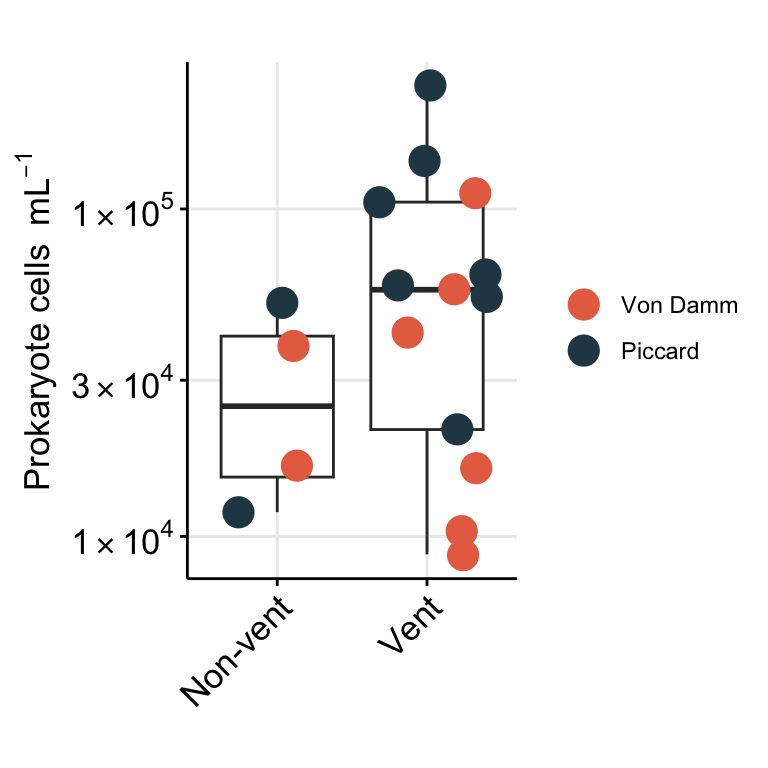
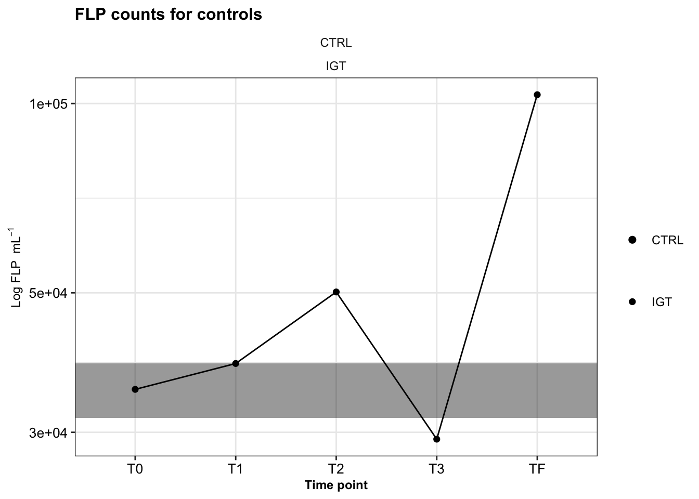
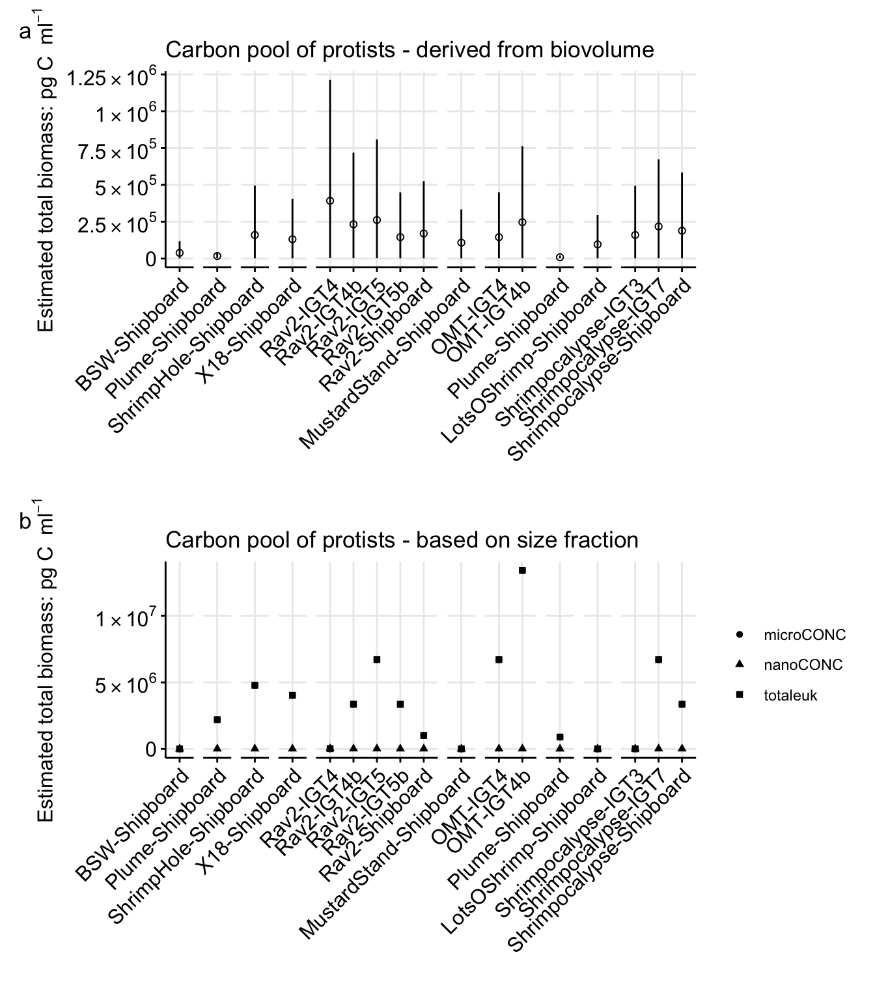
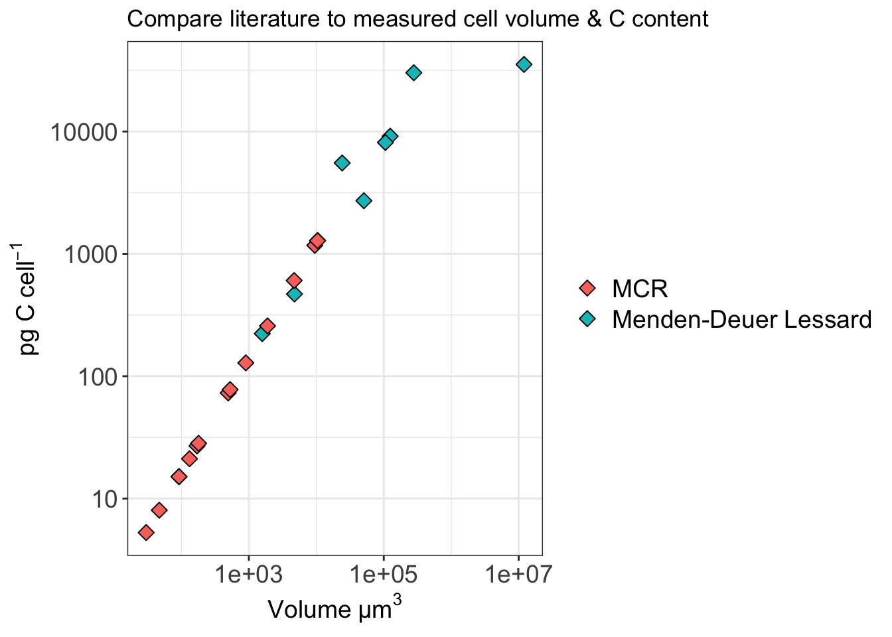

Code
library(tidyverse); library(cowplot); library(broom)
library(patchwork)Code below details how to import cell count (FLP count) information from Mid-Cayman Rise protistan grazing incubations and estimate grazing rate and cell biomass.
library(tidyverse); library(cowplot); library(broom)
library(patchwork)Set color schematic
# vent_ids <- c("BSW","Plume", "Shrimpocalypse", "LotsOShrimp", "X18", "OMT", "Rav2", "MustardStand", "ShrimpHole")
# vent_fullname <- c("Background","Plume", "Shrimpocalypse", "Lots 'O Shrimp", "X-18", "Old Man Tree", "Ravelin #2", "Mustard Stand", "Shrimp Hole")
# Order by temperature
vent_ids <- c("BSW","Plume", "LotsOShrimp", "Shrimpocalypse",
"ShrimpHole", "X18", "Rav2", "MustardStand", "OMT")
vent_fullname <- c("Background","Plume", "Lots 'O Shrimp", "Shrimpocalypse",
"Shrimp Hole", "X-18", "Ravelin #2", "Mustard Stand", "Old Man Tree")
site_ids <- c("VD", "Piccard")
site_fullname <- c("Von Damm", "Piccard")
site_color <- c("#264653", "#E76F51")
names(site_color) <- site_fullname
whole_pal <- c("#264653", "#2A9D8F", "#E9C46A","#F4A261", "#E76F51")
extra <- c("#eae2b7", "#5f0f40", "#90be6d", "#941b0c", "#577590")Import eukaryotic cell count data from grazing experiments. In this section, we will calculate cells per ml from raw counts (Field of view, etc.) and use to estimate protist cell concentration. These will be used below in grazing experiment calculations.
counts <- read.delim("input-data/euk-counts-compiled.txt",
blank.lines.skip = FALSE,
na.strings = c("", "NA"),
stringsAsFactors = FALSE) # Import
counts[is.na(counts)] <- 0 # Change blanks to zeroesRaw data table collected during microscopy count process. Below code reviews the structure of this raw data and updates column headers to be more ‘R’ friendly.
# head(counts)
colnames(counts) <- c("DATE", "SAMPLE", "EXPID", "VOL", "MAG", "FOV", "nanoNoFLP", "microNoFLP", "nanoFLP", "microFLP", "NOTES", "DateCompiled"); colnames(counts) [1] "DATE" "SAMPLE" "EXPID" "VOL" "MAG"
[6] "FOV" "nanoNoFLP" "microNoFLP" "nanoFLP" "microFLP"
[11] "NOTES" "DateCompiled"To count occurrence and number of FLP ingested by eukaryotic cells, the number of FLPs ingested was tallied and comma separated for multiple eukaryotic cells with FLP. These values need to separated and counted as 1 eukaryotic cell each, but retain the number of FLP per cell.
Parse raw microscopy count data.
counts_occur <- counts %>%
# remove incomplete
filter(NOTES != "Not countable") %>%
# Count number of euk cells observed with FLPs (ex. if "1,2", 'occur' will = 2)
mutate(nanoFLP_occur = as.numeric(str_count(nanoFLP, "[1-9]\\d*")),
microFLP_occur = as.numeric(str_count(microFLP, "[1-9]\\d*")),
# Add number of euk cells with FLPs to those without for total number of euk cells
nanoTOTAL = as.numeric(nanoNoFLP) + nanoFLP_occur,
microTOTAL = as.numeric(microNoFLP) + microFLP_occur,
euksTOTAL = nanoTOTAL + microTOTAL) %>%
data.frameInput data are the raw microscopy counts by FOV. Code below calculations cells/ml based on these values. Additionally, variance and standard deviation are also calculated. Eukaryotic cells were also classified by size, where micro equates to >20um and nano is <20um. All counts were done at 100x magnification, confirm this: unique(counts_occur$MAG).
Calculate cell concentration (cells/ml).
counts_cellsml_all <- counts_occur %>%
group_by(SAMPLE, EXPID, VOL) %>% #Calculate averages by sample
summarise(totalFOV = n(), # Count total FOV counted
nanoAvg = sum(nanoTOTAL)/totalFOV, #Average per FOV
nanoVar = var(nanoTOTAL), #Variance
nanoSd = (2*(sqrt(nanoVar))), #Standard deviation
microAvg = sum(microTOTAL)/totalFOV, ## Repeat for microeuks
microVar = var(microTOTAL),
microSd = (2*(sqrt(microVar))),
euksAvg = sum(euksTOTAL)/totalFOV, ## Repeat for total cell count
euksVar = var(euksTOTAL),
euksSd = (2*(sqrt(euksVar))),
.groups = 'drop_last') %>%
# Calculate cells/ml based on magnification (at x100, 0.01 is vol of grid), volume filtered (VOL), dilution factor (0.9), and area of counting grid (for Huber lab scope, it is 283.385):
mutate(nanoCONC = ((nanoAvg * 283.385)/(VOL * 0.01 * 0.9)),
microCONC = ((microAvg * 283.385)/(VOL * 0.01 * 0.9)),
eukCONC = ((euksAvg * 283.385)/(VOL * 0.01 * 0.9))
) %>%
# left_join(expmeta) %>%
separate(SAMPLE, c("Site", "Name"), sep = "-", remove = FALSE) %>%
separate(EXPID, c("TimePoint", "Replicate"), sep = "-", remove = FALSE) %>%
data.frameReplicates belong to the same experiment for either Bag or IGT incubation. Below, modify these names and label new column with bag or igt. And create an average across replicates.
Average cells/ml across replicates, pivot to long format
counts_cellsml_avg <- counts_cellsml_all %>%
select(Site, Name, TimePoint, Replicate, nanoCONC, microCONC, eukCONC) %>%
mutate(EXP_TYPE = case_when(
grepl("IGT", Replicate) ~ "IGT",
grepl("Rep", Replicate) ~ "Bag"
)) %>%
mutate(IGT_REP = case_when(
EXP_TYPE == "IGT" ~ Replicate,
EXP_TYPE == "Bag" ~ "Bag")) %>%
select(-Replicate) %>%
pivot_longer(cols = ends_with("CONC"), names_to = "VARIABLE", values_to = "CONCENTRATION") %>%
group_by(Site, Name, TimePoint, EXP_TYPE, IGT_REP, VARIABLE) %>%
# Calculate mean, variance, SD, min, and max
summarise(MEAN = mean(CONCENTRATION),
VAR = var(CONCENTRATION),
SD = sd(CONCENTRATION),
SEM =(sd(CONCENTRATION)/sqrt(length(CONCENTRATION))),
MIN = min(CONCENTRATION),
MAX = max(CONCENTRATION),
.groups = 'drop_last') %>%
data.frameNOTES on calculations:
VAR = takes the sum of the squares of each value’s deviation from the mean and divides by the number of such values minus one. This differs from the calculation of variance across an entire population in that the latter divides by the size of the dataset without subtracting one.
SD = standard deviation of all values
SEM = standard deviation of sampling distribution; standard deviation divided by the square root of the sample size.
Save output file
# save(counts_cellsml_all, counts_cellsml_avg, file = "input-data/raw-avg-eukcount.RData")The average euk cells per ml value was taken when TRUE replicates were conducted and we observed a cell count.
Plot all euk cell counts for supplement
# Order by temperature
vent_ids <- c("BSW","Plume", "LotsOShrimp", "Shrimpocalypse",
"ShrimpHole", "X18", "Rav2", "MustardStand", "OMT")
vent_fullname <- c("Background","Plume", "Lots 'O Shrimp", "Shrimpocalypse",
"Shrimp Hole", "X-18", "Ravelin #2", "Mustard Stand", "Old Man Tree")
site_ids <- c("VD", "Piccard")
site_fullname <- c("Von Damm", "Piccard")
head(counts_cellsml_avg) Site Name TimePoint EXP_TYPE IGT_REP VARIABLE MEAN VAR SD SEM
1 Piccard LotsOShrimp T0 Bag Bag eukCONC 230.90630 NA NA NA
2 Piccard LotsOShrimp T0 Bag Bag microCONC 0.00000 NA NA NA
3 Piccard LotsOShrimp T0 Bag Bag nanoCONC 230.90630 NA NA NA
4 Piccard LotsOShrimp T15 Bag Bag eukCONC 230.90630 NA NA NA
5 Piccard LotsOShrimp T15 Bag Bag microCONC 41.98296 NA NA NA
6 Piccard LotsOShrimp T15 Bag Bag nanoCONC 188.92333 NA NA NA
MIN MAX
1 230.90630 230.90630
2 0.00000 0.00000
3 230.90630 230.90630
4 230.90630 230.90630
5 41.98296 41.98296
6 188.92333 188.92333# svg(filename = "../../../Manuscripts_presentations_reviews/MCR-grazing-2023/svg-files-figures/figS2.svg")
counts_cellsml_avg %>%
mutate(EXP_CATEGORY = case_when(
EXP_TYPE == "Bag" ~ "Shipboard",
TRUE ~ "IGT"
)) %>%
mutate(VARIABLE_FIX = case_when(
VARIABLE == "microCONC" ~ "microeukaryote",
VARIABLE == "nanoCONC" ~ "nanoeukaryote",
VARIABLE == "eukCONC" ~ "Total eukaryote"
)) %>%
# Factor name order and label
mutate(SiteOrder = factor(Site, levels = site_ids, labels = site_fullname)) %>%
mutate(NameOrder = factor(Name, levels = vent_ids, labels = vent_fullname)) %>%
# Plot with outline vs. solid circle
ggplot(aes(x = NameOrder, y = MEAN, group = NameOrder,
fill = VARIABLE_FIX,
color = VARIABLE_FIX,
shape = EXP_CATEGORY)) +
geom_jitter(size = 2, stroke = 2, aes(fill = VARIABLE_FIX, color = VARIABLE_FIX,
shape = EXP_CATEGORY)) +
geom_boxplot(alpha = 0.1) +
scale_shape_manual(values = c(1, 21)) +
scale_fill_manual(values = c("#e7298a", "#fcbba1", "#c6dbef")) +
scale_color_manual(values = c("#e7298a", "#fcbba1", "#c6dbef")) +
coord_flip() +
scale_y_log10() +
facet_grid(SiteOrder ~ EXP_CATEGORY, space = "free", scale = "free") +
theme_bw() +
theme(axis.text.x = element_text(angle = 0, h = 1, vjust = 1),
strip.background = element_blank(),
legend.position = "right",
legend.title = element_blank()) +
labs(x = "", y = bquote("Eukaryote cells "~mL^-1),
title = "Distribution of all eukaryotic cell counts")Warning: Transformation introduced infinite values in continuous y-axis
Transformation introduced infinite values in continuous y-axisWarning: Removed 21 rows containing non-finite values (`stat_boxplot()`).Warning: The following aesthetics were dropped during statistical transformation: fill,
colour
ℹ This can happen when ggplot fails to infer the correct grouping structure in
the data.
ℹ Did you forget to specify a `group` aesthetic or to convert a numerical
variable into a factor?
The following aesthetics were dropped during statistical transformation: fill,
colour
ℹ This can happen when ggplot fails to infer the correct grouping structure in
the data.
ℹ Did you forget to specify a `group` aesthetic or to convert a numerical
variable into a factor?
The following aesthetics were dropped during statistical transformation: fill,
colour
ℹ This can happen when ggplot fails to infer the correct grouping structure in
the data.
ℹ Did you forget to specify a `group` aesthetic or to convert a numerical
variable into a factor?
The following aesthetics were dropped during statistical transformation: fill,
colour
ℹ This can happen when ggplot fails to infer the correct grouping structure in
the data.
ℹ Did you forget to specify a `group` aesthetic or to convert a numerical
variable into a factor?
# dev.off()Eukaryote cell concentration (cells/ml) are lower in the background and plume samples compared to vent sites. ~300 cells/ml in background and plume compared to ~1000 cells per ml at the vent sites. These values are also consistent between each vent site (Von Damm and Piccard) and between Bag and IGT samples.
Boxplot represents the median (line in box) and the 1st and 3rd quartiles in the lower and upper hinges, respectively (25th and 75th percentiles). Black data points are outliers from the boxplot. Upper and lower whiskers represent the 1.5 * interquartile ranges. Pink data points are the values contributing to the boxplot (individial counts across replicates and time points.)
eukCONC is the sum of micro and nano. Because there was a discrepency between the micro and nano cell counts, we plan to combine for most of the analysis. Here we show that the cell concentration across replicate samples was similar throughout experiments. And that the bag versus IGT experiment results were within range of one another.
Include plot over time.
# Plot trend line of euk cell count for all experiments
# svg(filename = "../../../Manuscripts_presentations_reviews/MCR-grazing-2023/svg-files-figures/figS4.svg")
counts_cellsml_avg %>%
mutate(EXP_CATEGORY = case_when(
EXP_TYPE == "Bag" ~ "Shipboard",
TRUE ~ "IGT"
)) %>%
mutate(EXP_CATEGORY_WREP = case_when(
EXP_TYPE == "Bag" ~ "Shipboard",
TRUE ~ IGT_REP
)) %>%
# Factor name order and label
mutate(SiteOrder = factor(Site, levels = site_ids, labels = site_fullname)) %>%
mutate(NameOrder = factor(Name, levels = vent_ids, labels = vent_fullname)) %>%
filter(VARIABLE == "eukCONC") %>%
unite("Experiment", NameOrder, EXP_CATEGORY, sep = "-", remove = FALSE) %>%
unite("Experiment_rep", NameOrder, EXP_CATEGORY_WREP, sep = "-", remove = FALSE) %>%
ggplot(aes(x = TimePoint, y = MEAN, shape = EXP_CATEGORY, fill = NameOrder,
color = NameOrder)) +
geom_path(aes(group = Experiment_rep), color = "black") +
geom_errorbar(aes(ymax = (MEAN + SEM), ymin = (MEAN - SEM)), width = 0.2) +
geom_point(stat = "identity", size = 2, stroke = 2, aes(shape = EXP_CATEGORY,
fill = NameOrder,
color = NameOrder)) +
scale_shape_manual(values = c(1, 21)) +
scale_fill_brewer(palette = "Paired") +
scale_color_brewer(palette = "Paired") +
scale_y_log10() +
facet_wrap(SiteOrder ~ EXP_CATEGORY, scales = "free") +
theme_classic() + theme(strip.background = element_blank(),
legend.title = element_blank(),
title = element_text(size = 7, face = "bold"),
axis.title = element_text(size = 9)) +
labs(title = "Total euk cell counts for each experiment", y = bquote("Average eukaryote cells "~mL^-1), x = "Time point")
# dev.off()note there is an overall drop in euk cells/ml in the final time point. Especially with the IGT samples. Take this into consideration
For Figure 1a
# Plot trend line of euk cell count for all experiments
euk_plot <- counts_cellsml_avg %>%
mutate(EXP_CATEGORY = case_when(
EXP_TYPE == "Bag" ~ "Shipboard",
TRUE ~ "IGT"
)) %>%
mutate(EXP_CATEGORY_WREP = case_when(
EXP_TYPE == "Bag" ~ "Shipboard",
TRUE ~ IGT_REP
)) %>%
# Factor name order and label
mutate(SiteOrder = factor(Site, levels = site_ids, labels = site_fullname)) %>%
mutate(NameOrder = factor(Name, levels = vent_ids, labels = vent_fullname)) %>%
filter(VARIABLE == "eukCONC") %>%
filter(TimePoint == "T0") %>%
filter(!(grepl("b", IGT_REP))) %>%
unite("SITE_TYPE", Site, EXP_CATEGORY, sep = "-", remove = FALSE) %>%
unite("Experiment", Name, EXP_CATEGORY, sep = "-", remove = FALSE) %>%
unite("Experiment_rep", Name, EXP_CATEGORY_WREP, sep = "-", remove = FALSE) %>%
ggplot(aes(x = NameOrder, y = MEAN, shape = SITE_TYPE, fill = SITE_TYPE,
color = SITE_TYPE)) +
geom_errorbar(aes(ymax = (MEAN + SEM), ymin = (MEAN - SEM)), width = 0.2, color = "black") +
geom_point(stat = "identity", size = 2, stroke = 2, aes(shape = SITE_TYPE,
fill = SITE_TYPE,
color = SITE_TYPE)) +
scale_shape_manual(values = c(21, 21, 21, 21)) +
scale_fill_manual(values = c("white", "#264653", "white", "#E76F51")) +
scale_color_manual(values = c("#264653", "#264653", "#E76F51", "#E76F51")) +
scale_y_log10() +
# cfacet_grid(. ~ SiteOrder, scales = "free") +
facet_grid(.~SiteOrder, space = "free", scales = "free") +
theme_minimal() +
theme(panel.grid.major = element_line(), panel.grid.minor = element_blank(),
panel.background = element_blank(),
axis.line = element_line(colour = "black"),
axis.text.x = element_text(color="black", size = 13,
angle = 45, hjust = 1, vjust = 1),
axis.text.y = element_text(color="black", size = 13),
axis.title =element_text(color="black", size = 13),
axis.ticks = element_line(),
strip.text =element_blank(), legend.title = element_blank()) +
labs(x = "", y = bquote("Eukaryote cells "~mL^-1),
title = "")
euk_plot
# Last saved - April 13, 2023
save(counts_cellsml_all, counts_cellsml_avg, counts_occur, file = "output-data/MCR-cellcount-dfs")DAPI slide counts from prokaryotes from same sites. Import and compare.
prok <- read.delim("input-data/prokINSITU-counts-compiled.txt")
insitu_proks <- prok %>%
filter(CELLML != "not countable") %>%
separate(SAMPLE, c("Site", "Name"), sep = "-", remove = FALSE) %>%
group_by(SAMPLE, Site, Name) %>%
summarise(MEAN = mean(as.numeric(CELLML)),
SD = sd(CELLML),
SEM = (sd(CELLML)/sqrt(length(CELLML))),
MIN = min(CELLML),
MAX = max(CELLML),
.groups = "rowwise") %>%
data.frameVisualize counts from proks. Get summary of prok counts, and incorporate into plot
# head(insitu_proks)
# insitu_proks$Name
insitu_proks %>% filter(Name != "Quakeplume") %>%
mutate(type = case_when(
Name == "BSW" ~ "non-vent",
Name == "Plume" ~ "non-vent",
TRUE ~ "vent"
)) %>%
# group_by(type) %>%
group_by(type, Site) %>%
summarize(mean = mean(MEAN),
min = min(MEAN),
max = max(MEAN))`summarise()` has grouped output by 'type'. You can override using the
`.groups` argument.# A tibble: 4 × 5
# Groups: type [2]
type Site mean min max
<chr> <chr> <dbl> <dbl> <dbl>
1 non-vent Piccard 31645. 11860. 51429.
2 non-vent VD 27184. 16478. 37890.
3 vent Piccard 109713. 53878. 238586.
4 vent VD 40907. 8816. 111430.Factor site names, etc.
# Ordered by temperature
insitu_proks$Name_order <- factor(insitu_proks$Name, levels = c("BSW", "Plume",
"ShrimpHole", "X18", "MustardStand",
"Rav2", "OMT","Bartizan","ArrowLoop", "Rav1",
"Quakeplume", "LotsOShrimp", "SouthofHotChimlet",
"SouthofLungSnack", "Shrimpocalypse", "ShrimpGulley",
"HotChimlet1"),
labels = c("Background","Plume",
"Shrimp Hole", "X-18","Mustard Stand",
"Ravelin #2", "Old Man Tree", "Bartizan", "Arrow Loop", "Ravelin #1",
"Quakeplume", "Lots 'O Shrimp", "South of Hot Chimlet",
"South of LungSnack", "Shrimpocalypse", "Shrimp Gulley", "Hot Chimlet #1"))
site_ids <- c("VD", "Piccard")
site_fullname <- c("Von Damm", "Piccard")
insitu_proks$Site_order <- factor(insitu_proks$Site, levels = site_ids, labels = site_fullname)
site_color <- c("#E76F51", "#264653")
site_fill <- c("#E76F51", "#264653")
# names(site_color) <- site_fullnameWrite function to output scientific notation in the plot with x 10^a
library(scales)
Attaching package: 'scales'The following object is masked from 'package:purrr':
discardThe following object is masked from 'package:readr':
col_factorscientific_10 = function(x) {
ifelse(
x==0, "0",
parse(text = sub("e[+]?", " %*% 10^", scales::scientific_format()(x)))
)
} prok_plot <- ggplot(insitu_proks, aes(x = Name_order, y = MEAN)) +
geom_errorbar(aes(ymax = (MEAN + SEM), ymin = (MEAN - SEM)), width = 0.2) +
geom_point(stat = "identity", shape = 21, stroke = 2, aes(fill = Site_order,
color = Site_order), size = 3) +
facet_grid(.~ Site_order, space = "free", scales = "free") +
scale_fill_manual(values = c("#E76F51", "#264653")) +
scale_color_manual(values = c("#E76F51", "#264653")) +
labs(y = bquote("Prokaryote cells "~mL^-1), x = "", title = "") +
scale_y_log10(label = scientific_10) +
# scale_y_log10(label=trans_format("log10",math_format(10^.x))) +
# scale_y_continuous(label = scientific_10) +
theme_minimal() +
theme(panel.grid.major = element_line(), panel.grid.minor = element_blank(),
panel.background = element_blank(),
axis.line = element_line(colour = "black"),
axis.text.x = element_text(color="black", size = 13,
angle = 45, hjust = 1, vjust = 1),
axis.text.y = element_text(color="black", size = 13),
axis.title =element_text(color="black", size = 13),
axis.ticks = element_line(),
strip.text =element_blank(), legend.title = element_blank())
prok_plot
Combined eukaryote and prokaryote cell counts ## Figure 1a-b
euk_prok_ab <- (euk_plot + theme(legend.position = "top")) + (prok_plot + theme(legend.position = "top")) + patchwork::plot_layout(ncol = 2) + patchwork::plot_annotation(tag_levels = "a")
euk_prok_ab
Compare in situ prokaryote cell counts from 2020 to previous years
prok_prev <- read.csv("input-data/cellcount_previousyr.csv")
prok_prev_formatted <- prok_prev %>%
mutate(VENTSITE = case_when(
grepl("Piccard", Site) ~ "Piccard",
grepl("Von Damm", Site) ~ "VD"
)) %>%
filter(!is.na(YEAR)) %>% #QC of
# filter(cells_ml != "NC") %>%
# filter(cells_ml != "") %>%
# filter(cells_ml != "no data") %>%
type.convert(as.is = TRUE, numerals = "no.loss") %>%
select(YEAR, VENTSITE, NAME = Name, REP=Replicate, CELLML = cells_ml, ORIGSAMPLE = Orig_vent_site_ID, ID_number, Origin)Re-import 2020 data to compare.
# Re-import 2020
prok <- read.delim("input-data/prokINSITU-counts-compiled.txt")
# View(prok)
proks_allyrs <- prok %>%
separate(SAMPLE, c("VENTSITE", "NAME"), sep = "-", remove = FALSE) %>%
mutate(YEAR = 2020) %>%
select(YEAR, VENTSITE, NAME, REP, CELLML, ORIGSAMPLE = BAC) %>%
bind_rows(prok_prev_formatted %>% select(-ID_number, -Origin)) %>%
type.convert(as.is = TRUE) %>%
# Remove not countable or not data samples:
filter(CELLML != "NC") %>%
filter(CELLML != "") %>%
filter(CELLML != "no data") %>%
filter(CELLML != "not countable") %>%
data.frame
# View(proks_allyrs)
# View(as.data.frame(unique(proks_allyrs$NAME)))
vent_order <- c("BSW","Plume","Quakeplume","NearsummitBeebee","MainOrifice","NearMainOrifice","Rav1","HotChimlet1","HotChimlet","SouthofHotChimlet","NearHotChimlet","HotCracks1","HotCracks2","ShrimpHole","ShrimpHole(X18)","X18","X19","SouthofLungSnack","TwinPeaks","OMT","WhiteCastle","GingerCastle","ArrowLoop","Bartizan","LotsOShrimp","MustardStand","ShrimpButtery","ShrimpCanyon","ShrimpGulley","Shrimpocalypse","ShrimpVegas")
vent_names <- c("Background","Plume","Quakeplume","Near summit Beebee Vents Mound","Main Orifice","Near Main Orifice","Ravelin #1","Hot Chimlet #1","Hot Chimlet","South of Hot Chimlet","Near Hot Chimlet","Hot Cracks #1","Hot Cracks #2","Shrimp Hole","Shrimp Hole (X-18)","X-18","X-19","South of Lung Snack","Twin Peaks","Old Man Tree","White Castle","Ginger Castle","Arrow Loop","Bartizan","Lots O Shrimp","Mustard Stand","Shrimp Buttery","Shrimp Canyon","Shrimp Gulley","Shrimpocalypse","Shrimp Vegas")
proks_allyrs$NAME_ORDER <- factor(proks_allyrs$NAME, levels = vent_order, labels = vent_names)
proks_allyrs$VENTSITE_ORDER <- factor(proks_allyrs$VENTSITE, levels = c("Piccard", "VD"), labels = c("Piccard", "Von Damm"))Plot by year.
# pdf("compare-across-yr-cellcount-04052021.pdf", h = 8, w = 7)
ggplot(proks_allyrs, aes(x = NAME_ORDER, y = as.numeric(CELLML), fill = factor(YEAR), shape = VENTSITE_ORDER)) +
geom_point(stat = "identity", aes(fill = factor(YEAR)), size = 3) +
scale_shape_manual(values = c(21,23)) +
coord_flip() +
facet_grid(VENTSITE_ORDER ~ ., space = "free", scales = "free") +
scale_y_log10() +
scale_fill_manual(values = c("#1c9099", "#ffeda0", "#fc4e2a")) +
theme_linedraw() +
theme(axis.text = element_text(color = "black", size = 10),
strip.background = element_blank(),
strip.text.y = element_text(color = "black", size = 11, hjust = 0, vjust = 1),
legend.title = element_blank(),
legend.position = "bottom",
panel.grid.minor = element_blank(),
panel.grid.major = element_line(color = "grey")) +
labs(y = bquote("Cells "~mL^-1), x = "") +
guides(fill=guide_legend(override.aes=list(shape=22)))
# dev.off()# head(insitu_proks)
# names(counts_cellsml_avg)
prok_tojoin <- insitu_proks %>%
mutate(MEAN_SIG = signif(as.numeric(MEAN), digits = 5),
MIN_sig = signif(as.numeric(MIN), digits = 4),
MAX_sig = signif(as.numeric(MAX), digits = 4)) %>%
unite("PROK_MinMax", MIN_sig, MAX_sig, sep = " / ") %>%
select(Site, Name, PROK_ml = MEAN_SIG, PROK_MinMax, PROK_sem = SEM)
# prok_tojoinPart of Table 1.
euk_prok_counts <- counts_cellsml_avg %>%
mutate(EXP_CATEGORY = case_when(
EXP_TYPE == "Bag" ~ "Shipboard",
TRUE ~ "IGT"
)) %>%
mutate(EXP_CATEGORY_WREP = case_when(
EXP_TYPE == "Bag" ~ "Shipboard",
TRUE ~ IGT_REP
)) %>%
# Factor name order and label
mutate(SiteOrder = factor(Site, levels = site_ids, labels = site_fullname)) %>%
mutate(NameOrder = factor(Name, levels = vent_ids, labels = vent_fullname)) %>%
filter(VARIABLE == "eukCONC") %>%
filter(TimePoint == "T0") %>%
filter(!(grepl("b", IGT_REP))) %>%
unite("SITE_TYPE", Site, EXP_CATEGORY, sep = "-", remove = FALSE) %>%
unite("Experiment", Name, EXP_CATEGORY, sep = "-", remove = FALSE) %>%
unite("Experiment_rep", Name, EXP_CATEGORY_WREP, sep = "-", remove = FALSE) %>%
mutate(MEAN_SIG = signif(MEAN, digits = 5),
MIN_sig = signif(MIN, digits = 4),
MAX_sig = signif(MAX, digits = 4)) %>%
unite("EUK_MinMax", MIN_sig, MAX_sig, sep = " / ") %>%
select(Site, Name, SITE_TYPE, Experiment, Experiment_rep, VARIABLE, EUK_ml = MEAN_SIG, EUK_MinMax, EUK_sem = SEM) %>%
left_join(prok_tojoin)Joining with `by = join_by(Site, Name)`euk_prok_counts # add to this later for Table 1 Site Name SITE_TYPE Experiment
1 Piccard LotsOShrimp Piccard-Shipboard LotsOShrimp-Shipboard
2 Piccard Plume Piccard-Shipboard Plume-Shipboard
3 Piccard Shrimpocalypse Piccard-Shipboard Shrimpocalypse-Shipboard
4 Piccard Shrimpocalypse Piccard-IGT Shrimpocalypse-IGT
5 Piccard Shrimpocalypse Piccard-IGT Shrimpocalypse-IGT
6 VD BSW VD-Shipboard BSW-Shipboard
7 VD MustardStand VD-Shipboard MustardStand-Shipboard
8 VD OMT VD-IGT OMT-IGT
9 VD Plume VD-Shipboard Plume-Shipboard
10 VD Rav2 VD-Shipboard Rav2-Shipboard
11 VD Rav2 VD-IGT Rav2-IGT
12 VD Rav2 VD-IGT Rav2-IGT
13 VD ShrimpHole VD-Shipboard ShrimpHole-Shipboard
14 VD X18 VD-Shipboard X18-Shipboard
Experiment_rep VARIABLE EUK_ml EUK_MinMax EUK_sem PROK_ml
1 LotsOShrimp-Shipboard eukCONC 230.910 230.9 / 230.9 NA 53878
2 Plume-Shipboard eukCONC 79.301 55.98 / 112 16.819081 51429
3 Shrimpocalypse-Shipboard eukCONC 454.820 454.8 / 454.8 NA 238590
4 Shrimpocalypse-IGT3 eukCONC 384.840 384.8 / 384.8 NA 238590
5 Shrimpocalypse-IGT7 eukCONC 524.790 524.8 / 524.8 NA 238590
6 BSW-Shipboard eukCONC 91.838 69.97 / 113.7 21.866127 37890
7 MustardStand-Shipboard eukCONC 259.770 230.9 / 288.6 28.863287 56677
8 OMT-IGT4 eukCONC 349.860 349.9 / 349.9 NA NA
9 Plume-Shipboard eukCONC 157.770 55.98 / 284.4 67.098589 16478
10 Rav2-Shipboard eukCONC 409.330 335.9 / 482.8 73.470185 NA
11 Rav2-IGT4 eukCONC 944.620 944.6 / 944.6 NA NA
12 Rav2-IGT5 eukCONC 629.740 629.7 / 629.7 NA NA
13 ShrimpHole-Shipboard eukCONC 385.720 377.8 / 393.6 7.871806 41983
14 X18-Shipboard eukCONC 314.870 209.9 / 419.8 104.957407 111430
PROK_MinMax PROK_sem
1 26240 / 90260 13727.191
2 46810 / 56050 4618.126
3 108700 / 322000 65792.588
4 108700 / 322000 65792.588
5 108700 / 322000 65792.588
6 18470 / 56470 8608.427
7 42400 / 70950 14274.207
8 <NA> NA
9 13850 / 19100 2623.935
10 <NA> NA
11 <NA> NA
12 <NA> NA
13 38830 / 45130 3148.722
14 108500 / 114400 2973.793Calculate FLP per eukaryotic cell over time. Goal is to make these calculations and then determine best fit line. Slope of best fit line is the grazing rate. Need to take into account euk cells with FLPs and then the euk cells withOUT FLPs, these will be zeroes to take into account for FLPs/euk averages.
load("output-data/MCR-cellcount-dfs", verbose = TRUE)Loading objects:
counts_cellsml_all
counts_cellsml_avg
counts_occurIsolate euk cell counts with FLPs (comma separated for counts). These need to be separated into rows, use counts_occur data frame from above.
# Select nano and micro counts with FLPs
counts_sepflp <- counts_occur %>%
filter(!NOTES == "Discard") %>%
filter(!(NOTES == "DTAF stain prevented counts of FLP, Euks only")) %>%
select(DATE, SAMPLE, EXPID, VOL, MAG, FOV, nanoFLP, microFLP) %>%
# Inputs that are comma separated will be split into a new row
separate_rows(microFLP, sep = ",", convert = TRUE) %>%
separate_rows(nanoFLP, sep = ",", convert = TRUE) %>%
# Replace NAs with zeroes
replace_na(list(microFLP = 0, nanoFLP = 0)) %>%
data.frameoptional gut check of data table modification
## Check, see FOV 23, separated into rows.
# View(counts_sepflp %>%
# filter(SAMPLE == "VD-Rav2" & EXPID == "T10-Rep1"))
# View(counts_occur %>%
# filter(SAMPLE == "VD-Rav2" & EXPID == "T10-Rep1"))Isolate counts that are >0, so only eukaryote cells that were observed to have FLPs are included. Then calculate FLP per euk cell by dividing by 1 (each row is a euk cell, based on data transformation above).
counts_flp <- counts_sepflp %>%
select(SAMPLE, EXPID, nano_size = nanoFLP, micro_size = microFLP) %>%
pivot_longer(cols = ends_with("_size"), names_to = "SizeFrac", values_to = "num_of_FLP") %>%
filter(num_of_FLP > 0) %>%
separate(SAMPLE, c("Site", "Name"), sep = "-", remove = FALSE) %>%
separate(EXPID, c("TimePoint", "Replicate"), sep = "-", remove = FALSE) %>%
mutate(EXP_TYPE = case_when(
grepl("IGT", Replicate) ~ "IGT",
grepl("Rep", Replicate) ~ "Bag"
)) %>%
mutate(IGT_REP = case_when(
EXP_TYPE == "IGT" ~ Replicate,
EXP_TYPE == "Bag" ~ "Bag")) %>%
group_by(SAMPLE, EXPID, EXP_TYPE, IGT_REP, SizeFrac) %>%
summarise(total_FLP = sum(num_of_FLP),
total_euks_wflp = n(),
.groups = "rowwise") %>%
data.frame
head(counts_flp) SAMPLE EXPID EXP_TYPE IGT_REP SizeFrac total_FLP
1 Piccard-LotsOShrimp T0-Rep3 Bag Bag nano_size 3
2 Piccard-LotsOShrimp T15-Rep3 Bag Bag micro_size 1
3 Piccard-LotsOShrimp T15-Rep3 Bag Bag nano_size 3
4 Piccard-LotsOShrimp T20-Rep3 Bag Bag nano_size 2
5 Piccard-Plume T0-Rep1 Bag Bag micro_size 2
6 Piccard-Plume T0-Rep1 Bag Bag nano_size 4
total_euks_wflp
1 2
2 1
3 2
4 1
5 1
6 3OUTPUT COLUMNS: (1) total_FLP = sum of FLPs found inside a euk cell (2) total_euks_wflp = number of euks counted with ingested FLP
Repeat above operation for euk cells without any FLP. Here, subset total number of observations where there was a euk cell without FLP. These need to be counted as euk cell without an FLP.
Below code repeats process and compiles with other FLP/euk cell data.
Repeat above process for euk cells without FLPs (0 FLP per euk cell needs to be included in overall average).
counts_flp_compiled <- counts_occur %>%
filter(!(NOTES == "Discard")) %>% #Discard bad counts
filter(!(NOTES == "DTAF stain prevented counts of FLP, Euks only")) %>%
type.convert(as.is = TRUE) %>% #modify str() for columns
select(SAMPLE, EXPID, nano_size = nanoNoFLP, micro_size = microNoFLP) %>% #select non flp
pivot_longer(cols = ends_with("_size"), names_to = "SizeFrac", values_to = "num_of_euks") %>%
separate(SAMPLE, c("Site", "Name"), sep = "-", remove = FALSE) %>%
separate(EXPID, c("TimePoint", "Replicate"), sep = "-", remove = FALSE) %>%
mutate(EXP_TYPE = case_when(
grepl("IGT", Replicate) ~ "IGT",
grepl("Rep", Replicate) ~ "Bag"
)) %>%
mutate(IGT_REP = case_when(
EXP_TYPE == "IGT" ~ Replicate,
EXP_TYPE == "Bag" ~ "Bag")) %>%
# filter(num_of_euks > 0) %>% # Remove observed zero counts
group_by(SAMPLE, EXPID, EXP_TYPE, IGT_REP, SizeFrac) %>%
summarise(total_euks_noFLP = sum(num_of_euks),
.groups = "rowwise") %>%
# Join with FLP count information
## SAMPLE, EXPID, EXPTYPE, IGTREP, and SizeFrac variables should match
left_join(counts_flp) %>% # Join with the counts of FLP per euk cell
replace_na(list(total_FLP = 0, total_euks_wflp = 0)) %>% #Replace NAs with zero
data.frameJoining with `by = join_by(SAMPLE, EXPID, EXP_TYPE, IGT_REP, SizeFrac)`Extract total eukaryote cell value by adding across nano and micro. Then combine the nano and micro cell counts.
counts_flp_compiled_all <- counts_flp_compiled %>%
# Exclude size fraction:
group_by(SAMPLE, EXPID, EXP_TYPE, IGT_REP) %>%
summarise(total_euks_noFLP = sum(total_euks_noFLP),
total_FLP = sum(total_FLP),
total_euks_wflp = sum(total_euks_wflp),
.groups = "rowwise") %>%
add_column(SizeFrac = "total_euks") %>% #Add SizeFrac column
bind_rows(counts_flp_compiled) %>% # Combine back with flp compiled list
data.frameFirst need to import and compile with metadata to get exact timing of experiments.
metadata <- read.delim("input-data/flp-exp-metadata-compiled.txt")
exp_metadata <- read.csv("input-data/flp_exp_metadata.csv")Add metadata.
IGT_#_ denotes a separate IGT experiment. Due to bottle effects and the need to look at how replicate experiments compared, lets keep these separate. For IGT experiments labeled “b”, this means the OTHER HALF of the filter was counted or re-counted as a way to confirm my euk counting was precise.
counts_flp_calcs_all <- counts_flp_compiled_all %>%
# Add in metadata
# IGTXb are replicate counts, use this to include them as replicates
separate(EXPID, c("TimePoint", "REP"), sep = "-", remove = FALSE) %>%
mutate(
REP = ifelse(grepl("IGT5b", REP), "IGT5", REP),
REP = ifelse(grepl("IGT4b", REP), "IGT4", REP),
REP = ifelse(grepl("Bag", EXP_TYPE), "Bag", REP)) %>%
left_join(metadata, by = c("SAMPLE" = "SAMPLE", "TimePoint" = "TimePoint", "REP" = "REP")) %>%
left_join(exp_metadata, by = c("SAMPLE" = "SAMPLE", "REP" = "REP")) %>%
separate(SAMPLE, c("Site", "Name"), sep = "-", remove = FALSE) %>%
separate(EXPID, c("TimePoint", "Replicate_ID"), sep = "-", remove = FALSE) %>%
## Treat repeated IGT counts completely separate
group_by(SAMPLE, Site, Name, EXPID, TimePoint, Replicate_ID, EXP_TYPE, IGT_REP, SizeFrac) %>%
## Treat repeated IGT counts as replicates (e.g., IGT4b and IGT4 == IGT4)
# group_by(SAMPLE, Site, Name, EXPID, TimePoint, Replicate_ID, EXP_TYPE, REP, SizeFrac) %>%
# FLPperEuk is the total FLP divided by the total number of euk cells counted
mutate(FLPperEuk = total_FLP/(sum(total_euks_noFLP, total_euks_wflp))) %>%
unite("Experiment", Name, REP, sep = "-", remove = FALSE) %>%
data.frame
counts_flp_calcs_all SAMPLE Site Experiment Name EXPID
1 Piccard-LotsOShrimp Piccard LotsOShrimp-Bag LotsOShrimp T0-Rep3
2 Piccard-LotsOShrimp Piccard LotsOShrimp-Bag LotsOShrimp T15-Rep3
3 Piccard-LotsOShrimp Piccard LotsOShrimp-Bag LotsOShrimp T20-Rep3
4 Piccard-LotsOShrimp Piccard LotsOShrimp-Bag LotsOShrimp T40-Rep3
5 Piccard-Plume Piccard Plume-Bag Plume T0-Rep1
6 Piccard-Plume Piccard Plume-Bag Plume T0-Rep2
7 Piccard-Plume Piccard Plume-Bag Plume T0-Rep3
8 Piccard-Plume Piccard Plume-Bag Plume T10-Rep1
9 Piccard-Plume Piccard Plume-Bag Plume T10-Rep2
10 Piccard-Plume Piccard Plume-Bag Plume T10-Rep3
11 Piccard-Plume Piccard Plume-Bag Plume T15-Rep1
12 Piccard-Plume Piccard Plume-Bag Plume T15-Rep2
13 Piccard-Plume Piccard Plume-Bag Plume T15-Rep3
14 Piccard-Plume Piccard Plume-Bag Plume T20-Rep1
15 Piccard-Plume Piccard Plume-Bag Plume T20-Rep2
16 Piccard-Plume Piccard Plume-Bag Plume T20-Rep3
17 Piccard-Plume Piccard Plume-Bag Plume T40-Rep1
18 Piccard-Plume Piccard Plume-Bag Plume T40-Rep2
19 Piccard-Plume Piccard Plume-Bag Plume T40-Rep3
20 Piccard-Shrimpocalypse Piccard Shrimpocalypse-IGT3 Shrimpocalypse T0-IGT3
21 Piccard-Shrimpocalypse Piccard Shrimpocalypse-Bag Shrimpocalypse T0-Rep3
22 Piccard-Shrimpocalypse Piccard Shrimpocalypse-IGT3 Shrimpocalypse T1-IGT3
23 Piccard-Shrimpocalypse Piccard Shrimpocalypse-Bag Shrimpocalypse T10-Rep3
24 Piccard-Shrimpocalypse Piccard Shrimpocalypse-Bag Shrimpocalypse T15-Rep3
25 Piccard-Shrimpocalypse Piccard Shrimpocalypse-IGT3 Shrimpocalypse T2-IGT3
26 Piccard-Shrimpocalypse Piccard Shrimpocalypse-Bag Shrimpocalypse T20-Rep3
27 Piccard-Shrimpocalypse Piccard Shrimpocalypse-IGT3 Shrimpocalypse T3-IGT3
28 Piccard-Shrimpocalypse Piccard Shrimpocalypse-Bag Shrimpocalypse T40-Rep3
29 VD-BSW VD BSW-Bag BSW T0-Rep1
30 VD-BSW VD BSW-Bag BSW T0-Rep2
31 VD-BSW VD BSW-Bag BSW T10-Rep2
32 VD-BSW VD BSW-Bag BSW T10-Rep3
33 VD-BSW VD BSW-Bag BSW T15-Rep1
34 VD-BSW VD BSW-Bag BSW T15-Rep2
35 VD-BSW VD BSW-Bag BSW T15-Rep3
36 VD-BSW VD BSW-Bag BSW T20-Rep1
37 VD-BSW VD BSW-Bag BSW T20-Rep2
38 VD-BSW VD BSW-Bag BSW T20-Rep3
39 VD-BSW VD BSW-Bag BSW T40-Rep1
40 VD-BSW VD BSW-Bag BSW T40-Rep2
41 VD-BSW VD BSW-Bag BSW T40-Rep3
42 VD-MustardStand VD MustardStand-Bag MustardStand T0-Rep1
43 VD-MustardStand VD MustardStand-Bag MustardStand T0-Rep2
44 VD-MustardStand VD MustardStand-Bag MustardStand T10-Rep1
45 VD-MustardStand VD MustardStand-Bag MustardStand T20-Rep2
46 VD-MustardStand VD MustardStand-Bag MustardStand T40-Rep1
47 VD-MustardStand VD MustardStand-Bag MustardStand T40-Rep2
48 VD-OMT VD OMT-IGT4 OMT T0-IGT4
49 VD-OMT VD OMT-IGT4 OMT T0-IGT4b
50 VD-OMT VD OMT-IGT4 OMT T1-IGT4
51 VD-OMT VD OMT-IGT4 OMT T1-IGT4b
52 VD-OMT VD OMT-IGT4 OMT T2-IGT4
53 VD-OMT VD OMT-IGT4 OMT T2-IGT4b
54 VD-OMT VD OMT-IGT4 OMT T3-IGT4
55 VD-OMT VD OMT-IGT4 OMT T3-IGT4b
56 VD-Plume VD Plume-Bag Plume T0-Rep1
57 VD-Plume VD Plume-Bag Plume T0-Rep2
58 VD-Plume VD Plume-Bag Plume T0-Rep3
59 VD-Plume VD Plume-Bag Plume T10-Rep1
60 VD-Plume VD Plume-Bag Plume T10-Rep2
61 VD-Plume VD Plume-Bag Plume T10-Rep3
62 VD-Plume VD Plume-Bag Plume T15-Rep1
63 VD-Plume VD Plume-Bag Plume T15-Rep2
64 VD-Plume VD Plume-Bag Plume T15-Rep3
65 VD-Plume VD Plume-Bag Plume T20-Rep1
66 VD-Plume VD Plume-Bag Plume T20-Rep2
67 VD-Plume VD Plume-Bag Plume T20-Rep3
68 VD-Plume VD Plume-Bag Plume T40-Rep1
69 VD-Plume VD Plume-Bag Plume T40-Rep2
70 VD-Plume VD Plume-Bag Plume T40-Rep3
71 VD-Rav2 VD Rav2-IGT4 Rav2 T0-IGT4
72 VD-Rav2 VD Rav2-IGT4 Rav2 T0-IGT4b
73 VD-Rav2 VD Rav2-IGT5 Rav2 T0-IGT5
74 VD-Rav2 VD Rav2-IGT5 Rav2 T0-IGT5b
75 VD-Rav2 VD Rav2-Bag Rav2 T0-Rep1
76 VD-Rav2 VD Rav2-Bag Rav2 T0-Rep2
77 VD-Rav2 VD Rav2-IGT4 Rav2 T1-IGT4
78 VD-Rav2 VD Rav2-IGT5 Rav2 T1-IGT5
79 VD-Rav2 VD Rav2-Bag Rav2 T10-Rep1
80 VD-Rav2 VD Rav2-Bag Rav2 T10-Rep2
81 VD-Rav2 VD Rav2-Bag Rav2 T15-Rep1
82 VD-Rav2 VD Rav2-Bag Rav2 T15-Rep2
83 VD-Rav2 VD Rav2-Bag Rav2 T15-Rep3
84 VD-Rav2 VD Rav2-IGT4 Rav2 T2-IGT4
85 VD-Rav2 VD Rav2-IGT4 Rav2 T2-IGT4b
86 VD-Rav2 VD Rav2-IGT5 Rav2 T2-IGT5
87 VD-Rav2 VD Rav2-Bag Rav2 T20-Rep1
88 VD-Rav2 VD Rav2-Bag Rav2 T20-Rep2
89 VD-Rav2 VD Rav2-IGT4 Rav2 T3-IGT4
90 VD-Rav2 VD Rav2-IGT4 Rav2 T3-IGT4b
91 VD-Rav2 VD Rav2-IGT5 Rav2 T3-IGT5
92 VD-Rav2 VD Rav2-IGT5 Rav2 T3-IGT5b
93 VD-Rav2 VD Rav2-Bag Rav2 T40-Rep1
94 VD-Rav2 VD Rav2-Bag Rav2 T40-Rep2
95 VD-ShrimpHole VD ShrimpHole-Bag ShrimpHole T0-Rep1
96 VD-ShrimpHole VD ShrimpHole-Bag ShrimpHole T0-Rep2
97 VD-ShrimpHole VD ShrimpHole-Bag ShrimpHole T10-Rep1
98 VD-ShrimpHole VD ShrimpHole-Bag ShrimpHole T10-Rep2
99 VD-ShrimpHole VD ShrimpHole-Bag ShrimpHole T15-Rep1
100 VD-ShrimpHole VD ShrimpHole-Bag ShrimpHole T15-Rep2
101 VD-ShrimpHole VD ShrimpHole-Bag ShrimpHole T20-Rep1
102 VD-ShrimpHole VD ShrimpHole-Bag ShrimpHole T20-Rep2
103 VD-ShrimpHole VD ShrimpHole-Bag ShrimpHole T40-Rep1
104 VD-ShrimpHole VD ShrimpHole-Bag ShrimpHole T40-Rep2
105 VD-X18 VD X18-Bag X18 T0-Rep1
106 VD-X18 VD X18-Bag X18 T0-Rep2
107 VD-X18 VD X18-Bag X18 T15-Rep1
108 VD-X18 VD X18-Bag X18 T15-Rep2
109 VD-X18 VD X18-Bag X18 T20-Rep1
110 VD-X18 VD X18-Bag X18 T20-Rep2
111 VD-X18 VD X18-Bag X18 T40-Rep1
112 VD-X18 VD X18-Bag X18 T40-Rep2
113 Piccard-LotsOShrimp Piccard LotsOShrimp-Bag LotsOShrimp T0-Rep3
114 Piccard-LotsOShrimp Piccard LotsOShrimp-Bag LotsOShrimp T0-Rep3
115 Piccard-LotsOShrimp Piccard LotsOShrimp-Bag LotsOShrimp T15-Rep3
116 Piccard-LotsOShrimp Piccard LotsOShrimp-Bag LotsOShrimp T15-Rep3
117 Piccard-LotsOShrimp Piccard LotsOShrimp-Bag LotsOShrimp T20-Rep3
118 Piccard-LotsOShrimp Piccard LotsOShrimp-Bag LotsOShrimp T20-Rep3
119 Piccard-LotsOShrimp Piccard LotsOShrimp-Bag LotsOShrimp T40-Rep3
120 Piccard-LotsOShrimp Piccard LotsOShrimp-Bag LotsOShrimp T40-Rep3
121 Piccard-Plume Piccard Plume-Bag Plume T0-Rep1
122 Piccard-Plume Piccard Plume-Bag Plume T0-Rep1
123 Piccard-Plume Piccard Plume-Bag Plume T0-Rep2
124 Piccard-Plume Piccard Plume-Bag Plume T0-Rep2
125 Piccard-Plume Piccard Plume-Bag Plume T0-Rep3
126 Piccard-Plume Piccard Plume-Bag Plume T0-Rep3
127 Piccard-Plume Piccard Plume-Bag Plume T10-Rep1
128 Piccard-Plume Piccard Plume-Bag Plume T10-Rep1
129 Piccard-Plume Piccard Plume-Bag Plume T10-Rep2
130 Piccard-Plume Piccard Plume-Bag Plume T10-Rep2
131 Piccard-Plume Piccard Plume-Bag Plume T10-Rep3
132 Piccard-Plume Piccard Plume-Bag Plume T10-Rep3
133 Piccard-Plume Piccard Plume-Bag Plume T15-Rep1
134 Piccard-Plume Piccard Plume-Bag Plume T15-Rep1
135 Piccard-Plume Piccard Plume-Bag Plume T15-Rep2
136 Piccard-Plume Piccard Plume-Bag Plume T15-Rep2
137 Piccard-Plume Piccard Plume-Bag Plume T15-Rep3
138 Piccard-Plume Piccard Plume-Bag Plume T15-Rep3
139 Piccard-Plume Piccard Plume-Bag Plume T20-Rep1
140 Piccard-Plume Piccard Plume-Bag Plume T20-Rep1
141 Piccard-Plume Piccard Plume-Bag Plume T20-Rep2
142 Piccard-Plume Piccard Plume-Bag Plume T20-Rep2
143 Piccard-Plume Piccard Plume-Bag Plume T20-Rep3
144 Piccard-Plume Piccard Plume-Bag Plume T20-Rep3
145 Piccard-Plume Piccard Plume-Bag Plume T40-Rep1
146 Piccard-Plume Piccard Plume-Bag Plume T40-Rep1
147 Piccard-Plume Piccard Plume-Bag Plume T40-Rep2
148 Piccard-Plume Piccard Plume-Bag Plume T40-Rep2
149 Piccard-Plume Piccard Plume-Bag Plume T40-Rep3
150 Piccard-Plume Piccard Plume-Bag Plume T40-Rep3
151 Piccard-Shrimpocalypse Piccard Shrimpocalypse-IGT3 Shrimpocalypse T0-IGT3
152 Piccard-Shrimpocalypse Piccard Shrimpocalypse-IGT3 Shrimpocalypse T0-IGT3
153 Piccard-Shrimpocalypse Piccard Shrimpocalypse-Bag Shrimpocalypse T0-Rep3
154 Piccard-Shrimpocalypse Piccard Shrimpocalypse-Bag Shrimpocalypse T0-Rep3
155 Piccard-Shrimpocalypse Piccard Shrimpocalypse-IGT3 Shrimpocalypse T1-IGT3
156 Piccard-Shrimpocalypse Piccard Shrimpocalypse-IGT3 Shrimpocalypse T1-IGT3
157 Piccard-Shrimpocalypse Piccard Shrimpocalypse-Bag Shrimpocalypse T10-Rep3
158 Piccard-Shrimpocalypse Piccard Shrimpocalypse-Bag Shrimpocalypse T10-Rep3
159 Piccard-Shrimpocalypse Piccard Shrimpocalypse-Bag Shrimpocalypse T15-Rep3
160 Piccard-Shrimpocalypse Piccard Shrimpocalypse-Bag Shrimpocalypse T15-Rep3
161 Piccard-Shrimpocalypse Piccard Shrimpocalypse-IGT3 Shrimpocalypse T2-IGT3
162 Piccard-Shrimpocalypse Piccard Shrimpocalypse-IGT3 Shrimpocalypse T2-IGT3
163 Piccard-Shrimpocalypse Piccard Shrimpocalypse-Bag Shrimpocalypse T20-Rep3
164 Piccard-Shrimpocalypse Piccard Shrimpocalypse-Bag Shrimpocalypse T20-Rep3
165 Piccard-Shrimpocalypse Piccard Shrimpocalypse-IGT3 Shrimpocalypse T3-IGT3
166 Piccard-Shrimpocalypse Piccard Shrimpocalypse-IGT3 Shrimpocalypse T3-IGT3
167 Piccard-Shrimpocalypse Piccard Shrimpocalypse-Bag Shrimpocalypse T40-Rep3
168 Piccard-Shrimpocalypse Piccard Shrimpocalypse-Bag Shrimpocalypse T40-Rep3
169 VD-BSW VD BSW-Bag BSW T0-Rep1
170 VD-BSW VD BSW-Bag BSW T0-Rep1
171 VD-BSW VD BSW-Bag BSW T0-Rep2
172 VD-BSW VD BSW-Bag BSW T0-Rep2
173 VD-BSW VD BSW-Bag BSW T10-Rep2
174 VD-BSW VD BSW-Bag BSW T10-Rep2
175 VD-BSW VD BSW-Bag BSW T10-Rep3
176 VD-BSW VD BSW-Bag BSW T10-Rep3
177 VD-BSW VD BSW-Bag BSW T15-Rep1
178 VD-BSW VD BSW-Bag BSW T15-Rep1
179 VD-BSW VD BSW-Bag BSW T15-Rep2
180 VD-BSW VD BSW-Bag BSW T15-Rep2
181 VD-BSW VD BSW-Bag BSW T15-Rep3
182 VD-BSW VD BSW-Bag BSW T15-Rep3
183 VD-BSW VD BSW-Bag BSW T20-Rep1
184 VD-BSW VD BSW-Bag BSW T20-Rep1
185 VD-BSW VD BSW-Bag BSW T20-Rep2
186 VD-BSW VD BSW-Bag BSW T20-Rep2
187 VD-BSW VD BSW-Bag BSW T20-Rep3
188 VD-BSW VD BSW-Bag BSW T20-Rep3
189 VD-BSW VD BSW-Bag BSW T40-Rep1
190 VD-BSW VD BSW-Bag BSW T40-Rep1
191 VD-BSW VD BSW-Bag BSW T40-Rep2
192 VD-BSW VD BSW-Bag BSW T40-Rep2
193 VD-BSW VD BSW-Bag BSW T40-Rep3
194 VD-BSW VD BSW-Bag BSW T40-Rep3
195 VD-MustardStand VD MustardStand-Bag MustardStand T0-Rep1
196 VD-MustardStand VD MustardStand-Bag MustardStand T0-Rep1
197 VD-MustardStand VD MustardStand-Bag MustardStand T0-Rep2
198 VD-MustardStand VD MustardStand-Bag MustardStand T0-Rep2
199 VD-MustardStand VD MustardStand-Bag MustardStand T10-Rep1
200 VD-MustardStand VD MustardStand-Bag MustardStand T10-Rep1
201 VD-MustardStand VD MustardStand-Bag MustardStand T20-Rep2
202 VD-MustardStand VD MustardStand-Bag MustardStand T20-Rep2
203 VD-MustardStand VD MustardStand-Bag MustardStand T40-Rep1
204 VD-MustardStand VD MustardStand-Bag MustardStand T40-Rep1
205 VD-MustardStand VD MustardStand-Bag MustardStand T40-Rep2
206 VD-MustardStand VD MustardStand-Bag MustardStand T40-Rep2
207 VD-OMT VD OMT-IGT4 OMT T0-IGT4
208 VD-OMT VD OMT-IGT4 OMT T0-IGT4
209 VD-OMT VD OMT-IGT4 OMT T0-IGT4b
210 VD-OMT VD OMT-IGT4 OMT T0-IGT4b
211 VD-OMT VD OMT-IGT4 OMT T1-IGT4
212 VD-OMT VD OMT-IGT4 OMT T1-IGT4
213 VD-OMT VD OMT-IGT4 OMT T1-IGT4b
214 VD-OMT VD OMT-IGT4 OMT T1-IGT4b
215 VD-OMT VD OMT-IGT4 OMT T2-IGT4
216 VD-OMT VD OMT-IGT4 OMT T2-IGT4
217 VD-OMT VD OMT-IGT4 OMT T2-IGT4b
218 VD-OMT VD OMT-IGT4 OMT T2-IGT4b
219 VD-OMT VD OMT-IGT4 OMT T3-IGT4
220 VD-OMT VD OMT-IGT4 OMT T3-IGT4
221 VD-OMT VD OMT-IGT4 OMT T3-IGT4b
222 VD-OMT VD OMT-IGT4 OMT T3-IGT4b
223 VD-Plume VD Plume-Bag Plume T0-Rep1
224 VD-Plume VD Plume-Bag Plume T0-Rep1
225 VD-Plume VD Plume-Bag Plume T0-Rep2
226 VD-Plume VD Plume-Bag Plume T0-Rep2
227 VD-Plume VD Plume-Bag Plume T0-Rep3
228 VD-Plume VD Plume-Bag Plume T0-Rep3
229 VD-Plume VD Plume-Bag Plume T10-Rep1
230 VD-Plume VD Plume-Bag Plume T10-Rep1
231 VD-Plume VD Plume-Bag Plume T10-Rep2
232 VD-Plume VD Plume-Bag Plume T10-Rep2
233 VD-Plume VD Plume-Bag Plume T10-Rep3
234 VD-Plume VD Plume-Bag Plume T10-Rep3
235 VD-Plume VD Plume-Bag Plume T15-Rep1
236 VD-Plume VD Plume-Bag Plume T15-Rep1
237 VD-Plume VD Plume-Bag Plume T15-Rep2
238 VD-Plume VD Plume-Bag Plume T15-Rep2
239 VD-Plume VD Plume-Bag Plume T15-Rep3
240 VD-Plume VD Plume-Bag Plume T15-Rep3
241 VD-Plume VD Plume-Bag Plume T20-Rep1
242 VD-Plume VD Plume-Bag Plume T20-Rep1
243 VD-Plume VD Plume-Bag Plume T20-Rep2
244 VD-Plume VD Plume-Bag Plume T20-Rep2
245 VD-Plume VD Plume-Bag Plume T20-Rep3
246 VD-Plume VD Plume-Bag Plume T20-Rep3
247 VD-Plume VD Plume-Bag Plume T40-Rep1
248 VD-Plume VD Plume-Bag Plume T40-Rep1
249 VD-Plume VD Plume-Bag Plume T40-Rep2
250 VD-Plume VD Plume-Bag Plume T40-Rep2
251 VD-Plume VD Plume-Bag Plume T40-Rep3
252 VD-Plume VD Plume-Bag Plume T40-Rep3
253 VD-Rav2 VD Rav2-IGT4 Rav2 T0-IGT4
254 VD-Rav2 VD Rav2-IGT4 Rav2 T0-IGT4
255 VD-Rav2 VD Rav2-IGT4 Rav2 T0-IGT4b
256 VD-Rav2 VD Rav2-IGT4 Rav2 T0-IGT4b
257 VD-Rav2 VD Rav2-IGT5 Rav2 T0-IGT5
258 VD-Rav2 VD Rav2-IGT5 Rav2 T0-IGT5
259 VD-Rav2 VD Rav2-IGT5 Rav2 T0-IGT5b
260 VD-Rav2 VD Rav2-IGT5 Rav2 T0-IGT5b
261 VD-Rav2 VD Rav2-Bag Rav2 T0-Rep1
262 VD-Rav2 VD Rav2-Bag Rav2 T0-Rep1
263 VD-Rav2 VD Rav2-Bag Rav2 T0-Rep2
264 VD-Rav2 VD Rav2-Bag Rav2 T0-Rep2
265 VD-Rav2 VD Rav2-IGT4 Rav2 T1-IGT4
266 VD-Rav2 VD Rav2-IGT4 Rav2 T1-IGT4
267 VD-Rav2 VD Rav2-IGT5 Rav2 T1-IGT5
268 VD-Rav2 VD Rav2-IGT5 Rav2 T1-IGT5
269 VD-Rav2 VD Rav2-Bag Rav2 T10-Rep1
270 VD-Rav2 VD Rav2-Bag Rav2 T10-Rep1
271 VD-Rav2 VD Rav2-Bag Rav2 T10-Rep2
272 VD-Rav2 VD Rav2-Bag Rav2 T10-Rep2
273 VD-Rav2 VD Rav2-Bag Rav2 T15-Rep1
274 VD-Rav2 VD Rav2-Bag Rav2 T15-Rep1
275 VD-Rav2 VD Rav2-Bag Rav2 T15-Rep2
276 VD-Rav2 VD Rav2-Bag Rav2 T15-Rep2
277 VD-Rav2 VD Rav2-Bag Rav2 T15-Rep3
278 VD-Rav2 VD Rav2-Bag Rav2 T15-Rep3
279 VD-Rav2 VD Rav2-IGT4 Rav2 T2-IGT4
280 VD-Rav2 VD Rav2-IGT4 Rav2 T2-IGT4
281 VD-Rav2 VD Rav2-IGT4 Rav2 T2-IGT4b
282 VD-Rav2 VD Rav2-IGT4 Rav2 T2-IGT4b
283 VD-Rav2 VD Rav2-IGT5 Rav2 T2-IGT5
284 VD-Rav2 VD Rav2-IGT5 Rav2 T2-IGT5
285 VD-Rav2 VD Rav2-Bag Rav2 T20-Rep1
286 VD-Rav2 VD Rav2-Bag Rav2 T20-Rep1
287 VD-Rav2 VD Rav2-Bag Rav2 T20-Rep2
288 VD-Rav2 VD Rav2-Bag Rav2 T20-Rep2
289 VD-Rav2 VD Rav2-IGT4 Rav2 T3-IGT4
290 VD-Rav2 VD Rav2-IGT4 Rav2 T3-IGT4
291 VD-Rav2 VD Rav2-IGT4 Rav2 T3-IGT4b
292 VD-Rav2 VD Rav2-IGT4 Rav2 T3-IGT4b
293 VD-Rav2 VD Rav2-IGT5 Rav2 T3-IGT5
294 VD-Rav2 VD Rav2-IGT5 Rav2 T3-IGT5
295 VD-Rav2 VD Rav2-IGT5 Rav2 T3-IGT5b
296 VD-Rav2 VD Rav2-IGT5 Rav2 T3-IGT5b
297 VD-Rav2 VD Rav2-Bag Rav2 T40-Rep1
298 VD-Rav2 VD Rav2-Bag Rav2 T40-Rep1
299 VD-Rav2 VD Rav2-Bag Rav2 T40-Rep2
300 VD-Rav2 VD Rav2-Bag Rav2 T40-Rep2
301 VD-ShrimpHole VD ShrimpHole-Bag ShrimpHole T0-Rep1
302 VD-ShrimpHole VD ShrimpHole-Bag ShrimpHole T0-Rep1
303 VD-ShrimpHole VD ShrimpHole-Bag ShrimpHole T0-Rep2
304 VD-ShrimpHole VD ShrimpHole-Bag ShrimpHole T0-Rep2
305 VD-ShrimpHole VD ShrimpHole-Bag ShrimpHole T10-Rep1
306 VD-ShrimpHole VD ShrimpHole-Bag ShrimpHole T10-Rep1
307 VD-ShrimpHole VD ShrimpHole-Bag ShrimpHole T10-Rep2
308 VD-ShrimpHole VD ShrimpHole-Bag ShrimpHole T10-Rep2
309 VD-ShrimpHole VD ShrimpHole-Bag ShrimpHole T15-Rep1
310 VD-ShrimpHole VD ShrimpHole-Bag ShrimpHole T15-Rep1
311 VD-ShrimpHole VD ShrimpHole-Bag ShrimpHole T15-Rep2
312 VD-ShrimpHole VD ShrimpHole-Bag ShrimpHole T15-Rep2
313 VD-ShrimpHole VD ShrimpHole-Bag ShrimpHole T20-Rep1
314 VD-ShrimpHole VD ShrimpHole-Bag ShrimpHole T20-Rep1
315 VD-ShrimpHole VD ShrimpHole-Bag ShrimpHole T20-Rep2
316 VD-ShrimpHole VD ShrimpHole-Bag ShrimpHole T20-Rep2
317 VD-ShrimpHole VD ShrimpHole-Bag ShrimpHole T40-Rep1
318 VD-ShrimpHole VD ShrimpHole-Bag ShrimpHole T40-Rep1
319 VD-ShrimpHole VD ShrimpHole-Bag ShrimpHole T40-Rep2
320 VD-ShrimpHole VD ShrimpHole-Bag ShrimpHole T40-Rep2
321 VD-X18 VD X18-Bag X18 T0-Rep1
322 VD-X18 VD X18-Bag X18 T0-Rep1
323 VD-X18 VD X18-Bag X18 T0-Rep2
324 VD-X18 VD X18-Bag X18 T0-Rep2
325 VD-X18 VD X18-Bag X18 T15-Rep1
326 VD-X18 VD X18-Bag X18 T15-Rep1
327 VD-X18 VD X18-Bag X18 T15-Rep2
328 VD-X18 VD X18-Bag X18 T15-Rep2
329 VD-X18 VD X18-Bag X18 T20-Rep1
330 VD-X18 VD X18-Bag X18 T20-Rep1
331 VD-X18 VD X18-Bag X18 T20-Rep2
332 VD-X18 VD X18-Bag X18 T20-Rep2
333 VD-X18 VD X18-Bag X18 T40-Rep1
334 VD-X18 VD X18-Bag X18 T40-Rep1
335 VD-X18 VD X18-Bag X18 T40-Rep2
336 VD-X18 VD X18-Bag X18 T40-Rep2
TimePoint Replicate_ID REP EXP_TYPE IGT_REP total_euks_noFLP total_FLP
1 T0 Rep3 Bag Bag Bag 9 3
2 T15 Rep3 Bag Bag Bag 8 4
3 T20 Rep3 Bag Bag Bag 9 2
4 T40 Rep3 Bag Bag Bag 5 0
5 T0 Rep1 Bag Bag Bag 6 6
6 T0 Rep2 Bag Bag Bag 5 5
7 T0 Rep3 Bag Bag Bag 11 8
8 T10 Rep1 Bag Bag Bag 8 6
9 T10 Rep2 Bag Bag Bag 2 3
10 T10 Rep3 Bag Bag Bag 9 12
11 T15 Rep1 Bag Bag Bag 10 8
12 T15 Rep2 Bag Bag Bag 1 11
13 T15 Rep3 Bag Bag Bag 5 19
14 T20 Rep1 Bag Bag Bag 5 5
15 T20 Rep2 Bag Bag Bag 3 4
16 T20 Rep3 Bag Bag Bag 7 9
17 T40 Rep1 Bag Bag Bag 5 11
18 T40 Rep2 Bag Bag Bag 1 2
19 T40 Rep3 Bag Bag Bag 7 4
20 T0 IGT3 IGT3 IGT IGT3 10 1
21 T0 Rep3 Bag Bag Bag 9 9
22 T1 IGT3 IGT3 IGT IGT3 9 1
23 T10 Rep3 Bag Bag Bag 10 6
24 T15 Rep3 Bag Bag Bag 8 8
25 T2 IGT3 IGT3 IGT IGT3 5 6
26 T20 Rep3 Bag Bag Bag 1 13
27 T3 IGT3 IGT3 IGT IGT3 6 3
28 T40 Rep3 Bag Bag Bag 2 5
29 T0 Rep1 Bag Bag Bag 12 1
30 T0 Rep2 Bag Bag Bag 9 1
31 T10 Rep2 Bag Bag Bag 16 15
32 T10 Rep3 Bag Bag Bag 7 13
33 T15 Rep1 Bag Bag Bag 10 8
34 T15 Rep2 Bag Bag Bag 14 5
35 T15 Rep3 Bag Bag Bag 7 0
36 T20 Rep1 Bag Bag Bag 12 2
37 T20 Rep2 Bag Bag Bag 14 20
38 T20 Rep3 Bag Bag Bag 9 2
39 T40 Rep1 Bag Bag Bag 11 3
40 T40 Rep2 Bag Bag Bag 11 8
41 T40 Rep3 Bag Bag Bag 11 8
42 T0 Rep1 Bag Bag Bag 8 6
43 T0 Rep2 Bag Bag Bag 8 6
44 T10 Rep1 Bag Bag Bag 8 5
45 T20 Rep2 Bag Bag Bag 2 1
46 T40 Rep1 Bag Bag Bag 7 2
47 T40 Rep2 Bag Bag Bag 10 5
48 T0 IGT4 IGT4 IGT IGT4 8 3
49 T0 IGT4b IGT4 IGT IGT4b 14 4
50 T1 IGT4 IGT4 IGT IGT4 9 2
51 T1 IGT4b IGT4 IGT IGT4b 6 4
52 T2 IGT4 IGT4 IGT IGT4 9 5
53 T2 IGT4b IGT4 IGT IGT4b 4 7
54 T3 IGT4 IGT4 IGT IGT4 5 14
55 T3 IGT4b IGT4 IGT IGT4b 7 46
56 T0 Rep1 Bag Bag Bag 35 17
57 T0 Rep2 Bag Bag Bag 16 6
58 T0 Rep3 Bag Bag Bag 5 7
59 T10 Rep1 Bag Bag Bag 13 8
60 T10 Rep2 Bag Bag Bag 14 8
61 T10 Rep3 Bag Bag Bag 11 14
62 T15 Rep1 Bag Bag Bag 10 11
63 T15 Rep2 Bag Bag Bag 12 4
64 T15 Rep3 Bag Bag Bag 14 5
65 T20 Rep1 Bag Bag Bag 16 6
66 T20 Rep2 Bag Bag Bag 10 11
67 T20 Rep3 Bag Bag Bag 13 12
68 T40 Rep1 Bag Bag Bag 19 9
69 T40 Rep2 Bag Bag Bag 12 17
70 T40 Rep3 Bag Bag Bag 6 13
71 T0 IGT4 IGT4 IGT IGT4 25 2
72 T0 IGT4b IGT4 IGT IGT4b 15 3
73 T0 IGT5 IGT5 IGT IGT5 15 8
74 T0 IGT5b IGT5 IGT IGT5b 9 1
75 T0 Rep1 Bag Bag Bag 11 16
76 T0 Rep2 Bag Bag Bag 19 6
77 T1 IGT4 IGT4 IGT IGT4 13 5
78 T1 IGT5 IGT5 IGT IGT5 14 5
79 T10 Rep1 Bag Bag Bag 5 17
80 T10 Rep2 Bag Bag Bag 15 4
81 T15 Rep1 Bag Bag Bag 9 19
82 T15 Rep2 Bag Bag Bag 18 11
83 T15 Rep3 Bag Bag Bag 2 11
84 T2 IGT4 IGT4 IGT IGT4 10 8
85 T2 IGT4b IGT4 IGT IGT4b 15 8
86 T2 IGT5 IGT5 IGT IGT5 11 6
87 T20 Rep1 Bag Bag Bag 7 38
88 T20 Rep2 Bag Bag Bag 16 5
89 T3 IGT4 IGT4 IGT IGT4 19 8
90 T3 IGT4b IGT4 IGT IGT4b 16 4
91 T3 IGT5 IGT5 IGT IGT5 8 3
92 T3 IGT5b IGT5 IGT IGT5b 5 7
93 T40 Rep1 Bag Bag Bag 17 25
94 T40 Rep2 Bag Bag Bag 17 14
95 T0 Rep1 Bag Bag Bag 8 18
96 T0 Rep2 Bag Bag Bag 8 29
97 T10 Rep1 Bag Bag Bag 11 4
98 T10 Rep2 Bag Bag Bag 12 12
99 T15 Rep1 Bag Bag Bag 8 9
100 T15 Rep2 Bag Bag Bag 8 14
101 T20 Rep1 Bag Bag Bag 4 1
102 T20 Rep2 Bag Bag Bag 10 6
103 T40 Rep1 Bag Bag Bag 7 5
104 T40 Rep2 Bag Bag Bag 2 13
105 T0 Rep1 Bag Bag Bag 10 0
106 T0 Rep2 Bag Bag Bag 15 9
107 T15 Rep1 Bag Bag Bag 14 2
108 T15 Rep2 Bag Bag Bag 14 19
109 T20 Rep1 Bag Bag Bag 7 11
110 T20 Rep2 Bag Bag Bag 15 13
111 T40 Rep1 Bag Bag Bag 10 3
112 T40 Rep2 Bag Bag Bag 13 6
113 T0 Rep3 Bag Bag Bag 0 0
114 T0 Rep3 Bag Bag Bag 9 3
115 T15 Rep3 Bag Bag Bag 1 1
116 T15 Rep3 Bag Bag Bag 7 3
117 T20 Rep3 Bag Bag Bag 0 0
118 T20 Rep3 Bag Bag Bag 9 2
119 T40 Rep3 Bag Bag Bag 0 0
120 T40 Rep3 Bag Bag Bag 5 0
121 T0 Rep1 Bag Bag Bag 0 2
122 T0 Rep1 Bag Bag Bag 6 4
123 T0 Rep2 Bag Bag Bag 0 3
124 T0 Rep2 Bag Bag Bag 5 2
125 T0 Rep3 Bag Bag Bag 1 0
126 T0 Rep3 Bag Bag Bag 10 8
127 T10 Rep1 Bag Bag Bag 0 0
128 T10 Rep1 Bag Bag Bag 8 6
129 T10 Rep2 Bag Bag Bag 0 0
130 T10 Rep2 Bag Bag Bag 2 3
131 T10 Rep3 Bag Bag Bag 1 3
132 T10 Rep3 Bag Bag Bag 8 9
133 T15 Rep1 Bag Bag Bag 0 1
134 T15 Rep1 Bag Bag Bag 10 7
135 T15 Rep2 Bag Bag Bag 0 4
136 T15 Rep2 Bag Bag Bag 1 7
137 T15 Rep3 Bag Bag Bag 0 8
138 T15 Rep3 Bag Bag Bag 5 11
139 T20 Rep1 Bag Bag Bag 0 1
140 T20 Rep1 Bag Bag Bag 5 4
141 T20 Rep2 Bag Bag Bag 0 2
142 T20 Rep2 Bag Bag Bag 3 2
143 T20 Rep3 Bag Bag Bag 1 0
144 T20 Rep3 Bag Bag Bag 6 9
145 T40 Rep1 Bag Bag Bag 0 0
146 T40 Rep1 Bag Bag Bag 5 11
147 T40 Rep2 Bag Bag Bag 0 0
148 T40 Rep2 Bag Bag Bag 1 2
149 T40 Rep3 Bag Bag Bag 1 0
150 T40 Rep3 Bag Bag Bag 6 4
151 T0 IGT3 IGT3 IGT IGT3 0 0
152 T0 IGT3 IGT3 IGT IGT3 10 1
153 T0 Rep3 Bag Bag Bag 1 0
154 T0 Rep3 Bag Bag Bag 8 9
155 T1 IGT3 IGT3 IGT IGT3 2 0
156 T1 IGT3 IGT3 IGT IGT3 7 1
157 T10 Rep3 Bag Bag Bag 0 1
158 T10 Rep3 Bag Bag Bag 10 5
159 T15 Rep3 Bag Bag Bag 0 5
160 T15 Rep3 Bag Bag Bag 8 3
161 T2 IGT3 IGT3 IGT IGT3 1 1
162 T2 IGT3 IGT3 IGT IGT3 4 5
163 T20 Rep3 Bag Bag Bag 0 2
164 T20 Rep3 Bag Bag Bag 1 11
165 T3 IGT3 IGT3 IGT IGT3 0 2
166 T3 IGT3 IGT3 IGT IGT3 6 1
167 T40 Rep3 Bag Bag Bag 1 0
168 T40 Rep3 Bag Bag Bag 1 5
169 T0 Rep1 Bag Bag Bag 0 0
170 T0 Rep1 Bag Bag Bag 12 1
171 T0 Rep2 Bag Bag Bag 0 0
172 T0 Rep2 Bag Bag Bag 9 1
173 T10 Rep2 Bag Bag Bag 2 4
174 T10 Rep2 Bag Bag Bag 14 11
175 T10 Rep3 Bag Bag Bag 1 3
176 T10 Rep3 Bag Bag Bag 6 10
177 T15 Rep1 Bag Bag Bag 0 2
178 T15 Rep1 Bag Bag Bag 10 6
179 T15 Rep2 Bag Bag Bag 1 1
180 T15 Rep2 Bag Bag Bag 13 4
181 T15 Rep3 Bag Bag Bag 0 0
182 T15 Rep3 Bag Bag Bag 7 0
183 T20 Rep1 Bag Bag Bag 1 0
184 T20 Rep1 Bag Bag Bag 11 2
185 T20 Rep2 Bag Bag Bag 4 5
186 T20 Rep2 Bag Bag Bag 10 15
187 T20 Rep3 Bag Bag Bag 1 2
188 T20 Rep3 Bag Bag Bag 8 0
189 T40 Rep1 Bag Bag Bag 1 2
190 T40 Rep1 Bag Bag Bag 10 1
191 T40 Rep2 Bag Bag Bag 3 3
192 T40 Rep2 Bag Bag Bag 8 5
193 T40 Rep3 Bag Bag Bag 2 0
194 T40 Rep3 Bag Bag Bag 9 8
195 T0 Rep1 Bag Bag Bag 0 0
196 T0 Rep1 Bag Bag Bag 8 6
197 T0 Rep2 Bag Bag Bag 0 0
198 T0 Rep2 Bag Bag Bag 8 6
199 T10 Rep1 Bag Bag Bag 0 0
200 T10 Rep1 Bag Bag Bag 8 5
201 T20 Rep2 Bag Bag Bag 0 0
202 T20 Rep2 Bag Bag Bag 2 1
203 T40 Rep1 Bag Bag Bag 1 0
204 T40 Rep1 Bag Bag Bag 6 2
205 T40 Rep2 Bag Bag Bag 0 0
206 T40 Rep2 Bag Bag Bag 10 5
207 T0 IGT4 IGT4 IGT IGT4 1 1
208 T0 IGT4 IGT4 IGT IGT4 7 2
209 T0 IGT4b IGT4 IGT IGT4b 4 0
210 T0 IGT4b IGT4 IGT IGT4b 10 4
211 T1 IGT4 IGT4 IGT IGT4 0 0
212 T1 IGT4 IGT4 IGT IGT4 9 2
213 T1 IGT4b IGT4 IGT IGT4b 0 0
214 T1 IGT4b IGT4 IGT IGT4b 6 4
215 T2 IGT4 IGT4 IGT IGT4 0 0
216 T2 IGT4 IGT4 IGT IGT4 9 5
217 T2 IGT4b IGT4 IGT IGT4b 0 6
218 T2 IGT4b IGT4 IGT IGT4b 4 1
219 T3 IGT4 IGT4 IGT IGT4 0 0
220 T3 IGT4 IGT4 IGT IGT4 5 14
221 T3 IGT4b IGT4 IGT IGT4b 1 16
222 T3 IGT4b IGT4 IGT IGT4b 6 30
223 T0 Rep1 Bag Bag Bag 4 8
224 T0 Rep1 Bag Bag Bag 31 9
225 T0 Rep2 Bag Bag Bag 1 4
226 T0 Rep2 Bag Bag Bag 15 2
227 T0 Rep3 Bag Bag Bag 2 0
228 T0 Rep3 Bag Bag Bag 3 7
229 T10 Rep1 Bag Bag Bag 0 1
230 T10 Rep1 Bag Bag Bag 13 7
231 T10 Rep2 Bag Bag Bag 0 4
232 T10 Rep2 Bag Bag Bag 14 4
233 T10 Rep3 Bag Bag Bag 1 2
234 T10 Rep3 Bag Bag Bag 10 12
235 T15 Rep1 Bag Bag Bag 3 0
236 T15 Rep1 Bag Bag Bag 7 11
237 T15 Rep2 Bag Bag Bag 0 0
238 T15 Rep2 Bag Bag Bag 12 4
239 T15 Rep3 Bag Bag Bag 2 2
240 T15 Rep3 Bag Bag Bag 12 3
241 T20 Rep1 Bag Bag Bag 1 0
242 T20 Rep1 Bag Bag Bag 15 6
243 T20 Rep2 Bag Bag Bag 0 5
244 T20 Rep2 Bag Bag Bag 10 6
245 T20 Rep3 Bag Bag Bag 1 0
246 T20 Rep3 Bag Bag Bag 12 12
247 T40 Rep1 Bag Bag Bag 9 8
248 T40 Rep1 Bag Bag Bag 10 1
249 T40 Rep2 Bag Bag Bag 0 0
250 T40 Rep2 Bag Bag Bag 12 17
251 T40 Rep3 Bag Bag Bag 0 4
252 T40 Rep3 Bag Bag Bag 6 9
253 T0 IGT4 IGT4 IGT IGT4 0 0
254 T0 IGT4 IGT4 IGT IGT4 25 2
255 T0 IGT4b IGT4 IGT IGT4b 1 0
256 T0 IGT4b IGT4 IGT IGT4b 14 3
257 T0 IGT5 IGT5 IGT IGT5 1 4
258 T0 IGT5 IGT5 IGT IGT5 14 4
259 T0 IGT5b IGT5 IGT IGT5b 1 0
260 T0 IGT5b IGT5 IGT IGT5b 8 1
261 T0 Rep1 Bag Bag Bag 0 0
262 T0 Rep1 Bag Bag Bag 11 16
263 T0 Rep2 Bag Bag Bag 1 0
264 T0 Rep2 Bag Bag Bag 18 6
265 T1 IGT4 IGT4 IGT IGT4 0 0
266 T1 IGT4 IGT4 IGT IGT4 13 5
267 T1 IGT5 IGT5 IGT IGT5 0 0
268 T1 IGT5 IGT5 IGT IGT5 14 5
269 T10 Rep1 Bag Bag Bag 1 0
270 T10 Rep1 Bag Bag Bag 4 17
271 T10 Rep2 Bag Bag Bag 0 0
272 T10 Rep2 Bag Bag Bag 15 4
273 T15 Rep1 Bag Bag Bag 0 0
274 T15 Rep1 Bag Bag Bag 9 19
275 T15 Rep2 Bag Bag Bag 0 4
276 T15 Rep2 Bag Bag Bag 18 7
277 T15 Rep3 Bag Bag Bag 1 5
278 T15 Rep3 Bag Bag Bag 1 6
279 T2 IGT4 IGT4 IGT IGT4 0 1
280 T2 IGT4 IGT4 IGT IGT4 10 7
281 T2 IGT4b IGT4 IGT IGT4b 1 4
282 T2 IGT4b IGT4 IGT IGT4b 14 4
283 T2 IGT5 IGT5 IGT IGT5 0 0
284 T2 IGT5 IGT5 IGT IGT5 11 6
285 T20 Rep1 Bag Bag Bag 0 9
286 T20 Rep1 Bag Bag Bag 7 29
287 T20 Rep2 Bag Bag Bag 0 0
288 T20 Rep2 Bag Bag Bag 16 5
289 T3 IGT4 IGT4 IGT IGT4 0 0
290 T3 IGT4 IGT4 IGT IGT4 19 8
291 T3 IGT4b IGT4 IGT IGT4b 0 0
292 T3 IGT4b IGT4 IGT IGT4b 16 4
293 T3 IGT5 IGT5 IGT IGT5 0 0
294 T3 IGT5 IGT5 IGT IGT5 8 3
295 T3 IGT5b IGT5 IGT IGT5b 2 2
296 T3 IGT5b IGT5 IGT IGT5b 3 5
297 T40 Rep1 Bag Bag Bag 0 0
298 T40 Rep1 Bag Bag Bag 17 25
299 T40 Rep2 Bag Bag Bag 0 0
300 T40 Rep2 Bag Bag Bag 17 14
301 T0 Rep1 Bag Bag Bag 2 2
302 T0 Rep1 Bag Bag Bag 6 16
303 T0 Rep2 Bag Bag Bag 0 7
304 T0 Rep2 Bag Bag Bag 8 22
305 T10 Rep1 Bag Bag Bag 3 0
306 T10 Rep1 Bag Bag Bag 8 4
307 T10 Rep2 Bag Bag Bag 2 0
308 T10 Rep2 Bag Bag Bag 10 12
309 T15 Rep1 Bag Bag Bag 1 1
310 T15 Rep1 Bag Bag Bag 7 8
311 T15 Rep2 Bag Bag Bag 5 0
312 T15 Rep2 Bag Bag Bag 3 14
313 T20 Rep1 Bag Bag Bag 0 0
314 T20 Rep1 Bag Bag Bag 4 1
315 T20 Rep2 Bag Bag Bag 2 0
316 T20 Rep2 Bag Bag Bag 8 6
317 T40 Rep1 Bag Bag Bag 0 0
318 T40 Rep1 Bag Bag Bag 7 5
319 T40 Rep2 Bag Bag Bag 1 0
320 T40 Rep2 Bag Bag Bag 1 13
321 T0 Rep1 Bag Bag Bag 1 0
322 T0 Rep1 Bag Bag Bag 9 0
323 T0 Rep2 Bag Bag Bag 1 4
324 T0 Rep2 Bag Bag Bag 14 5
325 T15 Rep1 Bag Bag Bag 1 0
326 T15 Rep1 Bag Bag Bag 13 2
327 T15 Rep2 Bag Bag Bag 0 4
328 T15 Rep2 Bag Bag Bag 14 15
329 T20 Rep1 Bag Bag Bag 1 4
330 T20 Rep1 Bag Bag Bag 6 7
331 T20 Rep2 Bag Bag Bag 1 4
332 T20 Rep2 Bag Bag Bag 14 9
333 T40 Rep1 Bag Bag Bag 0 0
334 T40 Rep1 Bag Bag Bag 10 3
335 T40 Rep2 Bag Bag Bag 0 2
336 T40 Rep2 Bag Bag Bag 13 4
total_euks_wflp SizeFrac Minutes SiteOrigin FLUID_ORIGIN CRUISE_SAMPLE
1 2 total_euks 0 Vent J2-1241 LV24
2 3 total_euks 15 Vent J2-1241 LV24
3 1 total_euks 20 Vent J2-1241 LV24
4 0 total_euks 40 Vent J2-1241 LV24
5 4 total_euks 0 Plume CTD004 Niskin 10
6 3 total_euks 0 Plume CTD004 Niskin 10
7 5 total_euks 0 Plume CTD004 Niskin 10
8 5 total_euks 10 Plume CTD004 Niskin 10
9 2 total_euks 10 Plume CTD004 Niskin 10
10 5 total_euks 10 Plume CTD004 Niskin 10
11 4 total_euks 15 Plume CTD004 Niskin 10
12 5 total_euks 15 Plume CTD004 Niskin 10
13 6 total_euks 15 Plume CTD004 Niskin 10
14 4 total_euks 20 Plume CTD004 Niskin 10
15 3 total_euks 20 Plume CTD004 Niskin 10
16 5 total_euks 20 Plume CTD004 Niskin 10
17 4 total_euks 40 Plume CTD004 Niskin 10
18 1 total_euks 40 Plume CTD004 Niskin 10
19 3 total_euks 40 Plume CTD004 Niskin 10
20 1 total_euks 0 Vent J2-1240 IGT3
21 4 total_euks 0 Vent J2-1240 LV13
22 1 total_euks 15 Vent J2-1240 IGT3
23 4 total_euks 10 Vent J2-1240 LV13
24 2 total_euks 14 Vent J2-1240 LV13
25 6 total_euks 25 Vent J2-1240 IGT3
26 5 total_euks 22 Vent J2-1240 LV13
27 2 total_euks 45 Vent J2-1240 IGT3
28 3 total_euks 42 Vent J2-1240 LV13
29 1 total_euks 0 Background CTD002 Niskins 8-10
30 1 total_euks 0 Background CTD002 Niskins 8-10
31 7 total_euks 10 Background CTD002 Niskins 8-10
32 7 total_euks 10 Background CTD002 Niskins 8-10
33 4 total_euks 15 Background CTD002 Niskins 8-10
34 4 total_euks 15 Background CTD002 Niskins 8-10
35 0 total_euks 15 Background CTD002 Niskins 8-10
36 2 total_euks 20 Background CTD002 Niskins 8-10
37 7 total_euks 20 Background CTD002 Niskins 8-10
38 1 total_euks 20 Background CTD002 Niskins 8-10
39 3 total_euks 40 Background CTD002 Niskins 8-10
40 6 total_euks 40 Background CTD002 Niskins 8-10
41 4 total_euks 40 Background CTD002 Niskins 8-10
42 3 total_euks 0 Vent J2-1243 LV17
43 3 total_euks 0 Vent J2-1243 LV17
44 2 total_euks 10 Vent J2-1243 LV17
45 1 total_euks 20 Vent J2-1243 LV17
46 1 total_euks 40 Vent J2-1243 LV17
47 2 total_euks 40 Vent J2-1243 LV17
48 2 total_euks 0 Vent J2-1238 IGT4
49 3 total_euks 0 Vent J2-1238 IGT4
50 2 total_euks 7 Vent J2-1238 IGT4
51 3 total_euks 7 Vent J2-1238 IGT4
52 5 total_euks 25 Vent J2-1238 IGT4
53 4 total_euks 25 Vent J2-1238 IGT4
54 9 total_euks 47 Vent J2-1238 IGT4
55 12 total_euks 47 Vent J2-1238 IGT4
56 7 total_euks 0 Plume CTD001 Niskin 2
57 3 total_euks 0 Plume CTD001 Niskin 2
58 3 total_euks 0 Plume CTD001 Niskin 2
59 6 total_euks 10 Plume CTD001 Niskin 2
60 5 total_euks 10 Plume CTD001 Niskin 2
61 7 total_euks 10 Plume CTD001 Niskin 2
62 7 total_euks 15 Plume CTD001 Niskin 2
63 3 total_euks 15 Plume CTD001 Niskin 2
64 3 total_euks 15 Plume CTD001 Niskin 2
65 4 total_euks 25 Plume CTD001 Niskin 2
66 4 total_euks 25 Plume CTD001 Niskin 2
67 5 total_euks 25 Plume CTD001 Niskin 2
68 5 total_euks 57 Plume CTD001 Niskin 2
69 9 total_euks 57 Plume CTD001 Niskin 2
70 5 total_euks 57 Plume CTD001 Niskin 2
71 2 total_euks 0 Vent J2-1244 IGT4
72 1 total_euks 0 Vent J2-1244 IGT4
73 3 total_euks 0 Vent J2-1244 IGT5
74 1 total_euks 0 Vent J2-1244 IGT5
75 5 total_euks 0 Vent J2-1238 LV13a
76 4 total_euks 0 Vent J2-1238 LV13a
77 4 total_euks 12 Vent J2-1244 IGT4
78 4 total_euks 35 Vent J2-1244 IGT5
79 5 total_euks 10 Vent J2-1238 LV13a
80 3 total_euks 10 Vent J2-1238 LV13a
81 7 total_euks 15 Vent J2-1238 LV13a
82 7 total_euks 15 Vent J2-1238 LV13a
83 3 total_euks 15 Vent J2-1238 LV13a
84 6 total_euks 20 Vent J2-1244 IGT4
85 6 total_euks 20 Vent J2-1244 IGT4
86 5 total_euks 40 Vent J2-1244 IGT5
87 9 total_euks 21 Vent J2-1238 LV13a
88 4 total_euks 21 Vent J2-1238 LV13a
89 3 total_euks 46 Vent J2-1244 IGT4
90 3 total_euks 46 Vent J2-1244 IGT4
91 2 total_euks 53 Vent J2-1244 IGT5
92 5 total_euks 53 Vent J2-1244 IGT5
93 9 total_euks 40 Vent J2-1238 LV13a
94 3 total_euks 40 Vent J2-1238 LV13a
95 7 total_euks 0 Vent J2-1244 LV13
96 10 total_euks 0 Vent J2-1244 LV13
97 2 total_euks 10 Vent J2-1244 LV13
98 4 total_euks 10 Vent J2-1244 LV13
99 5 total_euks 15 Vent J2-1244 LV13
100 5 total_euks 15 Vent J2-1244 LV13
101 1 total_euks 20 Vent J2-1244 LV13
102 2 total_euks 20 Vent J2-1244 LV13
103 4 total_euks 40 Vent J2-1244 LV13
104 5 total_euks 40 Vent J2-1244 LV13
105 0 total_euks 0 Vent J2-1235 LV23 & Bio5
106 5 total_euks 0 Vent J2-1235 LV23 & Bio5
107 1 total_euks 15 Vent J2-1235 LV23 & Bio5
108 11 total_euks 15 Vent J2-1235 LV23 & Bio5
109 6 total_euks 20 Vent J2-1235 LV23 & Bio5
110 6 total_euks 20 Vent J2-1235 LV23 & Bio5
111 2 total_euks 40 Vent J2-1235 LV23 & Bio5
112 4 total_euks 40 Vent J2-1235 LV23 & Bio5
113 0 micro_size 0 Vent J2-1241 LV24
114 2 nano_size 0 Vent J2-1241 LV24
115 1 micro_size 15 Vent J2-1241 LV24
116 2 nano_size 15 Vent J2-1241 LV24
117 0 micro_size 20 Vent J2-1241 LV24
118 1 nano_size 20 Vent J2-1241 LV24
119 0 micro_size 40 Vent J2-1241 LV24
120 0 nano_size 40 Vent J2-1241 LV24
121 1 micro_size 0 Plume CTD004 Niskin 10
122 3 nano_size 0 Plume CTD004 Niskin 10
123 2 micro_size 0 Plume CTD004 Niskin 10
124 1 nano_size 0 Plume CTD004 Niskin 10
125 0 micro_size 0 Plume CTD004 Niskin 10
126 5 nano_size 0 Plume CTD004 Niskin 10
127 0 micro_size 10 Plume CTD004 Niskin 10
128 5 nano_size 10 Plume CTD004 Niskin 10
129 0 micro_size 10 Plume CTD004 Niskin 10
130 2 nano_size 10 Plume CTD004 Niskin 10
131 1 micro_size 10 Plume CTD004 Niskin 10
132 4 nano_size 10 Plume CTD004 Niskin 10
133 1 micro_size 15 Plume CTD004 Niskin 10
134 3 nano_size 15 Plume CTD004 Niskin 10
135 1 micro_size 15 Plume CTD004 Niskin 10
136 4 nano_size 15 Plume CTD004 Niskin 10
137 2 micro_size 15 Plume CTD004 Niskin 10
138 4 nano_size 15 Plume CTD004 Niskin 10
139 1 micro_size 20 Plume CTD004 Niskin 10
140 3 nano_size 20 Plume CTD004 Niskin 10
141 1 micro_size 20 Plume CTD004 Niskin 10
142 2 nano_size 20 Plume CTD004 Niskin 10
143 0 micro_size 20 Plume CTD004 Niskin 10
144 5 nano_size 20 Plume CTD004 Niskin 10
145 0 micro_size 40 Plume CTD004 Niskin 10
146 4 nano_size 40 Plume CTD004 Niskin 10
147 0 micro_size 40 Plume CTD004 Niskin 10
148 1 nano_size 40 Plume CTD004 Niskin 10
149 0 micro_size 40 Plume CTD004 Niskin 10
150 3 nano_size 40 Plume CTD004 Niskin 10
151 0 micro_size 0 Vent J2-1240 IGT3
152 1 nano_size 0 Vent J2-1240 IGT3
153 0 micro_size 0 Vent J2-1240 LV13
154 4 nano_size 0 Vent J2-1240 LV13
155 0 micro_size 15 Vent J2-1240 IGT3
156 1 nano_size 15 Vent J2-1240 IGT3
157 1 micro_size 10 Vent J2-1240 LV13
158 3 nano_size 10 Vent J2-1240 LV13
159 1 micro_size 14 Vent J2-1240 LV13
160 1 nano_size 14 Vent J2-1240 LV13
161 1 micro_size 25 Vent J2-1240 IGT3
162 5 nano_size 25 Vent J2-1240 IGT3
163 1 micro_size 22 Vent J2-1240 LV13
164 4 nano_size 22 Vent J2-1240 LV13
165 1 micro_size 45 Vent J2-1240 IGT3
166 1 nano_size 45 Vent J2-1240 IGT3
167 0 micro_size 42 Vent J2-1240 LV13
168 3 nano_size 42 Vent J2-1240 LV13
169 0 micro_size 0 Background CTD002 Niskins 8-10
170 1 nano_size 0 Background CTD002 Niskins 8-10
171 0 micro_size 0 Background CTD002 Niskins 8-10
172 1 nano_size 0 Background CTD002 Niskins 8-10
173 2 micro_size 10 Background CTD002 Niskins 8-10
174 5 nano_size 10 Background CTD002 Niskins 8-10
175 1 micro_size 10 Background CTD002 Niskins 8-10
176 6 nano_size 10 Background CTD002 Niskins 8-10
177 1 micro_size 15 Background CTD002 Niskins 8-10
178 3 nano_size 15 Background CTD002 Niskins 8-10
179 1 micro_size 15 Background CTD002 Niskins 8-10
180 3 nano_size 15 Background CTD002 Niskins 8-10
181 0 micro_size 15 Background CTD002 Niskins 8-10
182 0 nano_size 15 Background CTD002 Niskins 8-10
183 0 micro_size 20 Background CTD002 Niskins 8-10
184 2 nano_size 20 Background CTD002 Niskins 8-10
185 1 micro_size 20 Background CTD002 Niskins 8-10
186 6 nano_size 20 Background CTD002 Niskins 8-10
187 1 micro_size 20 Background CTD002 Niskins 8-10
188 0 nano_size 20 Background CTD002 Niskins 8-10
189 2 micro_size 40 Background CTD002 Niskins 8-10
190 1 nano_size 40 Background CTD002 Niskins 8-10
191 2 micro_size 40 Background CTD002 Niskins 8-10
192 4 nano_size 40 Background CTD002 Niskins 8-10
193 0 micro_size 40 Background CTD002 Niskins 8-10
194 4 nano_size 40 Background CTD002 Niskins 8-10
195 0 micro_size 0 Vent J2-1243 LV17
196 3 nano_size 0 Vent J2-1243 LV17
197 0 micro_size 0 Vent J2-1243 LV17
198 3 nano_size 0 Vent J2-1243 LV17
199 0 micro_size 10 Vent J2-1243 LV17
200 2 nano_size 10 Vent J2-1243 LV17
201 0 micro_size 20 Vent J2-1243 LV17
202 1 nano_size 20 Vent J2-1243 LV17
203 0 micro_size 40 Vent J2-1243 LV17
204 1 nano_size 40 Vent J2-1243 LV17
205 0 micro_size 40 Vent J2-1243 LV17
206 2 nano_size 40 Vent J2-1243 LV17
207 1 micro_size 0 Vent J2-1238 IGT4
208 1 nano_size 0 Vent J2-1238 IGT4
209 0 micro_size 0 Vent J2-1238 IGT4
210 3 nano_size 0 Vent J2-1238 IGT4
211 0 micro_size 7 Vent J2-1238 IGT4
212 2 nano_size 7 Vent J2-1238 IGT4
213 0 micro_size 7 Vent J2-1238 IGT4
214 3 nano_size 7 Vent J2-1238 IGT4
215 0 micro_size 25 Vent J2-1238 IGT4
216 5 nano_size 25 Vent J2-1238 IGT4
217 3 micro_size 25 Vent J2-1238 IGT4
218 1 nano_size 25 Vent J2-1238 IGT4
219 0 micro_size 47 Vent J2-1238 IGT4
220 9 nano_size 47 Vent J2-1238 IGT4
221 4 micro_size 47 Vent J2-1238 IGT4
222 8 nano_size 47 Vent J2-1238 IGT4
223 2 micro_size 0 Plume CTD001 Niskin 2
224 5 nano_size 0 Plume CTD001 Niskin 2
225 1 micro_size 0 Plume CTD001 Niskin 2
226 2 nano_size 0 Plume CTD001 Niskin 2
227 0 micro_size 0 Plume CTD001 Niskin 2
228 3 nano_size 0 Plume CTD001 Niskin 2
229 1 micro_size 10 Plume CTD001 Niskin 2
230 5 nano_size 10 Plume CTD001 Niskin 2
231 2 micro_size 10 Plume CTD001 Niskin 2
232 3 nano_size 10 Plume CTD001 Niskin 2
233 1 micro_size 10 Plume CTD001 Niskin 2
234 6 nano_size 10 Plume CTD001 Niskin 2
235 0 micro_size 15 Plume CTD001 Niskin 2
236 7 nano_size 15 Plume CTD001 Niskin 2
237 0 micro_size 15 Plume CTD001 Niskin 2
238 3 nano_size 15 Plume CTD001 Niskin 2
239 1 micro_size 15 Plume CTD001 Niskin 2
240 2 nano_size 15 Plume CTD001 Niskin 2
241 0 micro_size 25 Plume CTD001 Niskin 2
242 4 nano_size 25 Plume CTD001 Niskin 2
243 2 micro_size 25 Plume CTD001 Niskin 2
244 2 nano_size 25 Plume CTD001 Niskin 2
245 0 micro_size 25 Plume CTD001 Niskin 2
246 5 nano_size 25 Plume CTD001 Niskin 2
247 4 micro_size 57 Plume CTD001 Niskin 2
248 1 nano_size 57 Plume CTD001 Niskin 2
249 0 micro_size 57 Plume CTD001 Niskin 2
250 9 nano_size 57 Plume CTD001 Niskin 2
251 1 micro_size 57 Plume CTD001 Niskin 2
252 4 nano_size 57 Plume CTD001 Niskin 2
253 0 micro_size 0 Vent J2-1244 IGT4
254 2 nano_size 0 Vent J2-1244 IGT4
255 0 micro_size 0 Vent J2-1244 IGT4
256 1 nano_size 0 Vent J2-1244 IGT4
257 1 micro_size 0 Vent J2-1244 IGT5
258 2 nano_size 0 Vent J2-1244 IGT5
259 0 micro_size 0 Vent J2-1244 IGT5
260 1 nano_size 0 Vent J2-1244 IGT5
261 0 micro_size 0 Vent J2-1238 LV13a
262 5 nano_size 0 Vent J2-1238 LV13a
263 0 micro_size 0 Vent J2-1238 LV13a
264 4 nano_size 0 Vent J2-1238 LV13a
265 0 micro_size 12 Vent J2-1244 IGT4
266 4 nano_size 12 Vent J2-1244 IGT4
267 0 micro_size 35 Vent J2-1244 IGT5
268 4 nano_size 35 Vent J2-1244 IGT5
269 0 micro_size 10 Vent J2-1238 LV13a
270 5 nano_size 10 Vent J2-1238 LV13a
271 0 micro_size 10 Vent J2-1238 LV13a
272 3 nano_size 10 Vent J2-1238 LV13a
273 0 micro_size 15 Vent J2-1238 LV13a
274 7 nano_size 15 Vent J2-1238 LV13a
275 1 micro_size 15 Vent J2-1238 LV13a
276 6 nano_size 15 Vent J2-1238 LV13a
277 1 micro_size 15 Vent J2-1238 LV13a
278 2 nano_size 15 Vent J2-1238 LV13a
279 1 micro_size 20 Vent J2-1244 IGT4
280 5 nano_size 20 Vent J2-1244 IGT4
281 3 micro_size 20 Vent J2-1244 IGT4
282 3 nano_size 20 Vent J2-1244 IGT4
283 0 micro_size 40 Vent J2-1244 IGT5
284 5 nano_size 40 Vent J2-1244 IGT5
285 1 micro_size 21 Vent J2-1238 LV13a
286 8 nano_size 21 Vent J2-1238 LV13a
287 0 micro_size 21 Vent J2-1238 LV13a
288 4 nano_size 21 Vent J2-1238 LV13a
289 0 micro_size 46 Vent J2-1244 IGT4
290 3 nano_size 46 Vent J2-1244 IGT4
291 0 micro_size 46 Vent J2-1244 IGT4
292 3 nano_size 46 Vent J2-1244 IGT4
293 0 micro_size 53 Vent J2-1244 IGT5
294 2 nano_size 53 Vent J2-1244 IGT5
295 1 micro_size 53 Vent J2-1244 IGT5
296 4 nano_size 53 Vent J2-1244 IGT5
297 0 micro_size 40 Vent J2-1238 LV13a
298 9 nano_size 40 Vent J2-1238 LV13a
299 0 micro_size 40 Vent J2-1238 LV13a
300 3 nano_size 40 Vent J2-1238 LV13a
301 1 micro_size 0 Vent J2-1244 LV13
302 6 nano_size 0 Vent J2-1244 LV13
303 1 micro_size 0 Vent J2-1244 LV13
304 9 nano_size 0 Vent J2-1244 LV13
305 0 micro_size 10 Vent J2-1244 LV13
306 2 nano_size 10 Vent J2-1244 LV13
307 0 micro_size 10 Vent J2-1244 LV13
308 4 nano_size 10 Vent J2-1244 LV13
309 1 micro_size 15 Vent J2-1244 LV13
310 4 nano_size 15 Vent J2-1244 LV13
311 0 micro_size 15 Vent J2-1244 LV13
312 5 nano_size 15 Vent J2-1244 LV13
313 0 micro_size 20 Vent J2-1244 LV13
314 1 nano_size 20 Vent J2-1244 LV13
315 0 micro_size 20 Vent J2-1244 LV13
316 2 nano_size 20 Vent J2-1244 LV13
317 0 micro_size 40 Vent J2-1244 LV13
318 4 nano_size 40 Vent J2-1244 LV13
319 0 micro_size 40 Vent J2-1244 LV13
320 5 nano_size 40 Vent J2-1244 LV13
321 0 micro_size 0 Vent J2-1235 LV23 & Bio5
322 0 nano_size 0 Vent J2-1235 LV23 & Bio5
323 2 micro_size 0 Vent J2-1235 LV23 & Bio5
324 3 nano_size 0 Vent J2-1235 LV23 & Bio5
325 0 micro_size 15 Vent J2-1235 LV23 & Bio5
326 1 nano_size 15 Vent J2-1235 LV23 & Bio5
327 2 micro_size 15 Vent J2-1235 LV23 & Bio5
328 9 nano_size 15 Vent J2-1235 LV23 & Bio5
329 2 micro_size 20 Vent J2-1235 LV23 & Bio5
330 4 nano_size 20 Vent J2-1235 LV23 & Bio5
331 1 micro_size 20 Vent J2-1235 LV23 & Bio5
332 5 nano_size 20 Vent J2-1235 LV23 & Bio5
333 0 micro_size 40 Vent J2-1235 LV23 & Bio5
334 2 nano_size 40 Vent J2-1235 LV23 & Bio5
335 1 micro_size 40 Vent J2-1235 LV23 & Bio5
336 3 nano_size 40 Vent J2-1235 LV23 & Bio5
EXP_REPS EXP_VOL CTRL_REPS CTRL_VOL FLPperEuk
1 3 1.50 2 0.2 0.27272727
2 3 1.50 2 0.2 0.36363636
3 3 1.50 2 0.2 0.20000000
4 3 1.50 2 0.2 0.00000000
5 3 2.00 2 0.5 0.60000000
6 3 2.00 2 0.5 0.62500000
7 3 2.00 2 0.5 0.50000000
8 3 2.00 2 0.5 0.46153846
9 3 2.00 2 0.5 0.75000000
10 3 2.00 2 0.5 0.85714286
11 3 2.00 2 0.5 0.57142857
12 3 2.00 2 0.5 1.83333333
13 3 2.00 2 0.5 1.72727273
14 3 2.00 2 0.5 0.55555556
15 3 2.00 2 0.5 0.66666667
16 3 2.00 2 0.5 0.75000000
17 3 2.00 2 0.5 1.22222222
18 3 2.00 2 0.5 1.00000000
19 3 2.00 2 0.5 0.40000000
20 1 0.15 NA NA 0.09090909
21 3 1.50 2 0.2 0.69230769
22 1 0.15 NA NA 0.10000000
23 3 1.50 2 0.2 0.42857143
24 3 1.50 2 0.2 0.80000000
25 1 0.15 NA NA 0.54545455
26 3 1.50 2 0.2 2.16666667
27 1 0.15 NA NA 0.37500000
28 3 1.50 2 0.2 1.00000000
29 3 2.00 2 0.5 0.07692308
30 3 2.00 2 0.5 0.10000000
31 3 2.00 2 0.5 0.65217391
32 3 2.00 2 0.5 0.92857143
33 3 2.00 2 0.5 0.57142857
34 3 2.00 2 0.5 0.27777778
35 3 2.00 2 0.5 0.00000000
36 3 2.00 2 0.5 0.14285714
37 3 2.00 2 0.5 0.95238095
38 3 2.00 2 0.5 0.20000000
39 3 2.00 2 0.5 0.21428571
40 3 2.00 2 0.5 0.47058824
41 3 2.00 2 0.5 0.53333333
42 2 1.50 2 0.2 0.54545455
43 2 1.50 2 0.2 0.54545455
44 2 1.50 2 0.2 0.50000000
45 2 1.50 2 0.2 0.33333333
46 2 1.50 2 0.2 0.25000000
47 2 1.50 2 0.2 0.41666667
48 1 0.15 NA NA 0.30000000
49 1 0.15 NA NA 0.23529412
50 1 0.15 NA NA 0.18181818
51 1 0.15 NA NA 0.44444444
52 1 0.15 NA NA 0.35714286
53 1 0.15 NA NA 0.87500000
54 1 0.15 NA NA 1.00000000
55 1 0.15 NA NA 2.42105263
56 3 2.00 2 1.0 0.40476190
57 3 2.00 2 1.0 0.31578947
58 3 2.00 2 1.0 0.87500000
59 3 2.00 2 1.0 0.42105263
60 3 2.00 2 1.0 0.42105263
61 3 2.00 2 1.0 0.77777778
62 3 2.00 2 1.0 0.64705882
63 3 2.00 2 1.0 0.26666667
64 3 2.00 2 1.0 0.29411765
65 3 2.00 2 1.0 0.30000000
66 3 2.00 2 1.0 0.78571429
67 3 2.00 2 1.0 0.66666667
68 3 2.00 2 1.0 0.37500000
69 3 2.00 2 1.0 0.80952381
70 3 2.00 2 1.0 1.18181818
71 1 0.15 NA NA 0.07407407
72 1 0.15 NA NA 0.18750000
73 1 0.15 NA NA 0.44444444
74 1 0.15 NA NA 0.10000000
75 3 1.50 2 0.5 1.00000000
76 3 1.50 2 0.5 0.26086957
77 1 0.15 NA NA 0.29411765
78 1 0.15 NA NA 0.27777778
79 3 1.50 2 0.5 1.70000000
80 3 1.50 2 0.5 0.22222222
81 3 1.50 2 0.5 1.18750000
82 3 1.50 2 0.5 0.44000000
83 3 1.50 2 0.5 2.20000000
84 1 0.15 NA NA 0.50000000
85 1 0.15 NA NA 0.38095238
86 1 0.15 NA NA 0.37500000
87 3 1.50 2 0.5 2.37500000
88 3 1.50 2 0.5 0.25000000
89 1 0.15 NA NA 0.36363636
90 1 0.15 NA NA 0.21052632
91 1 0.15 NA NA 0.30000000
92 1 0.15 NA NA 0.70000000
93 3 1.50 2 0.5 0.96153846
94 3 1.50 2 0.5 0.70000000
95 2 1.50 2 0.2 1.20000000
96 2 1.50 2 0.2 1.61111111
97 2 1.50 2 0.2 0.30769231
98 2 1.50 2 0.2 0.75000000
99 2 1.50 2 0.2 0.69230769
100 2 1.50 2 0.2 1.07692308
101 2 1.50 2 0.2 0.20000000
102 2 1.50 2 0.2 0.50000000
103 2 1.50 2 0.2 0.45454545
104 2 1.50 2 0.2 1.85714286
105 2 1.50 2 0.5 0.00000000
106 2 1.50 2 0.5 0.45000000
107 2 1.50 2 0.5 0.13333333
108 2 1.50 2 0.5 0.76000000
109 2 1.50 2 0.5 0.84615385
110 2 1.50 2 0.5 0.61904762
111 2 1.50 2 0.5 0.25000000
112 2 1.50 2 0.5 0.35294118
113 3 1.50 2 0.2 NaN
114 3 1.50 2 0.2 0.27272727
115 3 1.50 2 0.2 0.50000000
116 3 1.50 2 0.2 0.33333333
117 3 1.50 2 0.2 NaN
118 3 1.50 2 0.2 0.20000000
119 3 1.50 2 0.2 NaN
120 3 1.50 2 0.2 0.00000000
121 3 2.00 2 0.5 2.00000000
122 3 2.00 2 0.5 0.44444444
123 3 2.00 2 0.5 1.50000000
124 3 2.00 2 0.5 0.33333333
125 3 2.00 2 0.5 0.00000000
126 3 2.00 2 0.5 0.53333333
127 3 2.00 2 0.5 NaN
128 3 2.00 2 0.5 0.46153846
129 3 2.00 2 0.5 NaN
130 3 2.00 2 0.5 0.75000000
131 3 2.00 2 0.5 1.50000000
132 3 2.00 2 0.5 0.75000000
133 3 2.00 2 0.5 1.00000000
134 3 2.00 2 0.5 0.53846154
135 3 2.00 2 0.5 4.00000000
136 3 2.00 2 0.5 1.40000000
137 3 2.00 2 0.5 4.00000000
138 3 2.00 2 0.5 1.22222222
139 3 2.00 2 0.5 1.00000000
140 3 2.00 2 0.5 0.50000000
141 3 2.00 2 0.5 2.00000000
142 3 2.00 2 0.5 0.40000000
143 3 2.00 2 0.5 0.00000000
144 3 2.00 2 0.5 0.81818182
145 3 2.00 2 0.5 NaN
146 3 2.00 2 0.5 1.22222222
147 3 2.00 2 0.5 NaN
148 3 2.00 2 0.5 1.00000000
149 3 2.00 2 0.5 0.00000000
150 3 2.00 2 0.5 0.44444444
151 1 0.15 NA NA NaN
152 1 0.15 NA NA 0.09090909
153 3 1.50 2 0.2 0.00000000
154 3 1.50 2 0.2 0.75000000
155 1 0.15 NA NA 0.00000000
156 1 0.15 NA NA 0.12500000
157 3 1.50 2 0.2 1.00000000
158 3 1.50 2 0.2 0.38461538
159 3 1.50 2 0.2 5.00000000
160 3 1.50 2 0.2 0.33333333
161 1 0.15 NA NA 0.50000000
162 1 0.15 NA NA 0.55555556
163 3 1.50 2 0.2 2.00000000
164 3 1.50 2 0.2 2.20000000
165 1 0.15 NA NA 2.00000000
166 1 0.15 NA NA 0.14285714
167 3 1.50 2 0.2 0.00000000
168 3 1.50 2 0.2 1.25000000
169 3 2.00 2 0.5 NaN
170 3 2.00 2 0.5 0.07692308
171 3 2.00 2 0.5 NaN
172 3 2.00 2 0.5 0.10000000
173 3 2.00 2 0.5 1.00000000
174 3 2.00 2 0.5 0.57894737
175 3 2.00 2 0.5 1.50000000
176 3 2.00 2 0.5 0.83333333
177 3 2.00 2 0.5 2.00000000
178 3 2.00 2 0.5 0.46153846
179 3 2.00 2 0.5 0.50000000
180 3 2.00 2 0.5 0.25000000
181 3 2.00 2 0.5 NaN
182 3 2.00 2 0.5 0.00000000
183 3 2.00 2 0.5 0.00000000
184 3 2.00 2 0.5 0.15384615
185 3 2.00 2 0.5 1.00000000
186 3 2.00 2 0.5 0.93750000
187 3 2.00 2 0.5 1.00000000
188 3 2.00 2 0.5 0.00000000
189 3 2.00 2 0.5 0.66666667
190 3 2.00 2 0.5 0.09090909
191 3 2.00 2 0.5 0.60000000
192 3 2.00 2 0.5 0.41666667
193 3 2.00 2 0.5 0.00000000
194 3 2.00 2 0.5 0.61538462
195 2 1.50 2 0.2 NaN
196 2 1.50 2 0.2 0.54545455
197 2 1.50 2 0.2 NaN
198 2 1.50 2 0.2 0.54545455
199 2 1.50 2 0.2 NaN
200 2 1.50 2 0.2 0.50000000
201 2 1.50 2 0.2 NaN
202 2 1.50 2 0.2 0.33333333
203 2 1.50 2 0.2 0.00000000
204 2 1.50 2 0.2 0.28571429
205 2 1.50 2 0.2 NaN
206 2 1.50 2 0.2 0.41666667
207 1 0.15 NA NA 0.50000000
208 1 0.15 NA NA 0.25000000
209 1 0.15 NA NA 0.00000000
210 1 0.15 NA NA 0.30769231
211 1 0.15 NA NA NaN
212 1 0.15 NA NA 0.18181818
213 1 0.15 NA NA NaN
214 1 0.15 NA NA 0.44444444
215 1 0.15 NA NA NaN
216 1 0.15 NA NA 0.35714286
217 1 0.15 NA NA 2.00000000
218 1 0.15 NA NA 0.20000000
219 1 0.15 NA NA NaN
220 1 0.15 NA NA 1.00000000
221 1 0.15 NA NA 3.20000000
222 1 0.15 NA NA 2.14285714
223 3 2.00 2 1.0 1.33333333
224 3 2.00 2 1.0 0.25000000
225 3 2.00 2 1.0 2.00000000
226 3 2.00 2 1.0 0.11764706
227 3 2.00 2 1.0 0.00000000
228 3 2.00 2 1.0 1.16666667
229 3 2.00 2 1.0 1.00000000
230 3 2.00 2 1.0 0.38888889
231 3 2.00 2 1.0 2.00000000
232 3 2.00 2 1.0 0.23529412
233 3 2.00 2 1.0 1.00000000
234 3 2.00 2 1.0 0.75000000
235 3 2.00 2 1.0 0.00000000
236 3 2.00 2 1.0 0.78571429
237 3 2.00 2 1.0 NaN
238 3 2.00 2 1.0 0.26666667
239 3 2.00 2 1.0 0.66666667
240 3 2.00 2 1.0 0.21428571
241 3 2.00 2 1.0 0.00000000
242 3 2.00 2 1.0 0.31578947
243 3 2.00 2 1.0 2.50000000
244 3 2.00 2 1.0 0.50000000
245 3 2.00 2 1.0 0.00000000
246 3 2.00 2 1.0 0.70588235
247 3 2.00 2 1.0 0.61538462
248 3 2.00 2 1.0 0.09090909
249 3 2.00 2 1.0 NaN
250 3 2.00 2 1.0 0.80952381
251 3 2.00 2 1.0 4.00000000
252 3 2.00 2 1.0 0.90000000
253 1 0.15 NA NA NaN
254 1 0.15 NA NA 0.07407407
255 1 0.15 NA NA 0.00000000
256 1 0.15 NA NA 0.20000000
257 1 0.15 NA NA 2.00000000
258 1 0.15 NA NA 0.25000000
259 1 0.15 NA NA 0.00000000
260 1 0.15 NA NA 0.11111111
261 3 1.50 2 0.5 NaN
262 3 1.50 2 0.5 1.00000000
263 3 1.50 2 0.5 0.00000000
264 3 1.50 2 0.5 0.27272727
265 1 0.15 NA NA NaN
266 1 0.15 NA NA 0.29411765
267 1 0.15 NA NA NaN
268 1 0.15 NA NA 0.27777778
269 3 1.50 2 0.5 0.00000000
270 3 1.50 2 0.5 1.88888889
271 3 1.50 2 0.5 NaN
272 3 1.50 2 0.5 0.22222222
273 3 1.50 2 0.5 NaN
274 3 1.50 2 0.5 1.18750000
275 3 1.50 2 0.5 4.00000000
276 3 1.50 2 0.5 0.29166667
277 3 1.50 2 0.5 2.50000000
278 3 1.50 2 0.5 2.00000000
279 1 0.15 NA NA 1.00000000
280 1 0.15 NA NA 0.46666667
281 1 0.15 NA NA 1.00000000
282 1 0.15 NA NA 0.23529412
283 1 0.15 NA NA NaN
284 1 0.15 NA NA 0.37500000
285 3 1.50 2 0.5 9.00000000
286 3 1.50 2 0.5 1.93333333
287 3 1.50 2 0.5 NaN
288 3 1.50 2 0.5 0.25000000
289 1 0.15 NA NA NaN
290 1 0.15 NA NA 0.36363636
291 1 0.15 NA NA NaN
292 1 0.15 NA NA 0.21052632
293 1 0.15 NA NA NaN
294 1 0.15 NA NA 0.30000000
295 1 0.15 NA NA 0.66666667
296 1 0.15 NA NA 0.71428571
297 3 1.50 2 0.5 NaN
298 3 1.50 2 0.5 0.96153846
299 3 1.50 2 0.5 NaN
300 3 1.50 2 0.5 0.70000000
301 2 1.50 2 0.2 0.66666667
302 2 1.50 2 0.2 1.33333333
303 2 1.50 2 0.2 7.00000000
304 2 1.50 2 0.2 1.29411765
305 2 1.50 2 0.2 0.00000000
306 2 1.50 2 0.2 0.40000000
307 2 1.50 2 0.2 0.00000000
308 2 1.50 2 0.2 0.85714286
309 2 1.50 2 0.2 0.50000000
310 2 1.50 2 0.2 0.72727273
311 2 1.50 2 0.2 0.00000000
312 2 1.50 2 0.2 1.75000000
313 2 1.50 2 0.2 NaN
314 2 1.50 2 0.2 0.20000000
315 2 1.50 2 0.2 0.00000000
316 2 1.50 2 0.2 0.60000000
317 2 1.50 2 0.2 NaN
318 2 1.50 2 0.2 0.45454545
319 2 1.50 2 0.2 0.00000000
320 2 1.50 2 0.2 2.16666667
321 2 1.50 2 0.5 0.00000000
322 2 1.50 2 0.5 0.00000000
323 2 1.50 2 0.5 1.33333333
324 2 1.50 2 0.5 0.29411765
325 2 1.50 2 0.5 0.00000000
326 2 1.50 2 0.5 0.14285714
327 2 1.50 2 0.5 2.00000000
328 2 1.50 2 0.5 0.65217391
329 2 1.50 2 0.5 1.33333333
330 2 1.50 2 0.5 0.70000000
331 2 1.50 2 0.5 2.00000000
332 2 1.50 2 0.5 0.47368421
333 2 1.50 2 0.5 NaN
334 2 1.50 2 0.5 0.25000000
335 2 1.50 2 0.5 2.00000000
336 2 1.50 2 0.5 0.25000000COLS: Timepoint, Minutes = time point label, actual incubated minutes
COLS: Replicate_ID, REP, and IGT_REP = full replicate identified for IGTs and Bags, designation of biological replicates, and designation of technical replicates for IGT experiments
Use lm() function in R to calculate linear regression for each experiment. Slope equates to grazing rate. Function inputs the FLP per euk cell data, performs regression and then adds a column for slope and r-squared values.
Function to estimate slope. Uses broom and tidymodels, then extracts slope.
calculate_lm <- function(df){
regression_1 <- df %>%
type.convert(as.is = TRUE) %>%
## Keep technical replicates separate for IGTs
group_by(SAMPLE, Site, Experiment, Name, IGT_REP, SizeFrac) %>%
nest(-SAMPLE, -Site, -Experiment, -Name, -IGT_REP, -SizeFrac) %>%
## Combine technical replicates for IGTs
# group_by(SAMPLE, Site, Experiment, Name, REP, SizeFrac) %>%
# nest(-SAMPLE, -Site, -Experiment, -Name, -REP, -SizeFrac) %>%
mutate(lm_fit = map(data, ~lm(FLPperEuk ~ Minutes, data = .)),
tidied = map(lm_fit, tidy)) %>%
unnest(tidied) %>%
select(SAMPLE, Site, Experiment, Name, IGT_REP, SizeFrac, term, estimate) %>%
# select(SAMPLE, Site, Experiment, Name, REP, SizeFrac, term, estimate) %>%
pivot_wider(names_from = term, values_from = estimate) %>%
data.frame
# Reset column names
colnames(regression_1) <- c("SAMPLE", "Site",
"Experiment", "Name", "IGT_REP",
"SizeFrac", "INTERCEPT", "SLOPE")
# Repeat broom model to get R2
out_regression <- df %>%
## Keep technical replicates separate for IGTs
group_by(SAMPLE, Site, Experiment, Name, IGT_REP, SizeFrac) %>%
nest(-SAMPLE, -Site, -Experiment, -Name, -IGT_REP, -SizeFrac) %>%
# group_by(SAMPLE, Site, Experiment, Name, REP, SizeFrac) %>%
# nest(-SAMPLE, -Site, -Experiment, -Name, -REP, -SizeFrac) %>%
mutate(lm_fit = map(data, ~lm(FLPperEuk ~ Minutes, data = .)),
glanced = map(lm_fit, glance)) %>%
unnest(glanced) %>%
select(SAMPLE, Site, Experiment, Name, IGT_REP, SizeFrac, r.squared) %>%
# select(SAMPLE, Site, Experiment, Name, REP, SizeFrac, r.squared) %>%
right_join(regression_1) %>%
right_join(df) %>%
data.frame
out_regression$SITE <- factor(out_regression$Site, levels = c("VD", "Piccard"))
out_regression$TYPE <- factor(out_regression$EXP_TYPE, levels = c("Bag", "IGT"))
return(out_regression)
}Note that an error may occur when running the below function. This is due to the fact that some experiments did not have replicates.
Apply to all data to obtain slope.
calcs_wslope_regression <- calculate_lm(counts_flp_calcs_all)Warning: Supplying `...` without names was deprecated in tidyr 1.0.0.
ℹ Please specify a name for each selection.
ℹ Did you want `data = c(-SAMPLE, -Site, -Experiment, -Name, -IGT_REP,
-SizeFrac)`?Warning: Supplying `...` without names was deprecated in tidyr 1.0.0.
ℹ Please specify a name for each selection.
ℹ Did you want `data = c(-SAMPLE, -Site, -Experiment, -Name, -IGT_REP,
-SizeFrac)`?Joining with `by = join_by(SAMPLE, Site, Experiment, Name, IGT_REP, SizeFrac)`
Joining with `by = join_by(SAMPLE, Site, Experiment, Name, IGT_REP, SizeFrac)`gut check linear regression work. Use below commands out to recalculate one linear regression. Above function uses the nest() capability of tidyverse. Below, one experiment is subset to check the value.
# Extract only plume-bag experiment from VD
# tmp_plume <- filter(counts_flp_calcs_all, Experiment == "Plume-Bag") %>% filter(Site == "VD") %>% filter(SizeFrac == "total_euks")
# tmp_plume # View
# Perform linear regression
# lm_out <- lm(FLPperEuk ~ Minutes, data = tmp_plume)
# # Check output
# summary(lm_out)
# lm_out$coefficients #Intercept=intercept #Minutes = SLOPE
# # Compare with nested function output
# filter(calcs_wslope_regression, Experiment == "Plume-Bag") %>% filter(Site == "VD") %>% filter(SizeFrac == "total_euks") %>% headPlot all shipboard experiments with estimated slope.
# | fig-width: 7
# | fig-height: 8
shipboardregression <- calcs_wslope_regression %>%
mutate(EXP_CATEGORY = case_when(
EXP_TYPE == "Bag" ~ "Shipboard",
TRUE ~ "IGT"
)) %>%
mutate(EXP_CATEGORY_WREP = case_when(
EXP_TYPE == "Bag" ~ "Shipboard",
TRUE ~ IGT_REP
)) %>%
# Factor name order and label
mutate(SiteOrder = factor(Site, levels = site_ids, labels = site_fullname)) %>%
mutate(NameOrder = factor(Name, levels = vent_ids, labels = vent_fullname)) %>%
filter(SizeFrac == "total_euks") %>%
## Filter out IGT samples for now
filter(TYPE != "IGT") %>%
unite(EXPERIMENT, NameOrder, EXP_CATEGORY, sep = " ", remove = FALSE) %>%
ggplot(aes(x = Minutes, y = FLPperEuk,
fill = SiteOrder, color = SiteOrder, shape = EXP_CATEGORY)) +
geom_abline(aes(slope = SLOPE, intercept = INTERCEPT), color = "black", linetype = "dashed", size = 1) +
geom_point(stat = "identity",
size = 2, aes(shape = EXP_CATEGORY,
fill = SiteOrder, color = SiteOrder)) +
scale_shape_manual(values = c(21, 21)) +
scale_fill_manual(values = c("#E76F51", "#264653")) +
scale_color_manual(values = c("#E76F51", "#264653")) +
# scale_shape_manual(values = c(21, 21, 21, 21)) +
# scale_fill_manual(values = c("white", "#264653", "white", "#E76F51")) +
# scale_color_manual(values = c("#264653", "#264653", "#E76F51", "#E76F51")) +
labs(x = "Minutes", y = bquote("FLP"~eukaryote^-1), title = "") +
facet_wrap(SiteOrder ~ EXPERIMENT) +
# Report r.squared
geom_text(aes(x = 42, y = max(FLPperEuk), label = paste(round(SLOPE, 4))),
vjust = 1, hjust = 0, size = 3, color = "black") +
theme_bw() +
theme(strip.background = element_blank(),
strip.text = element_text(color = "black", size = 7),
legend.title = element_blank(),
legend.position = "right")Warning: Using `size` aesthetic for lines was deprecated in ggplot2 3.4.0.
ℹ Please use `linewidth` instead.shipboardregression
Data points represent the FLP per euk cells (based on total eukaryote cells counts). Y-axis represents the duration of incubation (in minutes). The dashed purple line reprents the slope and intercept of the experiment.
IGT experiment results appear to have bottle effect, especially in the final time point. Additionally, due to the lack of biological replicates in the IGT experiments, technical replicates are treated as biological replicates in the regression below.
IGT_lm_woTf <- counts_flp_calcs_all %>%
# Select only IGT experiments with total eukaryotes, remove Tf (T3)
filter(SizeFrac == "total_euks") %>%
filter(EXP_TYPE == "IGT" & !(TimePoint == "T3")) %>%
# Remove repeated counts. Use this in supplement
filter(!grepl("b", Replicate_ID)) %>%
add_column(IGT_cor = "rm Tf") %>%
data.frame
# Recalculate lm(), keep replicates separate
igt_regression_noTf <- calculate_lm(IGT_lm_woTf) # RecalculateWarning: Supplying `...` without names was deprecated in tidyr 1.0.0.
ℹ Please specify a name for each selection.
ℹ Did you want `data = c(-SAMPLE, -Site, -Experiment, -Name, -IGT_REP,
-SizeFrac)`?Warning: Supplying `...` without names was deprecated in tidyr 1.0.0.
ℹ Please specify a name for each selection.
ℹ Did you want `data = c(-SAMPLE, -Site, -Experiment, -Name, -IGT_REP,
-SizeFrac)`?Joining with `by = join_by(SAMPLE, Site, Experiment, Name, IGT_REP, SizeFrac)`
Joining with `by = join_by(SAMPLE, Site, Experiment, Name, IGT_REP, SizeFrac)`Plot IGT grazing experiments with newly calculated grazing effect.
igtregression <- igt_regression_noTf %>%
# filter(SizeFrac == "total_euks") %>%
# filter(TYPE != "IGT") %>%
mutate(SITE_ORDER = factor(SITE, levels = site_ids, labels = site_fullname)) %>%
unite(EXPERIMENT, SITE, Experiment, sep = " ", remove = FALSE) %>%
ggplot(aes(x = Minutes, y = FLPperEuk, fill = SITE_ORDER, shape = TYPE, group = Experiment)) +
geom_abline(aes(slope = SLOPE, intercept = INTERCEPT), color = "black", linetype = "dashed", size = 1) +
geom_point(stat = "identity", fill = "white",
size = 3, stroke = 2, aes(shape = TYPE, color = SITE_ORDER)) +
scale_shape_manual(values = c(21, 21)) +
scale_color_manual(values = site_color) +
labs(x = "Minutes", y = bquote("FLP"~eukaryote^-1), title = "") +
facet_wrap(. ~ EXPERIMENT) +
# Report r.squared
geom_text(aes(x = 5, y = max(FLPperEuk), label = paste(round(SLOPE, 4))),
vjust = 1, hjust = 0, size = 3) +
theme_bw() +
theme(strip.background = element_blank(),
strip.text = element_text(color = "black", size = 7),
legend.title = element_blank(),
legend.position = "right")
igtregression
Results are more consistent across experiments when we remove Tf from the IGT experiments
# svg("../../../Manuscripts_presentations_reviews/MCR-grazing-2023/svg-files-figures/figS3.svg", h = 12, w = 7)
shipboardregression + igtregression +
patchwork::plot_layout(ncol = 1, heights = c(1, 0.7)) + patchwork::plot_annotation(tag_levels = "a")
# dev.off()Assess technical replicates for supplemental.
IGT_lm_woTf_wb <- counts_flp_calcs_all %>%
# Select only IGT experiments with total eukaryotes, remove Tf (T3)
filter(SizeFrac == "total_euks") %>%
filter(EXP_TYPE == "IGT" & !(TimePoint == "T3")) %>%
# Remove repeated counts. Use this in supplement
# filter(!grepl("b", Replicate_ID)) %>%
add_column(IGT_cor = "rm Tf") %>%
# mutate(EXP_TYPE = IGT_REP) %>%
mutate(IGT_REP = Replicate_ID) %>%
unite("Experiment", Name, Replicate_ID, sep = "-", remove = FALSE) %>%
select(-REP, everything()) %>%
data.frame
# Recalculate lm(), keep replicates separate
igt_regression_noTf_wb <- calculate_lm(IGT_lm_woTf_wb) # RecalculateWarning: Supplying `...` without names was deprecated in tidyr 1.0.0.
ℹ Please specify a name for each selection.
ℹ Did you want `data = c(-SAMPLE, -Site, -Experiment, -Name, -IGT_REP,
-SizeFrac)`?Warning: Supplying `...` without names was deprecated in tidyr 1.0.0.
ℹ Please specify a name for each selection.
ℹ Did you want `data = c(-SAMPLE, -Site, -Experiment, -Name, -IGT_REP,
-SizeFrac)`?Joining with `by = join_by(SAMPLE, Site, Experiment, Name, IGT_REP, SizeFrac)`
Joining with `by = join_by(SAMPLE, Site, Experiment, Name, IGT_REP, SizeFrac)`Plot IGT grazing experiments with newly calculated grazing effect.
# svg("../../../Manuscripts_presentations_reviews/MCR-grazing-2023/svg-files-figures/figS9_new.svg")
igt_regression_noTf_wb %>%
# filter(SizeFrac == "total_euks") %>%
# filter(TYPE != "IGT") %>%
# Only isolate IGT 4s, where the technical replicates were done
filter(grepl("IGT4", IGT_REP)) %>%
mutate(SITE_ORDER = factor(SITE, levels = site_ids, labels = site_fullname)) %>%
unite(EXPERIMENT, SITE, Name, IGT_REP, sep = " ", remove = FALSE) %>%
ggplot(aes(x = Minutes, y = FLPperEuk, fill = SITE_ORDER, shape = TYPE, group = Experiment)) +
geom_abline(aes(slope = SLOPE, intercept = INTERCEPT), color = "black", linetype = "dashed", size = 1) +
geom_point(stat = "identity", fill = "white",
size = 3, stroke = 2, aes(shape = TYPE, color = SITE_ORDER)) +
scale_shape_manual(values = c(21, 21)) +
scale_color_manual(values = site_color) +
labs(x = "Minutes", y = bquote("FLP"~eukaryote^-1), title = "Grazing experiment regression") +
facet_wrap(. ~ EXPERIMENT) +
# Report r.squared
geom_text(aes(x = 5, y = max(FLPperEuk), label = paste(round(SLOPE, 4))),
vjust = 1, hjust = 0, size = 3) +
theme_bw() +
theme(strip.background = element_blank(),
strip.text = element_text(color = "black", size = 7),
legend.title = element_blank(),
legend.position = "right")
# dev.off()calcs_wslope_regression_update <- calcs_wslope_regression %>%
filter(TYPE != "IGT") %>%
bind_rows(igt_regression_noTf %>% select(-IGT_cor)) %>%
data.frame
# Factor
vent_ids <- c("BSW","Plume", "LotsOShrimp", "Shrimpocalypse",
"ShrimpHole", "X18", "Rav2", "MustardStand", "OMT")
vent_fullname <- c("Background","Plume", "Lots 'O Shrimp", "Shrimpocalypse",
"Shrimp Hole", "X-18", "Ravelin #2", "Mustard Stand", "Old Man Tree")
site_ids <- c("VD", "Piccard")
site_fullname <- c("Von Damm", "Piccard")
# Factor for shipboard
calcs_wslope_regression_update$SiteOrder <- factor(calcs_wslope_regression_update$Site, levels = site_ids, labels = site_fullname)
calcs_wslope_regression_update$NameOrder <- factor(calcs_wslope_regression_update$Name, levels = vent_ids, labels = vent_fullname)
# View(calcs_wslope_regression_update)
calcs_wslope_regression_update %>%
select(SiteOrigin, SiteOrder, NameOrder, Experiment, SizeFrac, r.squared, INTERCEPT, SLOPE) %>% distinct() SiteOrigin SiteOrder NameOrder Experiment SizeFrac
1 Vent Piccard Lots 'O Shrimp LotsOShrimp-Bag total_euks
2 Plume Piccard Plume Plume-Bag total_euks
3 Vent Piccard Shrimpocalypse Shrimpocalypse-Bag total_euks
4 Background Von Damm Background BSW-Bag total_euks
5 Vent Von Damm Mustard Stand MustardStand-Bag total_euks
6 Plume Von Damm Plume Plume-Bag total_euks
7 Vent Von Damm Ravelin #2 Rav2-Bag total_euks
8 Vent Von Damm Shrimp Hole ShrimpHole-Bag total_euks
9 Vent Von Damm X-18 X18-Bag total_euks
10 Vent Piccard Lots 'O Shrimp LotsOShrimp-Bag micro_size
11 Vent Piccard Lots 'O Shrimp LotsOShrimp-Bag nano_size
12 Plume Piccard Plume Plume-Bag micro_size
13 Plume Piccard Plume Plume-Bag nano_size
14 Vent Piccard Shrimpocalypse Shrimpocalypse-Bag micro_size
15 Vent Piccard Shrimpocalypse Shrimpocalypse-Bag nano_size
16 Background Von Damm Background BSW-Bag micro_size
17 Background Von Damm Background BSW-Bag nano_size
18 Vent Von Damm Mustard Stand MustardStand-Bag micro_size
19 Vent Von Damm Mustard Stand MustardStand-Bag nano_size
20 Plume Von Damm Plume Plume-Bag micro_size
21 Plume Von Damm Plume Plume-Bag nano_size
22 Vent Von Damm Ravelin #2 Rav2-Bag micro_size
23 Vent Von Damm Ravelin #2 Rav2-Bag nano_size
24 Vent Von Damm Shrimp Hole ShrimpHole-Bag micro_size
25 Vent Von Damm Shrimp Hole ShrimpHole-Bag nano_size
26 Vent Von Damm X-18 X18-Bag micro_size
27 Vent Von Damm X-18 X18-Bag nano_size
28 Vent Piccard Shrimpocalypse Shrimpocalypse-IGT3 total_euks
29 Vent Von Damm Old Man Tree OMT-IGT4 total_euks
30 Vent Von Damm Ravelin #2 Rav2-IGT4 total_euks
31 Vent Von Damm Ravelin #2 Rav2-IGT5 total_euks
r.squared INTERCEPT SLOPE
1 0.660252577 0.35170021 -0.007605829
2 0.028109981 0.74350881 0.005362856
3 0.134500775 0.74142021 0.015686872
4 0.016339803 0.33810711 0.002958889
5 0.679501856 0.53165317 -0.005445545
6 0.152459998 0.45659816 0.005274231
7 0.003588551 0.96801815 0.003470217
8 0.002436342 0.89841555 -0.001967253
9 0.007917377 0.39372646 0.001744429
10 0.000000000 0.50000000 NA
11 0.723950257 0.34152209 -0.007467037
12 0.031027392 1.84477124 -0.021241830
13 0.134388231 0.56572102 0.009146535
14 0.016488447 1.89710611 -0.016881029
15 0.219942841 0.57936763 0.022967165
16 0.289513467 1.45183824 -0.027181373
17 0.015152403 0.29347056 0.002856863
18 0.000000000 0.00000000 NA
19 0.679997859 0.52917792 -0.004985856
20 0.098467998 0.78410898 0.019766939
21 0.019373495 0.45137023 0.002263909
22 0.696359782 -1.71474878 0.394651540
23 0.001444937 0.93924980 0.002011385
24 0.233424455 2.28754579 -0.092124542
25 0.002819273 0.93709575 0.002424242
26 0.302757291 0.67091295 0.036093418
27 0.018916716 0.30417816 0.002196051
28 0.661389551 0.02153110 0.016794258
29 0.294853437 0.23949718 0.003764672
30 0.990856592 0.06472882 0.021062665
31 0.550820859 0.43701267 -0.002850877# write.csv(calcs_wslope_regression_update, file = "output-data/estimated-slopes-grazingexp.csv")All incubations had control experiments run alongside them. This was to ensure added FLP did not decrease or change in concentration over time.
bac_ctrl <- read.delim("input-data/bac-counts-compiled.txt")
# dim(bac_ctrl)
dtaf <- bac_ctrl %>%
mutate(ORIG_ID = Site) %>%
separate(SampleID, c("exp", "Replicate", "TimePoint"), sep = "-", remove = FALSE) %>%
separate(Site, c("Site", "Name"), sep = "-", remove = FALSE) %>%
filter(Stain == "DTAF") %>%
filter(!(Name == "Rav2" & Cells.ml > 90000)) %>% # remove inconsistent replicate from Ravelin #2
filter(!(Name == "Rav2" & Replicate == "REP1")) %>% # remove inconsistent replicate from Ravelin #2
data.frameWarning: Expected 2 pieces. Additional pieces discarded in 17 rows [33, 34, 35, 36, 37,
38, 39, 40, 41, 42, 43, 44, 45, 46, 47, 48, 49].#
dtaf_avg <- dtaf %>%
group_by(TimePoint, Stain, Site, Name) %>%
summarise(Avg_cellsperml = mean(Cells.ml),
MIN = min(Cells.ml),
MAX = max(Cells.ml)) %>%
data.frame`summarise()` has grouped output by 'TimePoint', 'Stain', 'Site'. You can
override using the `.groups` argument.# dtaf_avgOption to plot averages. However, consistency between Replicate 1 and 2 was not always great. So plotting individually is best to show that the FLP do not disappear due to anomalous reasons.
# bag_ctrls <- dtaf_avg %>%
# filter(Site != "IGT") %>%
# ggplot(aes(x = TimePoint, y = Avg_cellsperml, fill = Name, shape = Site)) +
# geom_errorbar(aes(ymin = MIN, ymax = MAX), width = 0.1) +
# geom_rect(data = filter(dtaf_avg, TimePoint == "T0", Site != "IGT"), aes(
# ymin = (Avg_cellsperml-(0.15*Avg_cellsperml)),
# ymax = (Avg_cellsperml+(0.15*Avg_cellsperml))), color = NA, alpha = 0.4, xmin = 0, xmax = 6, fill = "black") +
# geom_line(aes(group = Name)) +
# geom_point(stat = "identity", aes(shape = Site, fill = Name), size = 2) +
# # scale_fill_manual(values = c("black","#9970ab", "#5aae61")) +
# facet_wrap(Name ~ Site) +
# scale_y_log10(labels = scientific_10) +
# theme_bw() + theme(strip.background = element_blank(),
# legend.title = element_blank(),
# axis.text = element_text(size = 10, color = "black"),
# title = element_text(size = 10, face = "bold"),
# axis.title = element_text(size = 9)) +
# labs(title = "FLP counts for controls", y = bquote("Log FLP "~mL^-1), x = "Time point")
# bag_ctrls# View(dtaf)
ship_ctrls_reps <- dtaf %>%
filter(Site != "IGT") %>%
ggplot(aes(x = TimePoint, y = Cells.ml, fill = Name, shape = Replicate)) +
geom_rect(data = filter(dtaf, TimePoint == "T0", Site != "IGT"), aes(
ymin = (Cells.ml-(0.15*Cells.ml)),
ymax = (Cells.ml+(0.15*Cells.ml))), color = NA, alpha = 0.4, xmin = 0, xmax = 6, fill = "black") +
geom_line(aes(group = Replicate)) +
geom_point(stat = "identity", aes(shape = Replicate), size = 2) +
# scale_fill_manual(values = c("black","#9970ab", "#5aae61")) +
facet_wrap(Name ~ Site) +
scale_y_log10(labels = scientific_10) +
theme_bw() + theme(strip.background = element_blank(),
legend.title = element_blank(),
axis.text = element_text(size = 10, color = "black"),
title = element_text(size = 10, face = "bold"),
axis.title = element_text(size = 9)) +
labs(title = "FLP counts for controls", y = bquote("Log FLP "~mL^-1), x = "Time point")
ship_ctrls_reps
Repeat for IGT experiments.
igt_ctrl_reps <- dtaf %>%
filter(Site == "IGT") %>%
ggplot(aes(x = TimePoint, y = Cells.ml, shape = Replicate)) +
geom_rect(data = filter(dtaf, TimePoint == "T0", Site == "IGT"), aes(
ymin = (Cells.ml-(0.15*Cells.ml)),
ymax = (Cells.ml+(0.15*Cells.ml))), color = NA, alpha = 0.4, xmin = 0, xmax = 6, fill = "black") +
geom_line(aes(group = Replicate)) +
geom_point(stat = "identity", aes(shape = Replicate), size = 2) +
facet_wrap(Name ~ ORIG_ID) +
scale_y_log10(labels = scientific_10) +
theme_bw() + theme(strip.background = element_blank(),
legend.title = element_blank(),
axis.text = element_text(size = 10, color = "black"),
title = element_text(size = 10, face = "bold"),
axis.title = element_text(size = 9)) +
labs(title = "FLP counts for controls", y = bquote("Log FLP "~mL^-1), x = "Time point")
igt_ctrl_reps
# svg("../../../Manuscripts_presentations_reviews/MCR-grazing-2023/svg-files-figures/figS6_1.svg", w = 9, h = 7)
ship_ctrls_reps
# dev.off()
# svg("../../../Manuscripts_presentations_reviews/MCR-grazing-2023/svg-files-figures/figS6_2.svg", w = 7, h = 5)
igt_ctrl_reps
# dev.off()# head(calcs_wslope_regression_update)
# View(calcs_wslope_regression_update)
# Generate final table
bsw <- c("Plume", "Background")
table_grazerate <- calcs_wslope_regression_update %>%
filter(SizeFrac == "total_euks") %>%
select(SAMPLE, FLUID_ORIGIN, CRUISE_SAMPLE, SiteOrder, NameOrder, SLOPE, EXP_TYPE, EXP_REPS, EXP_VOL, CTRL_REPS, CTRL_VOL, IGT_REP, Site, Name, RATE = SLOPE, Minutes) %>%
distinct() %>%
group_by(SAMPLE, FLUID_ORIGIN, CRUISE_SAMPLE, IGT_REP, EXP_TYPE, EXP_REPS, EXP_VOL, CTRL_REPS, CTRL_VOL, Site, Name, SiteOrder, NameOrder, RATE) %>%
summarise(TimePoints = str_c(Minutes, collapse = ", ")) %>%
ungroup() %>%
mutate(GRAZE_RATE = case_when(
RATE < 0 ~ 0,
TRUE ~ RATE
),
type = case_when(
Name == "Plume" ~ "Plume-Shipboard",
Name == "Background" ~ "Background-Shipboard",
EXP_TYPE == "IGT" ~ "Vent-IGT",
EXP_TYPE == "Bag" ~ "Vent-Shipboard"
),
LABEL_REPS = case_when(
IGT_REP == "Bag" ~ "Shipboard",
TRUE ~ IGT_REP
)) %>%
unite("Experiment_rep", Name, LABEL_REPS, sep = "-", remove = FALSE) %>%
data.frame`summarise()` has grouped output by 'SAMPLE', 'FLUID_ORIGIN', 'CRUISE_SAMPLE',
'IGT_REP', 'EXP_TYPE', 'EXP_REPS', 'EXP_VOL', 'CTRL_REPS', 'CTRL_VOL', 'Site',
'Name', 'SiteOrder', 'NameOrder'. You can override using the `.groups`
argument.table_grazerate # view complete table of grazing rate results SAMPLE FLUID_ORIGIN CRUISE_SAMPLE IGT_REP EXP_TYPE EXP_REPS
1 Piccard-LotsOShrimp J2-1241 LV24 Bag Bag 3
2 Piccard-Plume CTD004 Niskin 10 Bag Bag 3
3 Piccard-Shrimpocalypse J2-1240 IGT3 IGT3 IGT 1
4 Piccard-Shrimpocalypse J2-1240 LV13 Bag Bag 3
5 VD-BSW CTD002 Niskins 8-10 Bag Bag 3
6 VD-MustardStand J2-1243 LV17 Bag Bag 2
7 VD-OMT J2-1238 IGT4 IGT4 IGT 1
8 VD-Plume CTD001 Niskin 2 Bag Bag 3
9 VD-Rav2 J2-1238 LV13a Bag Bag 3
10 VD-Rav2 J2-1244 IGT4 IGT4 IGT 1
11 VD-Rav2 J2-1244 IGT5 IGT5 IGT 1
12 VD-ShrimpHole J2-1244 LV13 Bag Bag 2
13 VD-X18 J2-1235 LV23 & Bio5 Bag Bag 2
EXP_VOL CTRL_REPS CTRL_VOL Site Experiment_rep Name
1 1.50 2 0.2 Piccard LotsOShrimp-Shipboard LotsOShrimp
2 2.00 2 0.5 Piccard Plume-Shipboard Plume
3 0.15 NA NA Piccard Shrimpocalypse-IGT3 Shrimpocalypse
4 1.50 2 0.2 Piccard Shrimpocalypse-Shipboard Shrimpocalypse
5 2.00 2 0.5 VD BSW-Shipboard BSW
6 1.50 2 0.2 VD MustardStand-Shipboard MustardStand
7 0.15 NA NA VD OMT-IGT4 OMT
8 2.00 2 1.0 VD Plume-Shipboard Plume
9 1.50 2 0.5 VD Rav2-Shipboard Rav2
10 0.15 NA NA VD Rav2-IGT4 Rav2
11 0.15 NA NA VD Rav2-IGT5 Rav2
12 1.50 2 0.2 VD ShrimpHole-Shipboard ShrimpHole
13 1.50 2 0.5 VD X18-Shipboard X18
SiteOrder NameOrder RATE TimePoints GRAZE_RATE
1 Piccard Lots 'O Shrimp -0.007605829 0, 15, 20, 40 0.000000000
2 Piccard Plume 0.005362856 0, 10, 15, 20, 40 0.005362856
3 Piccard Shrimpocalypse 0.016794258 0, 15, 25 0.016794258
4 Piccard Shrimpocalypse 0.015686872 0, 10, 14, 22, 42 0.015686872
5 Von Damm Background 0.002958889 0, 10, 15, 20, 40 0.002958889
6 Von Damm Mustard Stand -0.005445545 0, 10, 20, 40 0.000000000
7 Von Damm Old Man Tree 0.003764672 0, 7, 25 0.003764672
8 Von Damm Plume 0.005274231 0, 10, 15, 25, 57 0.005274231
9 Von Damm Ravelin #2 0.003470217 0, 10, 15, 21, 40 0.003470217
10 Von Damm Ravelin #2 0.021062665 0, 12, 20 0.021062665
11 Von Damm Ravelin #2 -0.002850877 0, 35, 40 0.000000000
12 Von Damm Shrimp Hole -0.001967253 0, 10, 15, 20, 40 0.000000000
13 Von Damm X-18 0.001744429 0, 15, 20, 40 0.001744429
type LABEL_REPS
1 Vent-Shipboard Shipboard
2 Plume-Shipboard Shipboard
3 Vent-IGT IGT3
4 Vent-Shipboard Shipboard
5 Vent-Shipboard Shipboard
6 Vent-Shipboard Shipboard
7 Vent-IGT IGT4
8 Plume-Shipboard Shipboard
9 Vent-Shipboard Shipboard
10 Vent-IGT IGT4
11 Vent-IGT IGT5
12 Vent-Shipboard Shipboard
13 Vent-Shipboard Shipboardtable_grazerate %>%
group_by(Experiment_rep, Site) %>%
summarise(mean_rate = mean(GRAZE_RATE),
min_rate = min(GRAZE_RATE),
max = max(GRAZE_RATE))`summarise()` has grouped output by 'Experiment_rep'. You can override using
the `.groups` argument.# A tibble: 13 × 5
# Groups: Experiment_rep [12]
Experiment_rep Site mean_rate min_rate max
<chr> <chr> <dbl> <dbl> <dbl>
1 BSW-Shipboard VD 0.00296 0.00296 0.00296
2 LotsOShrimp-Shipboard Piccard 0 0 0
3 MustardStand-Shipboard VD 0 0 0
4 OMT-IGT4 VD 0.00376 0.00376 0.00376
5 Plume-Shipboard Piccard 0.00536 0.00536 0.00536
6 Plume-Shipboard VD 0.00527 0.00527 0.00527
7 Rav2-IGT4 VD 0.0211 0.0211 0.0211
8 Rav2-IGT5 VD 0 0 0
9 Rav2-Shipboard VD 0.00347 0.00347 0.00347
10 ShrimpHole-Shipboard VD 0 0 0
11 Shrimpocalypse-IGT3 Piccard 0.0168 0.0168 0.0168
12 Shrimpocalypse-Shipboard Piccard 0.0157 0.0157 0.0157
13 X18-Shipboard VD 0.00174 0.00174 0.00174table_grazerate %>%
mutate(TYPE = case_when(
Name == "Plume" ~ "non-vent",
Name == "Background" ~ "non-vent",
TRUE ~ "vent"
)) %>%
# group_by(Site, TYPE) %>%
# group_by(TYPE) %>%
group_by(TYPE, EXP_TYPE) %>%
summarise(mean_rate = mean(GRAZE_RATE),
min_rate = min(GRAZE_RATE),
max = max(GRAZE_RATE))`summarise()` has grouped output by 'TYPE'. You can override using the
`.groups` argument.# A tibble: 3 × 5
# Groups: TYPE [2]
TYPE EXP_TYPE mean_rate min_rate max
<chr> <chr> <dbl> <dbl> <dbl>
1 non-vent Bag 0.00532 0.00527 0.00536
2 vent Bag 0.00341 0 0.0157
3 vent IGT 0.0104 0 0.0211 Amend table with estimated FLP concentration
# head(table_grazerate)
dtaf_igt <- 5352.8278 # Manually insert FLP concentration for IGT experiments; this value is estimated from how IGT FLP spike-ins were calculated
#
table_grazerate_wflp <- bac_ctrl %>%
filter(FLP_t0 == "use") %>%
add_column(EXP_TYPE = "Bag") %>%
group_by(Site, EXP_TYPE) %>%
summarise(FLP_conc = mean(Cells.ml)) %>%
right_join(table_grazerate, by = c("Site" = "SAMPLE", "EXP_TYPE" = "EXP_TYPE")) %>%
mutate(FLP_ml = ifelse(EXP_TYPE == "IGT", dtaf_igt, FLP_conc)) %>%
select(everything(), FIELD = `Site.y`, -FLP_conc) %>%
data.frame`summarise()` has grouped output by 'Site'. You can override using the
`.groups` argument.Introduce factors in table for visualizations
type_order <- c("Vent-Bag", "Vent-IGT", "Plume", "Background")
table_grazerate_wflp$TYPE <- factor(table_grazerate_wflp$type, levels = type_order)
vent_ids <- c("BSW","Plume", "LotsOShrimp", "Shrimpocalypse",
"ShrimpHole", "X18", "Rav2", "MustardStand", "OMT")
vent_fullname <- c("Background","Plume", "Lots 'O Shrimp", "Shrimpocalypse",
"Shrimp Hole", "X-18", "Ravelin #2", "Mustard Stand", "Old Man Tree")
site_ids <- c("VD", "Piccard")
site_fullname <- c("Von Damm", "Piccard")
site_color <- c("#E76F51", "#264653")
names(site_color) <- site_fullname
table_grazerate_wflp$FIELDORDER <- factor(table_grazerate_wflp$FIELD, levels = site_ids, labels = site_fullname)
table_grazerate_wflp$VENTORDER <- factor(table_grazerate_wflp$Name, levels = vent_ids, labels = vent_fullname)
# table_grazerate_wflp# svg("", h =, w = )
grazing_min_plot <- table_grazerate_wflp %>%
mutate(EXP_CATEGORY = case_when(
EXP_TYPE == "Bag" ~ "Shipboard",
TRUE ~ "IGT"
)) %>%
mutate(EXP_CATEGORY_WREP = case_when(
EXP_TYPE == "Bag" ~ "Shipboard",
TRUE ~ IGT_REP
)) %>%
unite("SITE_TYPE", FIELD, EXP_CATEGORY, sep = "-", remove = FALSE) %>%
ggplot(aes(y = GRAZE_RATE, x = VENTORDER, shape = SITE_TYPE,
fill = SITE_TYPE, color = SITE_TYPE)) +
geom_jitter(stat = "identity", aes(shape = SITE_TYPE,
fill = SITE_TYPE, color = SITE_TYPE),
stroke = 2, size = 3, width = 0.25) +
scale_shape_manual(values = c(21, 21, 21, 21)) +
scale_fill_manual(values = c("white", "#264653", "white", "#E76F51")) +
scale_color_manual(values = c("#264653", "#264653", "#E76F51", "#E76F51")) +
facet_grid(.~FIELDORDER, space = "free", scales = "free") +
# coord_flip() +
theme_minimal() +
theme(panel.grid.major = element_line(), panel.grid.minor = element_blank(),
panel.background = element_blank(),
axis.line = element_line(colour = "black"),
axis.text.x = element_text(color="black", size = 13,
angle = 45, hjust = 1, vjust = 1),
axis.text.y = element_text(color="black", size = 13),
axis.title =element_text(color="black", size = 13),
axis.ticks = element_line(),
strip.text =element_blank(), legend.title = element_blank(),
legend.position = "top") +
labs(x = "", y = bquote("Average FLP " ~grazer^-1 ~min^-1))
# dev.off()
grazing_min_plotCreate table with all base experiment results. Including, grazing rate derived from slope (and corrected), number of experiments, replicates, and prok and euk counts.
For IGT experiments, or experiments where in situ prok counts were not obtained, the average in situ prok count was used.
# Subset the average in situ prok cells/ml for non-background samples
tmp <- filter(insitu_proks, Name != "BSW", Name != "Plume") %>% select(MEAN)
avg_insitu <- mean(tmp$MEAN)
# View(table_grazerate_wflp)
# View(euk_prok_counts)
table_grazerate_wflp_wprok_weuk <- table_grazerate_wflp %>%
select(Experiment_rep, FIELD, Name, SiteOrder, NameOrder, FLUID_ORIGIN, CRUISE_SAMPLE, RATE, RATE_minute = GRAZE_RATE, FLP_ml, TimePoints, EXP_REPS, EXP_VOL, CTRL_REPS, CTRL_VOL) %>%
full_join(euk_prok_counts, join_by(Experiment_rep == Experiment_rep, Name == Name, FIELD == Site)) %>%
mutate(PROK_ml = ifelse(is.na(PROK_ml), avg_insitu, PROK_ml))
# table_grazerate_wflp_wprok_weuk
# names(table_grazerate_wflp_wprok_weuk)Description of variables above:
Based on Unrein et al. 2007, we use the estimated grazing rate, in situ prok abundance, in situ euk abundance, and the concentration of FLP to make additional estimates.
# head(table_grazerate_wflp_wprok_weuk)
table_wcalcs <- table_grazerate_wflp_wprok_weuk %>%
# Ingestion rate per hour
mutate(RATE_hr = (RATE_minute * 60),
RATE_day = (RATE_hr * 24), #Compare to GR?
# FLP concentration per L
FLP_L = (FLP_ml * 1000),
# mL per grazer per hr
CLEARANCE_RATE_ml = (RATE_hr/FLP_ml),
# nL per grazer per hour
CLEARANCE_RATE_nL = ((RATE_hr/FLP_ml)/1.00E+6),
# proks per grazer per hr
SPEC_GRAZE_RATE_hr = (CLEARANCE_RATE_ml * PROK_ml),
# proks per grazer per day
GRAZE_RATE_DAY = (24 * SPEC_GRAZE_RATE_hr),
# proks per ml per hr
GRAZING_EFFECT_hr = (SPEC_GRAZE_RATE_hr * EUK_ml),
GRAZING_EFFECT_hr_min = (SPEC_GRAZE_RATE_hr * (EUK_ml - EUK_sem)),
GRAZING_EFFECT_hr_max = (SPEC_GRAZE_RATE_hr * (EUK_ml + EUK_sem)),
# cells per ml per day
GRAZING_EFFECT_day = ((SPEC_GRAZE_RATE_hr * 24) * EUK_ml),
# Percentage per day
BAC_TURNOVER_PERC = 100*(GRAZING_EFFECT_day / PROK_ml),
BAC_TURNOVER_PERC_min = 100*(GRAZING_EFFECT_day / (PROK_ml - PROK_sem)),
BAC_TURNOVER_PERC_max = 100*(GRAZING_EFFECT_day / (PROK_ml + PROK_sem))) %>%
data.frame
# View(table_wcalcs)Explanation of units for table with calculated values.
RATE_min & RATE_hr = Grazing rate as ‘FLPs per grazer per minute’ and per hour
CLEARANCE_RATE = ml or nL per grazer per hour
SPEC_GRAZE_RATE (Specific grazing rate) = Prokaryotes per grazer per hour
GRAZING EFFECT = bacteria per ml per hour
Bacterial turnover rate = % per day
# bkgd <- c("Background", "Plume")
#
# library(gt)
#
# table_wcalcs %>%
# mutate(loc_type = case_when(
# NAME %in% bkgd ~ "Background",
# TRUE ~ "Vent fluid"
# )) %>%
# # group_by(loc_type, SITE, EXP) %>%
# select(-SAMPLE) %>%
# gt(
# groupname_col = c("FIELD", "EXP", "loc_type"),
# rowname_col = "NAME"
# ) %>%
# cols_label(RATE_min = html("minute<sup>-1</sup>"),
# RATE_hr = html("hour<sup>-1</sup>"),
# RATE_day = html("day<sup>-1</sup>"),
# EXP_REPS = html("# of incubations"),
# FLP_ml = html("FLP ml<sup>-1</sup>"),
# PROK_ml = html("Prokaryote cells ml<sup>-1</sup>"),
# PROK_sem = html("SEM prokaryote cells ml<sup>-1</sup>"),
# EUK_ml = html("Eukaryote cells ml<sup>-1</sup>"),
# EUK_sem = html("SEM eukaryote cells ml<sup>-1</sup>"),
# FLP_L = html("FLP L<sup>-1</sup>"),
# CLEARANCE_RATE_ml = html("ml grazer<sup>-1</sup> hr<sup>-1</sup>"),
# CLEARANCE_RATE_nL = html("nl grazer<sup>-1</sup> hr<sup>-1</sup>"),
# SPEC_GRAZE_RATE_hr = html("Prokaryote grazer<sup>-1</sup> hr<sup>-1</sup>"),
# GRAZE_RATE_DAY = html("Prokaryote grazer<sup>-1</sup> day<sup>-1</sup>"),
# GRAZING_EFFECT_hr = html("Prokaryote ml<sup>-1</sup> hr<sup>-1</sup>"),
# GRAZING_EFFECT_hr_min = html("MIN"),
# GRAZING_EFFECT_hr_max = html("MAX"),
# GRAZING_EFFECT_day = html("Prokaryote ml<sup>-1</sup> day<sup>-1</sup>"),
# BAC_TURNOVER_PERC = html("Bacteria turnover % day<sup>-1</sup>"),
# BAC_TURNOVER_PERC_min = html("MIN"),
# BAC_TURNOVER_PERC_max = html("MAX")) %>%
# tab_spanner(
# label = (html("Turnover")),
# columns = starts_with("BAC_TURNOVER")
# ) %>%
# tab_spanner(
# label = (html("Grazing rate: prokaryote cells consumed")),
# columns = starts_with("GRAZING_EFFECT")
# ) %>%
# tab_spanner(
# label = (html("ml grazer<sup>-1</sup> hr<sup>-1</sup>")),
# columns = c(CLEARANCE_RATE_ml, CLEARANCE_RATE_nL)
# ) %>%
# tab_spanner(
# label = html("Specific grazing rate"),
# columns = c(SPEC_GRAZE_RATE_hr, GRAZE_RATE_DAY)
# ) %>%
# tab_spanner(
# label = (html("FLPs grazer<sup>-1</sup>")),
# columns = c(RATE_hr, RATE_min, RATE_day),
# ) %>%
# tab_spanner(
# label = (html("Cell counts")),
# columns = c(PROK_ml, PROK_sem, EUK_ml, EUK_sem, FLP_L, FLP_ml),
# ) %>%
# tab_source_note(source_note = "NAs indicate values were unavailable.
# Zero values for rates indicate no grazing pressure detected.") %>%
# fmt_scientific(columns = everything()) %>%
# tab_options(
# table.font.size = 12,
# table.border.top.color = "black",
# column_labels.border.bottom.color = "black",
# column_labels.border.bottom.width= px(3),
# table.width = pct(100))Table 1 and S1 - grazing experiment information only
# April 18, 2023
# ## Table 1
# write_delim(table_wcalcs %>%
# select(SiteOrder, NameOrder, FLUID_ORIGIN, CRUISE_SAMPLE, EUK_ml, EUK_MinMax, PROK_ml, PROK_MinMax, GRAZING_EFFECT_hr, RATE_minute, CLEARANCE_RATE_ml, BAC_TURNOVER_PERC),
# file = "output-data/table1-grazing-exp-list.txt", delim = "\t")
# #
# # ## Table S2
# write_delim(table_wcalcs %>%
# select(SiteOrder, NameOrder, FLUID_ORIGIN, CRUISE_SAMPLE,
# TimePoints, starts_with("EXP"), starts_with("CTRL"), EUK_ml, EUK_MinMax, EUK_sem, PROK_ml, PROK_MinMax, PROK_sem, FLP_ml, GRAZE_RATE_DAY, Slope = RATE, RATE_minute, GRAZING_EFFECT_hr, CLEARANCE_RATE_ml, BAC_TURNOVER_PERC),
# file = "output-data/tableS2-grazing-exp-list.txt", delim = "\t")References for estimating biovolume Pernice, M.C., Forn, I., Gomes, A., Lara, E., Alonso-Sáez, L., Arrieta, J.M., et al. (2015) Global abundance of planktonic heterotrophic protists in the deep ocean. ISME J 9: 782–792.
# Import manual biovolume measurements
biov <- read.delim("input-data/biovol-euk-12-10-2020.txt")
# head(biov)# Calculate biovolume, then apply carbon by biomass estimate for protists derived from biovolume.
# h = largest cell dimension "height"
# d = largest cross-section of h
biov_calc <- biov %>%
mutate(BIOVOLUME = ((pi/6) * (d^2) * h)) %>% # Calculate volume (um cubed) # Hillebrand et al. 1999
mutate(pgC_cell_MD_dino = (0.760 * (BIOVOLUME^0.819))) %>% # Menden-Deuer and Lessard 2000
mutate(pgC_cell_MD_nodiatom = (0.216 * (BIOVOLUME^0.939))) # Menden-Deuer and Lessard 2000
# head(biov_calc)
# biov_calc
# mean(c(80, 360))
# no diatom is what Pernice used.Use pgC_cell_MD_nodiatom moving forward.
c_factor_biov <-
biov_calc %>% select(-EXP, -h, -d) %>%
pivot_longer(cols = c(BIOVOLUME, starts_with("pgC_")), names_to = "VARIABLES", values_to = "VALUES") %>%
group_by(VENT_BSW, VARIABLES) %>%
summarise(mean = mean(VALUES),
max = max(VALUES),
min = min(VALUES)) %>%
pivot_wider(names_from = VENT_BSW, values_from = c(mean, max,min), names_sort = FALSE)`summarise()` has grouped output by 'VENT_BSW'. You can override using the
`.groups` argument.# View(c_factor_biov)# pg C per cell (pgC_cell)
pgC_cell_BSW <- subset(c_factor_biov, VARIABLES == "pgC_cell_MD_nodiatom")$mean_BSW
pgC_cell_vent <- subset(c_factor_biov, VARIABLES == "pgC_cell_MD_nodiatom")$mean_vent
pgC_cell_BSW_min <- subset(c_factor_biov, VARIABLES == "pgC_cell_MD_nodiatom")$min_BSW
pgC_cell_vent_min <- subset(c_factor_biov, VARIABLES == "pgC_cell_MD_nodiatom")$min_vent
pgC_cell_BSW_max <- subset(c_factor_biov, VARIABLES == "pgC_cell_MD_nodiatom")$max_BSW
pgC_cell_vent_max <- subset(c_factor_biov, VARIABLES == "pgC_cell_MD_nodiatom")$max_vent
pgC_cell_BSW[1] 109.1574pgC_cell_vent[1] 414.8068Isolate at T0 all the euk cells per ml counts. Then add in the mean, min/max for the pg C per cell, based on the vent vs non-vent.
# counts_cellsml_avg
pgC_ml_biov_bysample <- counts_cellsml_avg %>%
filter(TimePoint == "T0") %>%
filter(VARIABLE == "eukCONC") %>%
mutate(SAMPLE_TYPE_BIN = case_when(
Name == "Background" ~ "Non-vent",
Name == "Plume" ~ "Non-vent",
TRUE ~ "Vent"
)) %>%
# pg C per ml = (cells per ml)*(pg C per)
## Apply the non-vent and vent pg C per cell value to total cells per ml
mutate(pgC_ml_mean = case_when(
SAMPLE_TYPE_BIN == "Non-vent" ~ MEAN * pgC_cell_BSW,
SAMPLE_TYPE_BIN == "Vent" ~ MEAN * pgC_cell_vent,
)) %>%
mutate(pgC_ml_min = case_when(
SAMPLE_TYPE_BIN == "Non-vent" ~ MEAN * pgC_cell_BSW_min,
SAMPLE_TYPE_BIN == "Vent" ~ MEAN * pgC_cell_vent_min
)) %>%
mutate(pgC_ml_max = case_when(
SAMPLE_TYPE_BIN == "Non-vent" ~ MEAN * pgC_cell_BSW_max,
SAMPLE_TYPE_BIN == "Vent" ~ MEAN * pgC_cell_vent_max
)) %>%
mutate(IGT_REP = case_when(
IGT_REP == "Bag" ~ "Shipboard",
TRUE ~ IGT_REP
)) %>%
unite("Experiment_rep", Name, IGT_REP, sep = "-", remove = FALSE)
pgC_ml_biov_bysample Site Experiment_rep Name TimePoint EXP_TYPE IGT_REP
1 Piccard LotsOShrimp-Shipboard LotsOShrimp T0 Bag Shipboard
2 Piccard Plume-Shipboard Plume T0 Bag Shipboard
3 Piccard Shrimpocalypse-Shipboard Shrimpocalypse T0 Bag Shipboard
4 Piccard Shrimpocalypse-IGT3 Shrimpocalypse T0 IGT IGT3
5 Piccard Shrimpocalypse-IGT7 Shrimpocalypse T0 IGT IGT7
6 VD BSW-Shipboard BSW T0 Bag Shipboard
7 VD MustardStand-Shipboard MustardStand T0 Bag Shipboard
8 VD OMT-IGT4 OMT T0 IGT IGT4
9 VD OMT-IGT4b OMT T0 IGT IGT4b
10 VD Plume-Shipboard Plume T0 Bag Shipboard
11 VD Rav2-Shipboard Rav2 T0 Bag Shipboard
12 VD Rav2-IGT4 Rav2 T0 IGT IGT4
13 VD Rav2-IGT4b Rav2 T0 IGT IGT4b
14 VD Rav2-IGT5 Rav2 T0 IGT IGT5
15 VD Rav2-IGT5b Rav2 T0 IGT IGT5b
16 VD ShrimpHole-Shipboard ShrimpHole T0 Bag Shipboard
17 VD X18-Shipboard X18 T0 Bag Shipboard
VARIABLE MEAN VAR SD SEM MIN MAX
1 eukCONC 230.90630 NA NA NA 230.90630 230.9063
2 eukCONC 79.30115 848.6444 29.13150 16.819081 55.97728 111.9546
3 eukCONC 454.81543 NA NA NA 454.81543 454.8154
4 eukCONC 384.84383 NA NA NA 384.84383 384.8438
5 eukCONC 524.78704 NA NA NA 524.78704 524.7870
6 eukCONC 91.83773 956.2550 30.92337 21.866127 69.97160 113.7039
7 eukCONC 259.76958 1666.1787 40.81885 28.863287 230.90630 288.6329
8 eukCONC 349.85802 NA NA NA 349.85802 349.8580
9 eukCONC 594.75864 NA NA NA 594.75864 594.7586
10 eukCONC 157.77468 13506.6620 116.21817 67.098589 55.97728 284.4007
11 eukCONC 409.33389 10795.7362 103.90253 73.470185 335.86370 482.8041
12 eukCONC 944.61667 NA NA NA 944.61667 944.6167
13 eukCONC 559.77284 NA NA NA 559.77284 559.7728
14 eukCONC 629.74444 NA NA NA 629.74444 629.7444
15 eukCONC 349.85802 NA NA NA 349.85802 349.8580
16 eukCONC 385.71847 123.9306 11.13241 7.871806 377.84667 393.5903
17 eukCONC 314.87222 22032.1147 148.43219 104.957407 209.91481 419.8296
SAMPLE_TYPE_BIN pgC_ml_mean pgC_ml_min pgC_ml_max
1 Vent 95781.500 1216.6456 296465.66
2 Non-vent 8656.305 2241.3730 20432.20
3 Vent 188660.531 2396.4232 583947.52
4 Vent 159635.834 2027.7427 494109.44
5 Vent 217685.228 2765.1037 673785.60
6 Vent 38094.915 483.8932 117912.48
7 Vent 107754.188 1368.7263 333523.87
8 Vent 145123.485 1843.4025 449190.40
9 Vent 246709.925 3133.7842 763623.68
10 Non-vent 17222.270 4459.3540 40651.15
11 Vent 169794.478 2156.7809 525552.77
12 Vent 391833.410 4977.1867 1212814.08
13 Vent 232197.576 2949.4440 718704.64
14 Vent 261222.273 3318.1245 808542.72
15 Vent 145123.485 1843.4025 449190.40
16 Vent 159998.642 2032.3512 495232.42
17 Vent 130611.137 1659.0622 404271.36Table reports the total pg of carbon per ml when we consider the whole eukaryote community (based on cell count).
Report in pg of C per ml.
vent_ids <- c("BSW","Plume", "LotsOShrimp", "Shrimpocalypse",
"ShrimpHole", "X18", "Rav2", "MustardStand", "OMT")
vent_fullname <- c("Background","Plume", "Lots 'O Shrimp", "Shrimpocalypse",
"Shrimp Hole", "X-18", "Ravelin #2", "Mustard Stand", "Old Man Tree")
site_ids <- c("VD", "Piccard")
site_fullname <- c("Von Damm", "Piccard")
by_biovol_plot <- pgC_ml_biov_bysample %>%
mutate(NameOrder = factor(Name, levels = vent_ids, labels = vent_fullname)) %>%
mutate(SiteOrder = factor(Site, levels = site_ids, labels = site_fullname)) %>%
ggplot(aes(x = Experiment_rep, y = (pgC_ml_mean))) +
geom_point(shape = 21, color = "black") +
geom_linerange(aes(ymin = (pgC_ml_min), ymax = (pgC_ml_max))) +
facet_grid(.~SiteOrder + NameOrder, space = "free", scales = "free") +
scale_y_continuous(labels = scientific_10) +
theme_minimal() +
theme(panel.grid.major = element_line(), panel.grid.minor = element_blank(),
panel.background = element_blank(),
axis.line = element_line(colour = "black"),
axis.text.x = element_text(color="black", size = 12,
angle = 45, hjust = 1, vjust = 1),
axis.text.y = element_text(color="black", size = 12),
axis.title =element_text(color="black", size = 12),
axis.ticks = element_line(),
strip.text =element_blank(), legend.title = element_blank())+
guides(fill = guide_legend(override.aes = list(shape = c(21))),
shape = guide_legend(override.aes = list(fill = "black"))) +
labs(x = "", y = bquote("Estimated total biomass: pg C " ~ml^-1),
title = "Carbon pool of protists - derived from biovolume")
by_biovol_plot
Derived from Caron et al. 1995
Assuming conversion factor is 183 fg C per um.
For nanoplankton <20um, picoplankton are included for now. We are assuming the size range of nanoplankton are 3um.
vol_nano <- (4/3) * pi * (3^3)
vol_nano # units are um^3[1] 113.0973fg_nano_c <- 183 * vol_nano #units are now fg per C
c_n <- (fg_nano_c)/1000
c_n[1] 20.69681For microplankton, we are assuming the cell diameter is 50 um.
vol_micr <- (4/3) * pi * (50^3)
vol_micr # units are um^3[1] 523598.8fg_micr_c <- 183 * vol_micr #units are now fg per C
c_m <- (fg_micr_c)/1000
c_m[1] 95818.58c_n[1] 20.69681c_m * (1e-6)[1] 0.09581858# 1pg to 1e-6ugpgC_ml_sizefrac_bysample_tmp <- counts_cellsml_avg %>%
mutate(IGT_REP = case_when(
IGT_REP == "Bag" ~ "Shipboard",
TRUE ~ IGT_REP
)) %>%
unite("Experiment_rep", Name, IGT_REP, sep = "-", remove = FALSE) %>%
filter(TimePoint == "T0") %>%
filter(VARIABLE != "eukCONC") %>% # isolate micro vs. nano
mutate(SAMPLE_TYPE_BIN = case_when(
Name == "Background" ~ "Non-vent",
Name == "Plume" ~ "Non-vent",
TRUE ~ "Vent"
)) %>%
mutate(pg_C_cell = case_when(
VARIABLE == "microCONC" ~ c_m,
VARIABLE == "nanoCONC" ~ c_n
)) %>%
# multiply mean cells per ml of micro and nano by pg C for each size fraction:
mutate(pg_C_ml_TMP = MEAN * pg_C_cell) %>%
group_by(Experiment_rep, Site, Name, TimePoint, EXP_TYPE, IGT_REP, SAMPLE_TYPE_BIN, VARIABLE) %>%
# Take the average of the micro and nano for each experiment.
summarise(pg_C_ml = mean(pg_C_ml_TMP))`summarise()` has grouped output by 'Experiment_rep', 'Site', 'Name',
'TimePoint', 'EXP_TYPE', 'IGT_REP', 'SAMPLE_TYPE_BIN'. You can override using
the `.groups` argument.# Isolate total euk for each experiment by adding.
tmp2 <- pgC_ml_sizefrac_bysample_tmp %>%
group_by(Experiment_rep, Site, Name, TimePoint, EXP_TYPE, IGT_REP, SAMPLE_TYPE_BIN) %>%
# Add across micro and nano to get total
summarize(pg_C_ml = sum(pg_C_ml)) %>%
add_column(VARIABLE = "totaleuk")`summarise()` has grouped output by 'Experiment_rep', 'Site', 'Name',
'TimePoint', 'EXP_TYPE', 'IGT_REP'. You can override using the `.groups`
argument.pgC_ml_sizefrac_bysample <- rbind(tmp2, pgC_ml_sizefrac_bysample_tmp)
pgC_ml_sizefrac_bysample# A tibble: 51 × 9
# Groups: Experiment_rep, Site, Name, TimePoint, EXP_TYPE, IGT_REP [17]
Experiment_rep Site Name TimePoint EXP_TYPE IGT_REP SAMPLE_TYPE_BIN pg_C_ml
<chr> <chr> <chr> <chr> <chr> <chr> <chr> <dbl>
1 BSW-Shipboard VD BSW T0 Bag Shipbo… Vent 1.90e3
2 LotsOShrimp-S… Picc… Lots… T0 Bag Shipbo… Vent 4.78e3
3 MustardStand-… VD Must… T0 Bag Shipbo… Vent 5.38e3
4 OMT-IGT4 VD OMT T0 IGT IGT4 Vent 6.71e6
5 OMT-IGT4b VD OMT T0 IGT IGT4b Vent 1.34e7
6 Plume-Shipboa… Picc… Plume T0 Bag Shipbo… Non-vent 8.95e5
7 Plume-Shipboa… VD Plume T0 Bag Shipbo… Non-vent 2.19e6
8 Rav2-IGT4 VD Rav2 T0 IGT IGT4 Vent 1.96e4
9 Rav2-IGT4b VD Rav2 T0 IGT IGT4b Vent 3.36e6
10 Rav2-IGT5 VD Rav2 T0 IGT IGT5 Vent 6.72e6
# ℹ 41 more rows
# ℹ 1 more variable: VARIABLE <chr>pgC_ml_sizefrac_bysample %>%
group_by(SAMPLE_TYPE_BIN, VARIABLE) %>%
summarise(MEAN_pg_C_ml = mean(pg_C_ml),
MAX_pg_C_ml = max(pg_C_ml),
MIN_pg_C_ml = min(pg_C_ml))`summarise()` has grouped output by 'SAMPLE_TYPE_BIN'. You can override using
the `.groups` argument.# A tibble: 6 × 5
# Groups: SAMPLE_TYPE_BIN [2]
SAMPLE_TYPE_BIN VARIABLE MEAN_pg_C_ml MAX_pg_C_ml MIN_pg_C_ml
<chr> <chr> <dbl> <dbl> <dbl>
1 Non-vent microCONC 1542774. 2191604. 893944.
2 Non-vent nanoCONC 2120. 2792. 1448.
3 Non-vent totaleuk 1544894. 2194397. 895392.
4 Vent microCONC 3559014. 13409159. 0
5 Vent nanoCONC 8180. 19551. 1901.
6 Vent totaleuk 3567194. 13418572. 1901.head(pgC_ml_sizefrac_bysample)# A tibble: 6 × 9
# Groups: Experiment_rep, Site, Name, TimePoint, EXP_TYPE, IGT_REP [6]
Experiment_rep Site Name TimePoint EXP_TYPE IGT_REP SAMPLE_TYPE_BIN pg_C_ml
<chr> <chr> <chr> <chr> <chr> <chr> <chr> <dbl>
1 BSW-Shipboard VD BSW T0 Bag Shipbo… Vent 1.90e3
2 LotsOShrimp-Sh… Picc… Lots… T0 Bag Shipbo… Vent 4.78e3
3 MustardStand-S… VD Must… T0 Bag Shipbo… Vent 5.38e3
4 OMT-IGT4 VD OMT T0 IGT IGT4 Vent 6.71e6
5 OMT-IGT4b VD OMT T0 IGT IGT4b Vent 1.34e7
6 Plume-Shipboard Picc… Plume T0 Bag Shipbo… Non-vent 8.95e5
# ℹ 1 more variable: VARIABLE <chr>by_sizefrac_plot <- pgC_ml_sizefrac_bysample %>%
mutate(NameOrder = factor(Name, levels = vent_ids, labels = vent_fullname)) %>%
mutate(SiteOrder = factor(Site, levels = site_ids, labels = site_fullname)) %>%
ggplot(aes(x = Experiment_rep, y = (pg_C_ml))) +
geom_point(color = "black", aes(shape = VARIABLE)) +
# geom_linerange(aes(ymin = (pgC_ml_min/1000), ymax = (pgC_ml_max/1000))) +
facet_grid(.~SiteOrder + NameOrder, space = "free", scales = "free") +
scale_y_continuous(labels = scientific_10) +
theme_minimal() +
theme(panel.grid.major = element_line(), panel.grid.minor = element_blank(),
panel.background = element_blank(),
axis.line = element_line(colour = "black"),
axis.text.x = element_text(color="black", size = 12,
angle = 45, hjust = 1, vjust = 1),
axis.text.y = element_text(color="black", size = 12),
axis.title =element_text(color="black", size = 12),
axis.ticks = element_line(),
strip.text =element_blank(), legend.title = element_blank())+
guides(fill = guide_legend(override.aes = list(shape = c(21))),
shape = guide_legend(override.aes = list(fill = "black"))) +
labs(x = "", y = bquote("Estimated total biomass: pg C " ~ml^-1),
title = "Carbon pool of protists - based on size fraction")Combined supplementary plot showing two routes of determining total biomass.
# svg("../../../Manuscripts_presentations_reviews/MCR-grazing-2023/svg-files-figures/figS3_new.svg", h = 8, w = 7)
by_biovol_plot + by_sizefrac_plot + patchwork::plot_layout(ncol = 1) +
plot_annotation(tag_levels = "a")
# dev.off()Compilation table of carbon biomass values for microeukaryotes by sample type and vent field
## Carbon biomass derived from biovolume, by vent field (vent only)
table4_cbiomass_total <- pgC_ml_biov_bysample %>%
group_by(VARIABLE, Site, EXP_TYPE, SAMPLE_TYPE_BIN) %>%
summarise(MEAN_pg_C_ml = mean(pgC_ml_mean),
MAX_pg_C_ml = max(pgC_ml_mean),
MIN_pg_C_ml = min(pgC_ml_mean)) %>%
add_column(ORIGIN = "bybiovolume") %>%
rbind(pgC_ml_sizefrac_bysample %>%
group_by(VARIABLE, Site, SAMPLE_TYPE_BIN, EXP_TYPE) %>%
summarise(MEAN_pg_C_ml = mean(pg_C_ml),
MAX_pg_C_ml = max(pg_C_ml),
MIN_pg_C_ml = min(pg_C_ml)) %>%
add_column(ORIGIN = "sizefrac")
)`summarise()` has grouped output by 'VARIABLE', 'Site', 'EXP_TYPE'. You can
override using the `.groups` argument.
`summarise()` has grouped output by 'VARIABLE', 'Site', 'SAMPLE_TYPE_BIN'. You
can override using the `.groups` argument.# table4_cbiomass_total
write.csv(table4_cbiomass_total, file = "output-data/tableS4-cbiomass.csv")Compare with Menden-Deuer and Lessard 2000, Table 2 - using only the heterotrophic species measured. Based on Table 2, the min volume was 4745 and the maximum was 1.2 x10^7 µm^3. Carbon content was measured at pg per cell, this was 469.48-35,339 pg per cell.
Import the heterotroph species volume and carbon content to compare to my measured values. Compare to md-lessard (Supplementary)
c_prev <- read.delim("input-data/md-lessard-2000.txt") # Table 2, heterotrophs only
# c_prev
# biov
# combine and plot
carbon_compare <- c_prev %>%
add_column(source = "Menden-Deuer Lessard") %>%
select(source, Volume = vol, pgC_cell) %>%
rbind(biov_calc %>% add_column(source = "MCR") %>% select(source, Volume = BIOVOLUME, pgC_cell = pgC_cell_MD_nodiatom)) %>%
ggplot(aes(x = Volume, y = pgC_cell, fill = source)) +
geom_point(aes(fill = source), shape = 23, color = "black", size = 3) +
scale_y_log10() + scale_x_log10() +
labs(title = "Compare literature to measured cell volume & C content",
x = bquote("Volume" ~µm^3),
y = bquote("pg C" ~cell^-1)) +
theme_bw() + theme(legend.title = element_blank(),
axis.title = element_text(size = 14),
axis.text = element_text(size = 14),
legend.text = element_text(size = 14))
carbon_compare
Upon comparison, the measured carbon content was much lower from the grazing experiments. This makes sense, as I am looking at preserved specimen and a smaller total number of cells. AND the deep-sea protist cell sizes may be smaller overall.
Now, report estimated carbon per cell for bacteria.
Units: fg C per cell.
bac_carbon_Mor_fg <- (86)
#From Derived from Morono et al. 2011
bac_carbon_Lof_fg <- (173)
# Derived from McNichol et al. 2018; LOFERER-KROBACHER, J. KLIMA & R. PSENNER 1998
# fg C per cell
bac_carbon_mean <- 15
bac_carbon_min <- 10
bac_carbon_max <- 20Import main table with all estimates of cells
# table_wcalcs <- read_delim(file = "output-data/table1-grazing-exp-list.txt", delim = "\t")
# head(table_wcalcs)RATE_min units = FLPs per grazer per minute Clearance rate _ml = ml per grazer per hour
##
est_prok_carbon <- table_wcalcs %>%
select(SiteOrder, NameOrder, SiteOrder, FLUID_ORIGIN, CRUISE_SAMPLE, starts_with("PROK_"), GRAZING_EFFECT_hr, CLEARANCE_RATE_ml, RATE_minute) %>%
# Add in calcs by fg C per cell.
## Estimates of carbon pool of microbes per ml.
mutate(MOR_fgC_ml = bac_carbon_Mor_fg * PROK_ml,
LOF_fgC_ml = bac_carbon_Lof_fg * PROK_ml,
MEAN_fgC_ml = bac_carbon_mean * PROK_ml,
MAX_fgC_ml = bac_carbon_max * PROK_ml,
MIN_fgC_ml = bac_carbon_min * PROK_ml) %>%
pivot_longer(cols = ends_with("fgC_ml"), names_to = "prokC_category", values_to = "fgC_ml")
# head(est_prok_carbon)Get summary of prokaryotic biomass
est_prok_carbon %>%
mutate(SAMPLE_TYPE_BIN = case_when(
NameOrder == "Background" ~ "Non-vent",
NameOrder == "Plume" ~ "Non-vent",
TRUE ~ "Vent"
)) %>%
group_by(SAMPLE_TYPE_BIN, prokC_category) %>%
# 1 fg == 0.001 pg
# Convert to pg C per ml
summarise(mean_pgC_ml = mean((fgC_ml)*(0.001)),
min_pgC_ml = min((fgC_ml)*(0.001)),
max_pgC_ml = max((fgC_ml)*(0.001))) `summarise()` has grouped output by 'SAMPLE_TYPE_BIN'. You can override using
the `.groups` argument.# A tibble: 10 × 5
# Groups: SAMPLE_TYPE_BIN [2]
SAMPLE_TYPE_BIN prokC_category mean_pgC_ml min_pgC_ml max_pgC_ml
<chr> <chr> <dbl> <dbl> <dbl>
1 Non-vent LOF_fgC_ml 6101. 2851. 8897.
2 Non-vent MAX_fgC_ml 705. 330. 1029.
3 Non-vent MEAN_fgC_ml 529. 247. 771.
4 Non-vent MIN_fgC_ml 353. 165. 514.
5 Non-vent MOR_fgC_ml 3033. 1417. 4423.
6 Vent LOF_fgC_ml 19884. 7263. 41276.
7 Vent MAX_fgC_ml 2299. 840. 4772.
8 Vent MEAN_fgC_ml 1724. 630. 3579.
9 Vent MIN_fgC_ml 1149. 420. 2386.
10 Vent MOR_fgC_ml 9885. 3611. 20519.# head(est_prok_carbon)Clearance rate is mL per grazer per hour (Table S3). Grazing effect is prokaryotes ml-1 hr-1 (Table S3).
## Carbon consumed based on clearance rate
carbon_consumed <- est_prok_carbon %>%
#use only value from Morono et al., convert to pg C per cell.
filter(prokC_category == "MOR_fgC_ml") %>%
add_column(bac_carbon_Mor_pg = (bac_carbon_Mor_fg * 0.001)) %>%
select(SiteOrder, NameOrder, SiteOrder, FLUID_ORIGIN, CRUISE_SAMPLE, PROK_ml, GRAZING_EFFECT_hr, CLEARANCE_RATE_ml, bac_carbon_Mor_pg, fgC_ml) %>%
# Clearance rate * fg of prok == pg C per grazer per hr
# bac_carbon_Mor_pg * grazing effect == pg C per ml per hr
mutate(pgC_pergrazer_CLEARANCE = (fgC_ml*0.001) * CLEARANCE_RATE_ml,
pgC_perml_perhr = bac_carbon_Mor_pg * GRAZING_EFFECT_hr)
carbon_consumed# A tibble: 14 × 11
SiteOrder NameOrder FLUID_ORIGIN CRUISE_SAMPLE PROK_ml GRAZING_EFFECT_hr
<fct> <fct> <chr> <chr> <dbl> <dbl>
1 Piccard Lots 'O Shrimp J2-1241 LV24 53878 0
2 Piccard Plume CTD004 Niskin 10 51429 44.3
3 Piccard Shrimpocalypse J2-1240 LV13 238590 6007.
4 Von Damm Background CTD002 Niskins 8-10 37890 127.
5 Von Damm Mustard Stand J2-1243 LV17 56677 0
6 Von Damm Plume CTD001 Niskin 2 16478 24.0
7 Von Damm Ravelin #2 J2-1238 LV13a 71147. 117.
8 Von Damm Shrimp Hole J2-1244 LV13 41983 0
9 Von Damm X-18 J2-1235 LV23 & Bio5 111430 1166.
10 Piccard Shrimpocalypse J2-1240 IGT3 238590 17285.
11 Von Damm Old Man Tree J2-1238 IGT4 71147. 1050.
12 Von Damm Ravelin #2 J2-1244 IGT4 71147. 15867.
13 Von Damm Ravelin #2 J2-1244 IGT5 71147. 0
14 <NA> <NA> <NA> <NA> 238590 NA
# ℹ 5 more variables: CLEARANCE_RATE_ml <dbl>, bac_carbon_Mor_pg <dbl>,
# fgC_ml <dbl>, pgC_pergrazer_CLEARANCE <dbl>, pgC_perml_perhr <dbl>Import from Hu et al. (Molecular Ecology).
env_tmp <- read.delim("../../microeuks_deepbiosphere_datamine/microeuk-amplicon-survey/data-input/samplelist-metadata.txt")
# head(env_tmp)
mcr_metadata <- env_tmp %>%
filter(SITE == "VonDamm" | SITE == "Piccard") %>%
mutate(FIELD = case_when(
SITE == "VonDamm" ~ "Von Damm",
SITE == "Piccard" ~ "Piccard")) %>%
filter(SAMPLETYPE != "Incubation") %>%
separate(SAMPLE, into = c("num", "loc", "loc2", "fluid_origin", "name", "FLUID_ORIGIN", "else"), remove = FALSE) %>%
select(-Sample_or_Control, -SAMPLEID, -ref_num, -SITE, SEQ_SAMPLE = SAMPLE,FLUID_ORIGIN, everything(), -num, -loc, -loc2, -fluid_origin, -name, -`else`)Warning: Expected 7 pieces. Additional pieces discarded in 16 rows [2, 3, 4, 5, 6, 7, 8,
9, 10, 11, 12, 13, 14, 15, 16, 17].Warning: Expected 7 pieces. Missing pieces filled with `NA` in 1 rows [1].# View(mcr_metadata)Generate supplementary table.
supp_table_env_mcr <- mcr_metadata %>%
select(FIELD, VENT, SAMPLETYPE, DEPTH, TEMP = temp, PH = pH, PERCSEA = percseawater, MG = mg, H2 = h2, H2S = h2s, CH4 = ch4, MICROBIAL = ProkConc, everything())
# Save supplementary metadata table:
write.csv(supp_table_env_mcr, file = "output-data/supp_table_MCR_metadata.csv")Re-import table from output table with all grazing values
Format and factor values to plot, and prioritize these values:
Report grazing rates
# head(table_wcalcs)
# head(table_grazerate_wflp_wprok_weuk)
# head(pgC_ml_biov_bysample)
# head(pgC_ml_sizefrac_bysample)
# save(table_grazerate_wflp_wprok_weuk, table_wcalcs, pgC_ml_biov_bysample, pgC_ml_sizefrac_bysample, carbon_consumed, file = "output-data/processed-dfs-mcr-grazing.RData")
# load("output-data/processed-dfs-mcr-grazing.RData")Plot grazing rates
grazing_rate <- table_wcalcs %>%
mutate(SAMPLE_TYPE_BIN = case_when(
NameOrder == "Background" ~ "Non-vent",
NameOrder == "Plume" ~ "Non-vent",
TRUE ~ "Vent"
)) %>%
mutate(NameOrder = factor(Name, levels = vent_ids, labels = vent_fullname)) %>%
mutate(SiteOrder = factor(FIELD, levels = site_ids, labels = site_fullname)) %>%
# group_by(SAMPLE_TYPE_BIN) %>%
separate(Experiment_rep, into = c("name", "exptype_rep"), remove = FALSE) %>%
mutate(exptype = case_when(exptype_rep == "Shipboard" ~ "Shipboard",
TRUE ~ "IGT")) %>%
ggplot(aes(x = NameOrder, y = GRAZING_EFFECT_hr, shape = SITE_TYPE,
fill = SITE_TYPE, color = SITE_TYPE)) +
geom_errorbar(aes(ymax = (GRAZING_EFFECT_hr_max), ymin = (GRAZING_EFFECT_hr_min)),
width = 0.2, color = "black", position = position_dodge(width = 0.25)) +
geom_point(stat = "identity", aes(shape = SITE_TYPE,
fill = SITE_TYPE, color = SITE_TYPE),
stroke = 2, size = 3, position = position_dodge(width = 0.25)) +
scale_shape_manual(values = c(21, 21, 21, 21)) +
scale_fill_manual(values = c("white", "#264653", "white", "#E76F51")) +
scale_color_manual(values = c("#264653", "#264653", "#E76F51", "#E76F51")) +
facet_grid(.~SiteOrder, space = "free", scales = "free") +
theme_minimal() +
theme(panel.grid.major = element_line(), panel.grid.minor = element_blank(),
panel.background = element_blank(),
axis.line = element_line(colour = "black"),
axis.text.x = element_text(color="black", size = 13,
angle = 45, hjust = 1, vjust = 1),
axis.text.y = element_text(color="black", size = 13),
axis.title =element_text(color="black", size = 13),
axis.ticks = element_line(),
strip.text =element_blank(), legend.title = element_blank(),
legend.position = "top") +
labs(x = "", y = bquote("Cells consumed " ~ml^-1 ~hr^-1))
grazing_rate + scale_y_log10()Warning: Transformation introduced infinite values in continuous y-axis
Transformation introduced infinite values in continuous y-axis
Transformation introduced infinite values in continuous y-axis
Transformation introduced infinite values in continuous y-axisWarning: Removed 1 rows containing missing values (`geom_point()`).
grazing_rate + scale_y_log10(labels = scientific_10, limits = c(1,1e5))Warning: Transformation introduced infinite values in continuous y-axis
Transformation introduced infinite values in continuous y-axis
Transformation introduced infinite values in continuous y-axis
Transformation introduced infinite values in continuous y-axisWarning: Removed 1 rows containing missing values (`geom_point()`).
# svg("../../../Manuscripts_presentations_reviews/MCR-grazing-2023/svg-files-figures/fig1.svg", w = 10, h = 8)
(euk_plot + theme(legend.position = "none")) +
(prok_plot + theme(legend.position = "none")) +
grazing_min_plot + theme(legend.position = "none") +
# (grazing_min_plot + theme(legend.position = "none") + scale_y_continuous(limits = c(0, 0.02))) +
(grazing_rate + scale_y_log10(labels = scientific_10, limits = c(1,1e5)) + theme(legend.position = "none")) + patchwork::plot_layout(ncol = 2) +
patchwork::plot_annotation(tag_levels = "a")Warning: Transformation introduced infinite values in continuous y-axis
Transformation introduced infinite values in continuous y-axis
Transformation introduced infinite values in continuous y-axis
Transformation introduced infinite values in continuous y-axisWarning: Removed 1 rows containing missing values (`geom_point()`).
# dev.off()Combine metadata from environment with grazing rate results.
# head(table_wcalcs)
# View(mcr_metadata)
# Modify fluid origin to match metadata and results
mod_metadata <- mcr_metadata %>%
filter(SAMPLETYPE != "Incubation") %>%
filter(VENT != "Quakeplume") %>%
separate(FLUID_ORIGIN, into = c("FLUID", "HOG"), sep = "HOG", remove = FALSE) %>%
separate(FLUID_ORIGIN, into = c("FLUID2", "excess"), sep = "J2", remove = FALSE) %>%
separate(excess, into = c("FLUID3", "hogexcess"), sep = "HOG", remove = FALSE) %>%
mutate(FLUID_ORIGIN = case_when(
FLUID2 == "CTD003" ~ "CTD001", #Correction for plume VD
is.na(FLUID3) ~ FLUID2,
TRUE ~ paste("J2-", FLUID3, sep = "")
)) %>%
select(-FLUID, -FLUID2, -FLUID3, -HOG, -excess, -hogexcess) %>%
mutate(Name = case_when(
VENT == "OldManTree" ~ "OMT",
TRUE ~ VENT
))Warning: Expected 2 pieces. Missing pieces filled with `NA` in 4 rows [1, 2, 6, 7].
Expected 2 pieces. Missing pieces filled with `NA` in 4 rows [1, 2, 6, 7].# unique(table_wcalcs$Name)
# mod_metadata
# setdiff(mod_metadata$FLUID_ORIGIN, table_wcalcs$FLUID_ORIGIN)
grazing_wenv <- table_wcalcs %>%
select(SiteOrder, Name, Experiment_rep, FLUID_ORIGIN, RATE_minute, starts_with("EUK_"), starts_with("PROK_"), starts_with("GRAZING_EFFECT"), CLEARANCE_RATE_ml, SPEC_GRAZE_RATE_hr, BAC_TURNOVER_PERC) %>%
left_join(mod_metadata, join_by(Name == Name, FLUID_ORIGIN == FLUID_ORIGIN))
# View(grazing_wenv)# View(plot_metadata)
euk_temp <- grazing_wenv %>%
mutate(TEMP = as.numeric(temp)) %>%
mutate(EXP_TYPE = case_when(
grepl("IGT", Experiment_rep) ~ "IGT",
TRUE ~ "Shipboard"
)) %>%
unite(SITE_TYPE, SiteOrder, EXP_TYPE, sep = "-", remove = FALSE) %>%
filter(!(SITE_TYPE == "NA-IGT")) %>%
ggplot(aes(x = GRAZING_EFFECT_hr, y = EUK_ml,
fill = TEMP, color = TEMP, shape = SITE_TYPE)) +
# geom_errorbar(aes(ymin = (log10(EUK_ml)-(EUK_sem)),ymax = (log10(EUK_ml)+(EUK_sem)))) +
# geom_errorbarh(aes(xmin = log10(GRAZING_EFFECT_hr_min),xmax = log10(GRAZING_EFFECT_hr_max))) +
geom_errorbar(aes(ymin = ((EUK_ml)-(EUK_sem)),ymax = ((EUK_ml)+(EUK_sem))), color = "black") +
geom_errorbarh(aes(xmin = (GRAZING_EFFECT_hr_min),xmax = (GRAZING_EFFECT_hr_max)), color = "black") +
# geom_point(aes(shape = EXP_TYPE), size = 4, stroke = 2) +
geom_point(aes(shape = SITE_TYPE), size = 4, stroke = 2) +
scale_y_log10() +
scale_x_log10() +
scale_shape_manual(values = c(2, 24, 6, 25)) +
scale_fill_distiller(palette = "YlOrRd", direction=2, na.value = "grey50") +
scale_color_distiller(palette = "YlOrRd", direction=2, na.value = "grey50") +
theme_minimal() +
theme(rect = element_rect(fill = "transparent"),
# panel.background = element_rect(fill = "transparent"),
panel.background = element_rect(fill = "#f0f0f0"),
plot.background = element_rect(fill = "transparent", color = NA),
panel.grid.major = element_line(color = "#737373"), panel.grid.minor = element_blank(),
axis.line = element_line(colour = "black"),
axis.text.x = element_text(color="black", size = 13),
axis.text.y = element_text(color="black", size = 13),
axis.title =element_text(color="black", size = 13),
axis.ticks = element_line(),
strip.text =element_blank(), legend.title = element_blank()) +
labs(x = bquote("Cells consumed "~mL^-1 ~hr^-1), y = bquote("Eukaryote cells "~mL^-1),
title = "")
euk_tempWarning: Transformation introduced infinite values in continuous x-axis
Transformation introduced infinite values in continuous x-axis
Transformation introduced infinite values in continuous x-axis
Transformation introduced infinite values in continuous x-axis
Transformation introduced infinite values in continuous x-axisWarning: Removed 6 rows containing missing values (`geom_errorbarh()`).
prok_temp <- grazing_wenv %>%
mutate(TEMP = as.numeric(temp)) %>%
mutate(EXP_TYPE = case_when(
grepl("IGT", Experiment_rep) ~ "IGT",
TRUE ~ "Shipboard"
)) %>%
unite(SITE_TYPE, SiteOrder, EXP_TYPE, sep = "-", remove = FALSE) %>%
filter(!(SITE_TYPE == "NA-IGT")) %>%
ggplot(aes(x = GRAZING_EFFECT_hr, y = PROK_ml,
fill = TEMP, color = TEMP, shape = SITE_TYPE)) +
geom_errorbar(aes(ymin = ((PROK_ml)-(PROK_sem)),ymax = ((PROK_ml)+(PROK_sem))), color = "black") +
geom_errorbarh(aes(xmin = (GRAZING_EFFECT_hr_min),xmax = (GRAZING_EFFECT_hr_max)), color = "black") +
geom_point(aes(shape = SITE_TYPE), size = 4, stroke = 2) +
scale_y_log10(labels = scientific_10) +
scale_x_log10() +
# scale_shape_manual(values = c(1, 19)) +
scale_shape_manual(values = c(2, 24, 6, 25)) +
scale_fill_distiller(palette = "YlOrRd", direction=2, na.value = "grey50") +
scale_color_distiller(palette = "YlOrRd", direction=2, na.value = "grey50") +
theme_minimal() +
theme(rect = element_rect(fill = "transparent"),
# panel.background = element_rect(fill = "transparent"),
panel.background = element_rect(fill = "#f0f0f0"),
plot.background = element_rect(fill = "transparent", color = NA),
panel.grid.major = element_line(color = "#737373"), panel.grid.minor = element_blank(),
axis.line = element_line(colour = "black"),
axis.text.x = element_text(color="black", size = 13),
axis.text.y = element_text(color="black", size = 13),
axis.title =element_text(color="black", size = 13),
axis.ticks = element_line(),
strip.text =element_blank(), legend.title = element_blank()) +
labs(x = bquote("Cells consumed "~mL^-1 ~hr^-1), y = bquote("Microbial prey cells "~mL^-1),
title = "")
prok_tempWarning: Transformation introduced infinite values in continuous x-axis
Transformation introduced infinite values in continuous x-axis
Transformation introduced infinite values in continuous x-axis
Transformation introduced infinite values in continuous x-axis
Transformation introduced infinite values in continuous x-axisWarning: Removed 6 rows containing missing values (`geom_errorbarh()`).
# fig2 <- (euk_temp + labs(x = "") + theme(legend.position = "none")) + prok_temp + patchwork::plot_layout(ncol = 1) + patchwork::plot_annotation(tag_levels = "a")
#
# svg("../../../Manuscripts_presentations_reviews/MCR-grazing-2023/svg-files-figures/fig2.svg", h = 10, w = 7)
# fig2
# dev.off()
# #
# svg("../../../Manuscripts_presentations_reviews/MCR-grazing-2023/svg-files-figures/fig2-a.svg", h = 5, w = 7)
# euk_temp
# dev.off()
#
# svg("../../../Manuscripts_presentations_reviews/MCR-grazing-2023/svg-files-figures/fig2-b.svg", h = 5, w = 7)
# prok_temp
# dev.off()Import data from Gorda Ridge
gr <- read.delim("../../GordaRidgeCruise_2019/protist-gordaridge-2021/Grazing-at-GordaRidge-SKH-2021/data-input/Grazing-calc-wCarbon-results.txt")
temps <- read.delim("../../GordaRidgeCruise_2019/protist-gordaridge-2019-analysis/temperature-allvents.txt")
mcr_graze <- read.delim("output-data/table-wcalc.txt")all_vents <- mcr_graze %>%
type.convert(as.is = TRUE) %>%
select(FIELD, NAME, SAMPLE, EXP, PROK_ml, EUK_ml, GRAZING_EFFECT_hr, GRAZING_EFFECT_hr_min, GRAZING_EFFECT_hr_max, BAC_TURNOVER_PERC) %>%
rbind(gr %>%
add_column(FIELD = "Gorda Ridge") %>%
add_column(EUK_ml = NA) %>%
separate(SAMPLE, c("SAMPLE", "NAME"), sep = "-") %>%
select(FIELD, NAME, SAMPLE, EXP = Bottle, PROK_ml = prok_avg, EUK_ml, GRAZING_EFFECT_hr = GrazingRate_hr, GRAZING_EFFECT_hr_min = GrazingRate_hr_min, GRAZING_EFFECT_hr_max = GrazingRate_hr_max, BAC_TURNOVER_PERC = Prok_turnover)) %>%
left_join(temps) %>%
mutate(SAMPLE_TYPE = case_when(
grepl("BSW", NAME) ~ "Background",
grepl("Near vent BW", NAME) ~ "Background",
grepl("Background", NAME) ~ "Background",
grepl("Plume", NAME) ~ "Background",
TRUE ~ "Vent"
))Joining with `by = join_by(NAME, SAMPLE)`Warning in left_join(., temps): Detected an unexpected many-to-many relationship between `x` and `y`.
ℹ Row 1 of `x` matches multiple rows in `y`.
ℹ Row 5 of `y` matches multiple rows in `x`.
ℹ If a many-to-many relationship is expected, set `relationship =
"many-to-many"` to silence this warning.# View(all_vents)
# all_vents
# write_delim(all_vents, file = "output-data/grazing-cellcounts-GR_MCR.txt", delim = "\t")# head(all_vents)
allrates <- all_vents %>%
mutate(EXPERIMENTTYPE = case_when(
EXP == "IGT" ~ "IGT",
TRUE ~ "Shipboard"
)) %>%
select(EXPERIMENTTYPE, FIELD, NAME, SAMPLE, EXP, SAMPLE_TYPE, starts_with("GRAZING_EFFECT_")) %>%
distinct() %>%
ggplot(aes(y = GRAZING_EFFECT_hr, x = NAME, color = FIELD, shape = EXPERIMENTTYPE)) +
geom_errorbar(aes(ymax = (GRAZING_EFFECT_hr_max), ymin = (GRAZING_EFFECT_hr_min)),
width = 0.2, position = position_dodge(width = 0.4), color = "black") +
geom_point(stat = "identity", aes(color = FIELD, shape = EXPERIMENTTYPE),
size = 3, stroke = 2, position = position_dodge(width = 0.4)) +
scale_shape_manual(values = c(1, 19)) +
scale_color_manual(values = c("#addd8e", "#264653", "#E76F51")) +
facet_grid(. ~ SAMPLE_TYPE, scales = "free", space = "free") +
theme_minimal() +
theme(panel.grid.major = element_line(), panel.grid.minor = element_blank(),
panel.background = element_blank(),
axis.line = element_line(colour = "black"),
axis.text.x = element_text(color="black", size = 12,
angle = 45, hjust = 1, vjust = 1),
axis.text.y = element_text(color="black", size = 12),
axis.title =element_text(color="black", size = 12),
axis.ticks = element_line(),
legend.title = element_blank(),
strip.placement = "outside",
strip.text.y = element_text(color="black", size = 12),
strip.text.x = element_blank())+
guides(fill = guide_legend(override.aes = list(shape = c(21))),
shape = guide_legend(override.aes = list(fill = "black"))) +
labs(x = "", y = bquote("cells"~ml^-1~hr^-1))
#
# scale_fill_manual(values = c("#E76F51", "#264653")) +
# scale_color_manual(values = c("#E76F51", "#264653")) +Add Gorda Ridge comparison to supplementary?
# allrates
# svg("../../../Manuscripts_presentations_reviews/MCR-grazing-2023/svg-files-figures/figS7.svg", h = 4, w = 6)
allrates + scale_y_log10()Warning: Transformation introduced infinite values in continuous y-axis
Transformation introduced infinite values in continuous y-axis
Transformation introduced infinite values in continuous y-axis
Transformation introduced infinite values in continuous y-axis
# dev.off()
# allrates + scale_y_continuous(limits = c(0,1000))Repeat grazing rate plot, but removed undetectable
# unique(all_vents$GRAZING_EFFECT_hr)
allrates_nonzero <- all_vents %>%
filter(GRAZING_EFFECT_hr > 0) %>%
select(FIELD, NAME, SAMPLE, EXP, SAMPLE_TYPE, starts_with("GRAZING_EFFECT_")) %>%
distinct() %>%
ggplot(aes(y = GRAZING_EFFECT_hr, x = NAME, fill = FIELD, shape = SAMPLE_TYPE)) +
geom_errorbar(aes(ymax = (GRAZING_EFFECT_hr_max), ymin = (GRAZING_EFFECT_hr_min)),
width = 0.2, position = position_dodge(width = 0.4)) +
geom_point(stat = "identity", aes(fill = FIELD, shape = SAMPLE_TYPE),
color = "black", size = 3, position = position_dodge(width = 0.4)) +
scale_shape_manual(values = c(21, 24)) +
scale_fill_manual(values = c("#de2d26", "#1c9099", "#addd8e")) +
facet_grid(. ~ SAMPLE_TYPE, scales = "free", space = "free") +
theme_minimal() +
theme(panel.grid.major = element_line(), panel.grid.minor = element_blank(),
panel.background = element_blank(),
axis.line = element_line(colour = "black"),
axis.text.x = element_text(color="black", size = 11,
angle = 45, hjust = 1, vjust = 1),
axis.text.y = element_text(color="black", size = 11),
axis.title =element_text(color="black", size = 11),
axis.ticks = element_line(),
legend.title = element_blank(),
strip.placement = "outside",
strip.text.y = element_text(color="black", size = 11),
strip.text.x = element_blank())+
guides(fill = guide_legend(override.aes = list(shape = c(21))),
shape = guide_legend(override.aes = list(fill = "black"))) +
labs(x = "", y = bquote("cells"~ml^-1~hr^-1))# svg("compare-all-rates-color-nonZero.svg", h = 4, w = 7)
allrates_nonzero + scale_y_log10()
# dev.off()head(grazing_wenv) SiteOrder Name Experiment_rep FLUID_ORIGIN RATE_minute
1 Piccard LotsOShrimp LotsOShrimp-Shipboard J2-1241 0.000000000
2 Piccard Plume Plume-Shipboard CTD004 0.005362856
3 Piccard Shrimpocalypse Shrimpocalypse-Shipboard J2-1240 0.015686872
4 Von Damm BSW BSW-Shipboard CTD002 0.002958889
5 Von Damm MustardStand MustardStand-Shipboard J2-1243 0.000000000
6 Von Damm Plume Plume-Shipboard CTD001 0.005274231
EUK_ml EUK_MinMax EUK_sem PROK_ml PROK_MinMax PROK_sem
1 230.910 230.9 / 230.9 NA 53878 26240 / 90260 13727.191
2 79.301 55.98 / 112 16.81908 51429 46810 / 56050 4618.126
3 454.820 454.8 / 454.8 NA 238590 108700 / 322000 65792.588
4 91.838 69.97 / 113.7 21.86613 37890 18470 / 56470 8608.427
5 259.770 230.9 / 288.6 28.86329 56677 42400 / 70950 14274.207
6 157.770 55.98 / 284.4 67.09859 16478 13850 / 19100 2623.935
GRAZING_EFFECT_hr GRAZING_EFFECT_hr_min GRAZING_EFFECT_hr_max
1 0.00000 NA NA
2 44.25910 34.87211 53.64608
3 6006.91224 NA NA
4 127.06552 96.81191 157.31912
5 0.00000 0.00000 0.00000
6 24.02568 13.80771 34.24365
GRAZING_EFFECT_day CLEARANCE_RATE_ml SPEC_GRAZE_RATE_hr BAC_TURNOVER_PERC
1 0.0000 0.000000e+00 0.0000000 0.000000
2 1062.2184 1.085215e-05 0.5581153 2.065407
3 144165.8939 5.535534e-05 13.2072298 60.424114
4 3049.5724 3.651579e-05 1.3835832 8.048489
5 0.0000 0.000000e+00 0.0000000 0.000000
6 576.6163 9.241591e-06 0.1522829 3.499310
SEQ_SAMPLE VENT
1 78_MCR_Piccard_HOG_LotsOShrimp_J21241HOG14_0_Jun2021 LotsOShrimp
2 74_MCR_Piccard_CTD_Plume_CTD004_5_Jun2021 Plume
3 77_MCR_Piccard_HOG_Shrimpocalypse_J21240HOG14_0_Jun2021 Shrimpocalypse
4 63_MCR_VonDamm_CTD_BSW_CTD002_0_Jun2021 BSW
5 69_MCR_VonDamm_HOG_MustardStand_J21243HOG14_5_Jun2021 MustardStand
6 65_MCR_VonDamm_CTD_Plume_CTD003_0_Jun2021 Plume
COORDINATES SAMPLETYPE DEPTH YEAR temp pH percseawater mg
1 18.546789, -81.718356 Vent 4967 2020 36.000 5.92 94.9 51.0
2 18.546767, -81.718200 Plume 4944 2020 4.460 NA NA NA
3 18.546674, -81.717806 Vent 4945 2020 85.000 5.11 81.7 43.9
4 18.374183, -81.781533 Background 2400 2020 4.181 NA 100.0 NA
5 18.375130, -81.797488 Vent 2374 2020 108.000 5.63 36.2 19.4
6 18.377600, -81.799317 Plume 1979 2020 4.208 NA NA NA
h2 h2s ch4 ProkConc Sample_actual Type FIELD ref_num SITE
1 22700 NA 11.46432 53878.136 HOG Piccard 61 Piccard
2 NA NA 51429.13 CTD Piccard 58 Piccard
3 0 NA 27.53484 238585.68 HOG Piccard 60 Piccard
4 NA NA 34705.9161 CTD Von Damm 84 VonDamm
5 9800 1.79 1819.96080 56677 HOG Von Damm 94 VonDamm
6 NA NA 16478.313 CTD Von Damm 91 VonDamm
Sample_or_Control SAMPLEID
1 Sample
2 Sample
3 Sample
4 Sample
5 Sample
6 Sample # svg("../../../Manuscripts_presentations_reviews/MCR-grazing-2023/svg-files-figures/figS6.svg", h = 8, w = 10)
grazing_wenv %>%
mutate(TEMP = as.numeric(temp)) %>%
mutate(EXP_TYPE = case_when(
grepl("IGT", Experiment_rep) ~ "IGT",
TRUE ~ "Shipboard"
)) %>%
unite(SITE_TYPE, SiteOrder, EXP_TYPE, sep = "-", remove = FALSE) %>%
filter(!(SITE_TYPE == "NA-IGT")) %>%
mutate(EUK_ml = as.character(EUK_ml)) %>%
mutate(PROK_ml = as.character(PROK_ml)) %>%
mutate(temp = as.character(temp),
pH = as.character(pH),
mg = as.character(mg),
h2 = as.character(h2),
ch4 = as.character(ch4),
percseawater = as.character(percseawater)) %>%
select(SITE_TYPE, SiteOrder, EXP_TYPE, Experiment_rep, GRAZING_EFFECT_hr, EUK_ml, PROK_ml, temp, DEPTH, pH, percseawater, mg, h2, ch4) %>%
pivot_longer(cols = EUK_ml:ch4, values_to = "VALUES", values_ptypes = list(VALUES = character())) %>%
mutate(VALUES = as.numeric(VALUES)) %>%
drop_na() %>%
ggplot(aes(x = GRAZING_EFFECT_hr, y = VALUES,
color = SITE_TYPE, fill = SITE_TYPE, shape = SITE_TYPE)) +
geom_point(aes(shape = SITE_TYPE), size = 4, stroke = 2) +
facet_wrap(~ name, scales = "free") +
scale_y_continuous() +
scale_x_log10() +
scale_shape_manual(values = c(21, 21, 21, 21)) +
scale_fill_manual(values = c("white", "#264653", "white", "#E76F51")) +
scale_color_manual(values = c("#264653", "#264653", "#E76F51", "#E76F51")) +
theme_minimal() +
theme(panel.grid.minor = element_blank(),
axis.line = element_line(colour = "black"),
axis.text.x = element_text(color="black", size = 13),
axis.text.y = element_text(color="black", size = 13),
axis.title = element_text(color="black", size = 13),
axis.ticks = element_line(),
strip.text = element_text(color="black", size = 13), legend.title = element_blank()) +
labs(x = bquote("Cells consumed "~mL^-1 ~hr^-1), y = bquote("Eukaryote cells "~mL^-1),
title = "")Warning: Transformation introduced infinite values in continuous x-axis
# dev.off()grazing_wenv_forLM <- grazing_wenv %>%
# filter(!(Name == "Shrimpocalypse" & grepl("IGT", Experiment_rep))) %>%
filter(GRAZING_EFFECT_hr > 0) %>%
mutate(TEMP = as.numeric(temp)) %>%
mutate(EXP_TYPE = case_when(
grepl("IGT", Experiment_rep) ~ "IGT",
TRUE ~ "Shipboard"
)) %>%
unite(SITE_TYPE, SiteOrder, EXP_TYPE, sep = "-", remove = FALSE) %>%
filter(!(SITE_TYPE == "NA-IGT")) %>%
mutate(EUK_ml = as.character(EUK_ml)) %>%
mutate(PROK_ml = as.character(PROK_ml),
PROK_EUK_RATIO = as.character(as.numeric(PROK_ml)/as.numeric(EUK_ml))) %>%
mutate(temp = as.character(temp),
pH = as.character(pH),
mg = as.character(mg),
h2 = as.character(h2),
ch4 = as.character(ch4),
percseawater = as.character(percseawater)) %>%
select(SITE_TYPE, SiteOrder, EXP_TYPE, Experiment_rep, GRAZING_EFFECT_hr, CLEARANCE_RATE_ml, SPEC_GRAZE_RATE_hr, BAC_TURNOVER_PERC, EUK_ml, PROK_ml, PROK_EUK_RATIO, temp, DEPTH, pH, percseawater, mg, h2, ch4) %>%
pivot_longer(cols = c(GRAZING_EFFECT_hr, CLEARANCE_RATE_ml, SPEC_GRAZE_RATE_hr, BAC_TURNOVER_PERC), names_to = "RATE", values_to = "RATE_VALUE") %>%
pivot_longer(cols = c(PROK_ml, EUK_ml, temp, DEPTH, pH, percseawater, mg, h2, ch4, PROK_EUK_RATIO), names_to = "PARAMS", values_to = "PARAMS_VALUE") %>%
data.framelibrary(broom)
regression_tmp <- grazing_wenv_forLM %>%
mutate(PARAMS_VALUE = as.numeric(PARAMS_VALUE)) %>%
# Set up the linear regression
group_by(RATE, PARAMS) %>%
nest(data = c(-RATE, -PARAMS)) %>%
mutate(lm_fit = map(data, ~lm(RATE_VALUE ~ PARAMS_VALUE, data = .)),
tidied = map(lm_fit, tidy)) %>%
unnest(tidied) %>%
select(RATE, PARAMS,
term, estimate) %>%
pivot_wider(names_from = term, values_from = estimate) %>%
select(everything(), SLOPE = PARAMS_VALUE) %>%
data.frame
regression_results_S8 <- grazing_wenv_forLM %>%
group_by(RATE, PARAMS) %>%
nest(data = c(-RATE, -PARAMS)) %>%
mutate(lm_fit = map(data, ~lm(RATE_VALUE ~ PARAMS_VALUE, data = .)),
glanced = map(lm_fit, glance)) %>%
unnest(glanced) %>%
select(RATE, PARAMS, r.squared, adj.r.squared) %>%
right_join(grazing_wenv_forLM) %>%
right_join(regression_tmp) %>%
data.frameJoining with `by = join_by(RATE, PARAMS)`
Joining with `by = join_by(RATE, PARAMS)`Supplementary Table
regression_results_TABLE <- regression_results_S8 %>%
select(RATE, PARAMS, r.squared, adj.r.squared, SLOPE) %>%
distinct()
# write.csv(regression_results_TABLE, file = "output-data/LM-results-table.csv")# svg("../../../Manuscripts_presentations_reviews/MCR-grazing-2023/svg-files-figures/figS6.svg", h = 8, w = 10)
grazing_for_supp <- regression_results_S8
# y = mx+b
# 0 = slope (x) + b
# solve for b
plot_r2 <- grazing_for_supp %>%
ggplot(aes(x = as.numeric(RATE_VALUE), y = as.numeric(PARAMS_VALUE),
color = SITE_TYPE, fill = SITE_TYPE, shape = SITE_TYPE)) +
geom_point(aes(shape = SITE_TYPE), size = 4, stroke = 2) +
facet_wrap(~ PARAMS + round(r.squared, 3), scales = "free", ncol = 5,
labeller = label_parsed) +
scale_y_continuous() +
scale_x_log10(labels = scientific_10) +
scale_shape_manual(values = c(21, 21, 21, 21)) +
scale_fill_manual(values = c("white", "#264653", "white", "#E76F51")) +
scale_color_manual(values = c("#264653", "#264653", "#E76F51", "#E76F51")) +
theme_minimal() +
theme(panel.grid.minor = element_blank(),
axis.line = element_line(colour = "black"),
axis.text.x = element_text(color="black", size = 13),
axis.text.y = element_text(color="black", size = 13),
axis.title = element_text(color="black", size = 13),
axis.ticks = element_line(),
strip.text = element_text(color="black", size = 13), legend.title = element_blank()) +
labs(x = bquote("Cells consumed "~mL^-1 ~hr^-1), y = bquote("Eukaryote cells "~mL^-1),
title = "")
plot_wslope <- grazing_for_supp %>%
mutate(b = (SLOPE)*(`X.Intercept.`)) %>%
mutate(new_xint = ((0 - b)/SLOPE)) %>%
mutate(new_xint_2 = case_when(
`X.Intercept.` < 0 ~ (`X.Intercept.`)*(-1),
`X.Intercept.` > 0 ~ (`X.Intercept.`),
)) %>%
filter(!is.na(PARAMS_VALUE)) %>%
ggplot(aes(x = as.numeric(RATE_VALUE), y = as.numeric(PARAMS_VALUE),
color = SITE_TYPE, fill = SITE_TYPE, shape = SITE_TYPE)) +
geom_point(aes(shape = SITE_TYPE), size = 4, stroke = 2) +
facet_wrap(~ PARAMS + round(r.squared, 3), scales = "free", ncol = 5,
labeller = label_parsed) +
# scale_y_continuous() +
# scale_x_log10() +
scale_x_continuous(trans=log10_trans(),
breaks = trans_breaks("log10", function(x) 10^x),
labels = trans_format("log10", math_format(10^.x))) +
geom_abline(aes(slope = (SLOPE), intercept = (`X.Intercept.`)), color = "black", linetype = "dashed", size = 0.5) +
# geom_abline(aes(slope = (SLOPE), yintercept = (b)), color = "black", linetype = "dashed", size = 0.5) +
scale_shape_manual(values = c(21, 21, 21, 21)) +
scale_fill_manual(values = c("white", "#264653", "white", "#E76F51")) +
scale_color_manual(values = c("#264653", "#264653", "#E76F51", "#E76F51")) +
theme_minimal() +
theme(panel.grid.minor = element_blank(),
axis.line = element_line(colour = "black"),
axis.text.x = element_text(color="black", size = 13),
axis.text.y = element_text(color="black", size = 13),
axis.title = element_text(color="black", size = 13),
axis.ticks = element_line(),
strip.text = element_text(color="black", size = 13), legend.title = element_blank()) +
labs(x = bquote("Cells consumed "~mL^-1 ~hr^-1), y = bquote("Eukaryote cells "~mL^-1),
title = "")
# plot_wslopeSupplementary figure
# svg("../../../Manuscripts_presentations_reviews/MCR-grazing-2023/svg-files-figures/figS7_log.svg", h = 8, w = 16)
# plot_r2
# svg("../../../Manuscripts_presentations_reviews/MCR-grazing-2023/svg-files-figures/figS7_slope.svg", h = 8, w = 16)
#
# plot_wslope
# dev.off()Use tidymodels to perform linear regression.
library(broom)
# ?pivot_longer
# e IGT
head(all_vents) FIELD NAME SAMPLE EXP PROK_ml EUK_ml
1 Von Damm Background VD-BSW Bag 37889.62 91.83773
2 Von Damm Background VD-BSW Bag 37889.62 91.83773
3 Von Damm Background VD-BSW Bag 37889.62 91.83773
4 Von Damm Plume VD-Plume Bag 16478.31 157.77468
5 Piccard Plume Piccard-Plume Bag 51429.13 79.30115
6 Piccard Shrimpocalypse Piccard-Shrimpocalypse Bag 238585.68 454.81543
GRAZING_EFFECT_hr GRAZING_EFFECT_hr_min GRAZING_EFFECT_hr_max
1 127.06388 96.81058 157.31719
2 127.06388 96.81058 157.31719
3 127.06388 96.81058 157.31719
4 24.02685 13.80868 34.24501
5 44.25930 34.87229 53.64630
6 6006.74315 NA NA
BAC_TURNOVER_PERC Highest.Temp pH Mg H2S H2 CH4 SAMPLE_TYPE
1 8.048465 4.181 NA NA NA NA NA Background
2 8.048465 4.100 NA NA NA NA NA Background
3 8.048465 4.000 NA NA NA NA NA Background
4 3.499414 4.230 NA NA NA NA NA Background
5 2.065411 4.722 NA NA NA NA NA Background
6 60.423507 90.000 NA NA NA NA NA Ventregression_input <- all_vents %>%
# filter(!(SAMPLE == "Piccard-Shrimpocalypse" & EXP == "IGT")) %>%
filter(!is.na(Highest.Temp)) %>%
select(FIELD, NAME, SAMPLE, SAMPLE_TYPE, EXP, PROK_ml, EUK_ml, GRAZING_EFFECT_hr, BAC_TURNOVER_PERC, TEMP = Highest.Temp) %>%
mutate(PROK_EUK_RATIO = (PROK_ml/EUK_ml)) %>%
pivot_longer(cols = c(GRAZING_EFFECT_hr, BAC_TURNOVER_PERC), names_to = "RATE", values_to = "RATE_VALUE") %>%
pivot_longer(cols = c(PROK_ml, EUK_ml, PROK_EUK_RATIO, TEMP), names_to = "PARAMS", values_to = "PARAMS_VALUE") %>%
data.frame
regression_tmp <- regression_input %>%
# Set up the linear regression
group_by(RATE, PARAMS) %>%
nest(-RATE, -PARAMS) %>%
mutate(lm_fit = map(data, ~lm(RATE_VALUE ~ PARAMS_VALUE, data = .)),
tidied = map(lm_fit, tidy)) %>%
unnest(tidied) %>%
select(RATE, PARAMS,
term, estimate) %>%
pivot_wider(names_from = term, values_from = estimate) %>%
select(everything(), SLOPE = PARAMS_VALUE) %>%
data.frameWarning: Supplying `...` without names was deprecated in tidyr 1.0.0.
ℹ Please specify a name for each selection.
ℹ Did you want `data = c(-RATE, -PARAMS)`?regression_results <- regression_input %>%
group_by(RATE, PARAMS) %>%
nest(-RATE, -PARAMS) %>%
mutate(lm_fit = map(data, ~lm(RATE_VALUE ~ PARAMS_VALUE, data = .)),
glanced = map(lm_fit, glance)) %>%
unnest(glanced) %>%
select(RATE, PARAMS, r.squared, adj.r.squared) %>%
right_join(regression_tmp) %>%
right_join(regression_input) %>%
data.frameWarning: Supplying `...` without names was deprecated in tidyr 1.0.0.
ℹ Please specify a name for each selection.
ℹ Did you want `data = c(-RATE, -PARAMS)`?Joining with `by = join_by(RATE, PARAMS)`
Joining with `by = join_by(RATE, PARAMS)`# View(regression_results)Plot results from regression
regression_results %>%
# filter(RATE == "GRAZING_EFFECT_hr") %>%
# filter(PARAMS == "TEMP") %>%
ggplot(aes(x = PARAMS_VALUE, y = RATE_VALUE, shape = SAMPLE_TYPE, fill = FIELD)) +
geom_abline(aes(slope = SLOPE, intercept = `X.Intercept.`), color = "black", linetype = "dashed", size = 0.5) +
geom_point(color = "black", aes(shape = SAMPLE_TYPE, fill = FIELD)) +
scale_shape_manual(values = c(21, 24)) +
scale_fill_manual(values = c("#476AA7","#7299CE", "#A2937A")) +
facet_wrap(PARAMS ~ RATE + round(r.squared, 3), scales = "free", ncol = 5,
strip.position = "bottom", labeller = label_parsed) +
theme_bw() +
theme(
strip.background = element_blank(),
strip.placement = "outside",
strip.text = element_text(color = "black", size = 10),
axis.title = element_text(color = "black", size = 10),
legend.title = element_blank()) # +Warning: Removed 16 rows containing missing values (`geom_point()`).
labs(y = bquote("Cells "~mL^-1 ~hr^-1), x = "Temperature (C)")$y
"Cells " ~ mL^-1 ~ hr^-1
$x
[1] "Temperature (C)"
attr(,"class")
[1] "labels"repeat MCR only
library(broom)
# ?pivot_longer
# unique(all_vents$FIELD)
regression_input <- all_vents %>%
filter(!(FIELD == "Gorda Ridge")) %>%
# filter(!(SAMPLE == "Piccard-Shrimpocalypse" & EXP == "IGT")) %>%
filter(!is.na(Highest.Temp)) %>%
select(FIELD, NAME, SAMPLE, SAMPLE_TYPE, EXP, PROK_ml, EUK_ml, GRAZING_EFFECT_hr, BAC_TURNOVER_PERC, TEMP = Highest.Temp) %>%
mutate(PROK_EUK_RATIO = (PROK_ml/EUK_ml)) %>%
pivot_longer(cols = c(GRAZING_EFFECT_hr, BAC_TURNOVER_PERC), names_to = "RATE", values_to = "RATE_VALUE") %>%
pivot_longer(cols = c(PROK_ml, EUK_ml, PROK_EUK_RATIO, TEMP), names_to = "PARAMS", values_to = "PARAMS_VALUE") %>%
data.frame
regression_tmp <- regression_input %>%
# Set up the linear regression
group_by(RATE, PARAMS) %>%
nest(-RATE, -PARAMS) %>%
mutate(lm_fit = map(data, ~lm(RATE_VALUE ~ PARAMS_VALUE, data = .)),
tidied = map(lm_fit, tidy)) %>%
unnest(tidied) %>%
select(RATE, PARAMS,
term, estimate) %>%
pivot_wider(names_from = term, values_from = estimate) %>%
select(everything(), SLOPE = PARAMS_VALUE) %>%
data.frameWarning: Supplying `...` without names was deprecated in tidyr 1.0.0.
ℹ Please specify a name for each selection.
ℹ Did you want `data = c(-RATE, -PARAMS)`?regression_results_mcr <- regression_input %>%
group_by(RATE, PARAMS) %>%
nest(-RATE, -PARAMS) %>%
mutate(lm_fit = map(data, ~lm(RATE_VALUE ~ PARAMS_VALUE, data = .)),
glanced = map(lm_fit, glance)) %>%
unnest(glanced) %>%
select(RATE, PARAMS, r.squared, adj.r.squared) %>%
right_join(regression_tmp) %>%
right_join(regression_input) %>%
data.frameWarning: Supplying `...` without names was deprecated in tidyr 1.0.0.
ℹ Please specify a name for each selection.
ℹ Did you want `data = c(-RATE, -PARAMS)`?Joining with `by = join_by(RATE, PARAMS)`
Joining with `by = join_by(RATE, PARAMS)`# View(regression_results_mcr)Plot results from regression
regression_results_mcr %>%
# filter(RATE == "GRAZING_EFFECT_hr") %>%
# filter(PARAMS == "TEMP") %>%
ggplot(aes(x = PARAMS_VALUE, y = RATE_VALUE, shape = SAMPLE_TYPE, fill = FIELD)) +
geom_abline(aes(slope = SLOPE, intercept = `X.Intercept.`), color = "black", linetype = "dashed", size = 0.5) +
geom_point(color = "black", aes(shape = SAMPLE_TYPE, fill = FIELD)) +
scale_shape_manual(values = c(21, 24)) +
scale_fill_manual(values = c("#476AA7","#7299CE", "#A2937A")) +
facet_wrap(PARAMS ~ RATE + round(r.squared, 3), scales = "free", ncol = 5,
strip.position = "bottom", labeller = label_parsed) +
theme_bw() +
theme(
strip.background = element_blank(),
strip.placement = "outside",
strip.text = element_text(color = "black", size = 10),
axis.title = element_text(color = "black", size = 10),
legend.title = element_blank()) # +
# labs(y = bquote("Cells "~mL^-1 ~hr^-1), x = "Temperature (C)")Repeat with only vent sites & remove undetected grazing.
# head(all_vents)
# range(all_vents$GRAZING_EFFECT_hr)library(broom)
# ?pivot_longer
# unique(all_vents$FIELD)
regression_input <- all_vents %>%
filter(!(FIELD == "Gorda Ridge")) %>%
filter(!(NAME == "Background")) %>% filter(!(NAME == "Plume")) %>%
filter(GRAZING_EFFECT_hr > 0) %>%
# filter(!(SAMPLE == "Piccard-Shrimpocalypse" & EXP == "IGT")) %>%
filter(!is.na(Highest.Temp)) %>%
select(FIELD, NAME, SAMPLE, SAMPLE_TYPE, EXP, PROK_ml, EUK_ml, GRAZING_EFFECT_hr, BAC_TURNOVER_PERC, TEMP = Highest.Temp) %>%
mutate(PROK_EUK_RATIO = (PROK_ml/EUK_ml)) %>%
pivot_longer(cols = c(GRAZING_EFFECT_hr, BAC_TURNOVER_PERC), names_to = "RATE", values_to = "RATE_VALUE") %>%
pivot_longer(cols = c(PROK_ml, EUK_ml, PROK_EUK_RATIO, TEMP), names_to = "PARAMS", values_to = "PARAMS_VALUE") %>%
data.frame
regression_tmp <- regression_input %>%
# Set up the linear regression
group_by(RATE, PARAMS) %>%
nest(-RATE, -PARAMS) %>%
mutate(lm_fit = map(data, ~lm(RATE_VALUE ~ PARAMS_VALUE, data = .)),
tidied = map(lm_fit, tidy)) %>%
unnest(tidied) %>%
select(RATE, PARAMS,
term, estimate) %>%
pivot_wider(names_from = term, values_from = estimate) %>%
select(everything(), SLOPE = PARAMS_VALUE) %>%
data.frameWarning: Supplying `...` without names was deprecated in tidyr 1.0.0.
ℹ Please specify a name for each selection.
ℹ Did you want `data = c(-RATE, -PARAMS)`?regression_results_vent <- regression_input %>%
group_by(RATE, PARAMS) %>%
nest(-RATE, -PARAMS) %>%
mutate(lm_fit = map(data, ~lm(RATE_VALUE ~ PARAMS_VALUE, data = .)),
glanced = map(lm_fit, glance)) %>%
unnest(glanced) %>%
select(RATE, PARAMS, r.squared, adj.r.squared) %>%
right_join(regression_tmp) %>%
right_join(regression_input) %>%
data.frameWarning: Supplying `...` without names was deprecated in tidyr 1.0.0.
ℹ Please specify a name for each selection.
ℹ Did you want `data = c(-RATE, -PARAMS)`?Joining with `by = join_by(RATE, PARAMS)`
Joining with `by = join_by(RATE, PARAMS)`# View(regression_results_vent)Plot results from regression
regression_results_vent %>%
# filter(RATE == "GRAZING_EFFECT_hr") %>%
# filter(PARAMS == "TEMP") %>%
ggplot(aes(x = PARAMS_VALUE, y = RATE_VALUE, shape = SAMPLE_TYPE, fill = FIELD)) +
geom_abline(aes(slope = SLOPE, intercept = `X.Intercept.`), color = "black", linetype = "dashed", size = 0.5) +
geom_point(color = "black", aes(shape = SAMPLE_TYPE, fill = FIELD)) +
scale_shape_manual(values = c(21, 24)) +
scale_fill_manual(values = c("#476AA7","#7299CE", "#A2937A")) +
facet_wrap(PARAMS ~ RATE + round(r.squared, 3), scales = "free", ncol = 5,
strip.position = "bottom", labeller = label_parsed) +
theme_bw() +
theme(
strip.background = element_blank(),
strip.placement = "outside",
strip.text = element_text(color = "black", size = 10),
axis.title = element_text(color = "black", size = 10),
legend.title = element_blank()) # +
# labs(y = bquote("Cells "~mL^-1 ~hr^-1), x = "Temperature (C)")Regression thoughts: Unremarkable r squared values (numbers at the bottom of each plot). Some trends, mainly associated with temperature.
Bacterial abundance typically increases with temperature (White et al. 1991) - which could ultimately increase bacterial ingestion rate and total protist cells. But at this type of niche environment, I hypothesize that there is a trend but threshold of not detected grazing under certain conditions.
If euk per ml numbers are high, but we see lower grazing rates, could this be competition? Curds and Cockburn 1968. Additionally with temperature… in Vaque et al GRF (specific grazing rates of flagellates) increased with temperature, but overall grazing rate reached a plateau at 18C. Does this mean that temperature will be an important factor depending on the community diversity?
head(all_vents) FIELD NAME SAMPLE EXP PROK_ml EUK_ml
1 Von Damm Background VD-BSW Bag 37889.62 91.83773
2 Von Damm Background VD-BSW Bag 37889.62 91.83773
3 Von Damm Background VD-BSW Bag 37889.62 91.83773
4 Von Damm Plume VD-Plume Bag 16478.31 157.77468
5 Piccard Plume Piccard-Plume Bag 51429.13 79.30115
6 Piccard Shrimpocalypse Piccard-Shrimpocalypse Bag 238585.68 454.81543
GRAZING_EFFECT_hr GRAZING_EFFECT_hr_min GRAZING_EFFECT_hr_max
1 127.06388 96.81058 157.31719
2 127.06388 96.81058 157.31719
3 127.06388 96.81058 157.31719
4 24.02685 13.80868 34.24501
5 44.25930 34.87229 53.64630
6 6006.74315 NA NA
BAC_TURNOVER_PERC Highest.Temp pH Mg H2S H2 CH4 SAMPLE_TYPE
1 8.048465 4.181 NA NA NA NA NA Background
2 8.048465 4.100 NA NA NA NA NA Background
3 8.048465 4.000 NA NA NA NA NA Background
4 3.499414 4.230 NA NA NA NA NA Background
5 2.065411 4.722 NA NA NA NA NA Background
6 60.423507 90.000 NA NA NA NA NA Ventallvent_data <- all_vents %>%
mutate(PROK_EUK_RATIO = (PROK_ml/EUK_ml))
# head(allvent_data)Function to plot results by two parameters.
two_params <- function(df, x_var, y_var, x_title, y_title){
X_VAR <- enquo(x_var)
Y_VAR <- enquo(y_var)
df %>%
select(FIELD, NAME, SAMPLE, EXP, X = !!X_VAR, Y = !!Y_VAR) %>%
distinct() %>%
ggplot(aes(x = X, y = Y)) +
geom_point(size = 3, shape = 21, color = "black", aes(fill = FIELD)) +
geom_abline(slope = 1, intercept = 0) +
theme_minimal() +
labs(x = x_title, y = y_title)
}two_params(allvent_data, `PROK_EUK_RATIO`, `Highest.Temp`, "Prok:Euk ratio", "Temperature (max)")Warning: Removed 5 rows containing missing values (`geom_point()`).
names(allvent_data) [1] "FIELD" "NAME" "SAMPLE"
[4] "EXP" "PROK_ml" "EUK_ml"
[7] "GRAZING_EFFECT_hr" "GRAZING_EFFECT_hr_min" "GRAZING_EFFECT_hr_max"
[10] "BAC_TURNOVER_PERC" "Highest.Temp" "pH"
[13] "Mg" "H2S" "H2"
[16] "CH4" "SAMPLE_TYPE" "PROK_EUK_RATIO" # two_params(allvent_data, ugC_L_perday, `Highest.Temp`, "ugC_L_perday", "Temperature (max)")
# two_params(allvent_data, ugC_L_perday, EUK_ml, "ugC_L_perday", "Euk cells per ml") + scale_y_log10()
# two_params(allvent_data, EUK_ml, PROK_ml, "Euk", "Prok") + scale_y_log10() + scale_x_log10()# head(all_vents)
# GRAZING_EFFECT_hr = "Cells~mL^{-1}~hr^{-1}"If we assume that carbon content per prey cell is between 86 - 300 fgC per cell. What does the amount consumed look like?
# Create a new data frame
# carbon_density <- crossing(fgC_cell = seq(86, 300, by = 1),
# GRAZING_EFFECT_hr = seq(min(all_vents$GRAZING_EFFECT_hr),
# max(all_vents$GRAZING_EFFECT_hr),
# length.out = 215)) %>%
# mutate(fgC_ml_perday = ((GRAZING_EFFECT_hr*24) * fgC_cell),
# ugC_L_perday = (fgC_ml_perday * (1e-09) * 1000)
# ) %>%
# data.frame
#
# # unique(all_vents$GRAZING_EFFECT_hr)
#
# samples_lines <- select(all_vents, GRAZING_EFFECT_hr, FIELD) %>%
# distinct() %>%
# crossing(fgC_cell = seq(86, 300, by = 20)) %>%
# mutate(fgC_ml_perday = ((GRAZING_EFFECT_hr*24) * fgC_cell),
# ugC_L_perday = (fgC_ml_perday * (1e-09) * 1000)
# )# ggplot(carbon_density, aes(x = fgC_cell, y = GRAZING_EFFECT_hr)) +
# geom_raster(aes(fill = ugC_L_perday)) +
# scale_fill_gradientn(colors = c("#fef0d9", "#b30000"), name = bquote("ug C"~L^-1 ~day^-1)) +
# # scale_fill_discrete(name = "New Legend Title")
# scale_y_continuous(expand = c(0,0)) +
# scale_x_continuous(expand = c(0,0)) +
# theme_bw() +
# theme(axis.text = element_text(color = "black"),
# rect = element_rect(fill = "transparent"),
# panel.background = element_rect(fill = "transparent"),
# plot.background = element_rect(fill = "transparent", color = NA)) +
# labs(y = bquote("Cells "~mL^-1 ~consumed ~hr^-1), x = bquote("fg C"~cell^-1)) +
# geom_point(data = samples_lines,
# aes(x = 87,
# y = GRAZING_EFFECT_hr, shape = FIELD), size = 1)Eukaryote biomass comparison with measured vs. literature
# Repeated in ASV code right now!
# plot_metadata <- env_params %>%
# filter(SAMPLETYPE != "Incubation") %>%
# filter(VENT != "Quakeplume") %>%
# select(SITE, VENT, SAMPLETYPE, TEMP, DEPTH, starts_with("PROK_"), starts_with("EUK_"), starts_with("GRAZING_EFFECT_hr"))# head(plot_metadata)
# plot_metadata %>%
# filter(!is.na(Euk_biomass_Hu)) %>%
# mutate(Euk_biomass_Hu_fg = Euk_biomass_Hu * 1000000000,
# Euk_biomass_lit_fg = Euk_biomass_lit * 1000000000) %>%
# ggplot(aes(y = VENT)) +
# geom_point(aes(x = Euk_biomass_Hu_fg), color = "black", fill = "darkgreen", shape = 21, size = 4) +
# geom_point(aes(x = Euk_biomass_lit), color = "black", fill = "lightgreen", shape = 21, size = 4) +
# scale_x_log10(labels = function(x) format(x, scientific = TRUE)) +
# theme_minimal() +
# theme(axis.text = element_text(color = "black")) +
# facet_grid(SAMPLETYPE ~ ., space = "free", scales = "free") +
# labs(x = "fg C of eukaryote population", y = "")Best model to estimate community grazing rate in Vaque et al. considered FLP uptake and similar experiments (in contrast to disappearance experiments).
From Vaque et al. 1994 paper equation (1):
See Figure 6
log(GT) = -3.21 + 0.99 log (HNF) + 0.028 (T) + 0.55 log(BAC)
GT = grazing rate (cells ml-1 hr-1) HNF = heterotrophic nanoflagellates (cells ml-1) T = temperature (C) BAC = prokaryote abundance (cells ml-1)
Start with non-zero grazing rate values, etc. Where… GT == Grazing effect hr HNF == Euk_ml BAC == PROK_ml T == highest temp
We only have these for MCR data.. can include GR for the “predicting euk_ml”
Function to use above formula and estimate
est_predicted <- function(df, TITLE){
df_out <- df %>%
select(FIELD, NAME, SAMPLE, EXP, PROK_ml, EUK_ml, GRAZING_EFFECT_hr, Highest.Temp) %>%
filter(GRAZING_EFFECT_hr > 0) %>%
group_by(FIELD, NAME, SAMPLE, EXP, PROK_ml, EUK_ml, GRAZING_EFFECT_hr) %>%
summarise(TEMP = mean(Highest.Temp)) %>%
distinct() %>%
mutate(PREDICTED_TEMP = (((log10(GRAZING_EFFECT_hr)) + 3.21 - (0.99*log10(EUK_ml)) - (0.55*log10(PROK_ml))) / 0.028),
PREDICTED_GRAZING_EFFECT_hr = (10^(-3.21 + (0.99*log10(EUK_ml)) + (0.028*TEMP) + (0.55*(log10(PROK_ml))))),
PREDICTED_EUK = (10^(((log10(GRAZING_EFFECT_hr)) + 3.21 - (0.55*log10(PROK_ml)) - (0.028*TEMP))/0.99)),
PREDICTED_PROK = (10^(((log10(GRAZING_EFFECT_hr)) + 3.21 - (0.99*log10(EUK_ml)) - (0.028*TEMP))/0.55)))
# Plots
df_out %>%
ggplot(aes(x = PREDICTED_GRAZING_EFFECT_hr, y = GRAZING_EFFECT_hr)) +
geom_point(size = 3, color = "black", fill = "red", shape = 21) + theme_bw() + geom_abline(slope = 1, intercept = 0) +
df_out %>%
ggplot(aes(x = log10(PREDICTED_GRAZING_EFFECT_hr), y = log10(GRAZING_EFFECT_hr))) +
geom_point(size = 3, color = "black", fill = "red", shape = 21) + theme_bw() + geom_abline(slope = 1, intercept = 0) +
df_out %>%
ggplot(aes(x = PREDICTED_EUK, y = EUK_ml)) +
geom_point(size = 3, color = "black", fill = "darkgreen", shape = 21) + theme_bw() + geom_abline(slope = 1, intercept = 0) +
df_out %>%
ggplot(aes(x = log10(PREDICTED_EUK), y = log10(EUK_ml))) +
geom_point(size = 3, color = "black", fill = "darkgreen", shape = 21) + theme_bw() + geom_abline(slope = 1, intercept = 0) +
df_out %>%
ggplot(aes(x = PREDICTED_PROK, y = PROK_ml)) +
geom_point(size = 3, color = "black", fill = "blue", shape = 21) + theme_bw() + geom_abline(slope = 1, intercept = 0) +
df_out %>%
ggplot(aes(x = log10(PREDICTED_PROK), y = log10(PROK_ml))) +
geom_point(size = 3, color = "black", fill = "blue", shape = 21) + theme_bw() + geom_abline(slope = 1, intercept = 0) +
df_out %>%
ggplot(aes(x = PREDICTED_TEMP, y = TEMP)) +
geom_point(size = 3, color = "black", fill = "orange", shape = 21) + theme_bw() + geom_abline(slope = 1, intercept = 0) +
df_out %>%
ggplot(aes(x = log10(PREDICTED_TEMP), y = log10(TEMP))) +
geom_point(size = 3, color = "black", fill = "orange", shape = 21) + theme_bw() + geom_abline(slope = 1, intercept = 0) +
patchwork::plot_layout(ncol = 4) + plot_annotation(title = TITLE)
# return(df_out)
}
# head(all_vents)
# unique(all_vents$NAME)
# range(all_vents$Highest.Temp)est_predicted(all_vents, "all values")`summarise()` has grouped output by 'FIELD', 'NAME', 'SAMPLE', 'EXP',
'PROK_ml', 'EUK_ml'. You can override using the `.groups` argument.Warning: Removed 5 rows containing missing values (`geom_point()`).
Removed 5 rows containing missing values (`geom_point()`).
Removed 5 rows containing missing values (`geom_point()`).
Removed 5 rows containing missing values (`geom_point()`).
Removed 5 rows containing missing values (`geom_point()`).
Removed 5 rows containing missing values (`geom_point()`).
Removed 5 rows containing missing values (`geom_point()`).
Removed 5 rows containing missing values (`geom_point()`).
mcr <- c("Von Damm", "Piccard")
bsw <- c("Backgound", "BSW", "Plume", "Near vent BW")
# est_predicted(all_vents %>% filter(FIELD %in% mcr), "Mid-Cayman Rise only")
# est_predicted(all_vents %>% filter(FIELD %in% mcr) %>% filter(GRAZING_EFFECT_hr > 0), "Mid-Cayman Rise only, no undetected")
est_predicted(all_vents %>% filter(FIELD %in% mcr) %>% filter(GRAZING_EFFECT_hr > 0) %>% filter(!(NAME %in% bsw)), "Mid-Cayman Rise only, no undetected, vents only")`summarise()` has grouped output by 'FIELD', 'NAME', 'SAMPLE', 'EXP',
'PROK_ml', 'EUK_ml'. You can override using the `.groups` argument.
# View(all_vents)
# est_predicted(all_vents %>% filter(!(NAME %in% bsw)), "Vent samples only")
est_predicted(all_vents %>% filter(!(NAME %in% bsw)) %>% filter(GRAZING_EFFECT_hr > 0), "Vent samples only where grazing was detected")`summarise()` has grouped output by 'FIELD', 'NAME', 'SAMPLE', 'EXP',
'PROK_ml', 'EUK_ml'. You can override using the `.groups` argument.Warning: Removed 4 rows containing missing values (`geom_point()`).
Removed 4 rows containing missing values (`geom_point()`).
Removed 4 rows containing missing values (`geom_point()`).
Removed 4 rows containing missing values (`geom_point()`).
Removed 4 rows containing missing values (`geom_point()`).
Removed 4 rows containing missing values (`geom_point()`).
Removed 4 rows containing missing values (`geom_point()`).
Removed 4 rows containing missing values (`geom_point()`).
# View(all_vents)
est_predicted(all_vents %>%
filter(!(NAME %in% bsw)) %>%
filter(FIELD %in% mcr) %>%
filter(GRAZING_EFFECT_hr > 0), "MCR vent samples only where grazing was detected")`summarise()` has grouped output by 'FIELD', 'NAME', 'SAMPLE', 'EXP',
'PROK_ml', 'EUK_ml'. You can override using the `.groups` argument.
est_predicted(all_vents %>%
filter(!(NAME %in% bsw)) %>%
filter(FIELD == "Von Damm") %>%
filter(GRAZING_EFFECT_hr > 0), "MCR vent samples only where grazing was detected")`summarise()` has grouped output by 'FIELD', 'NAME', 'SAMPLE', 'EXP',
'PROK_ml', 'EUK_ml'. You can override using the `.groups` argument.
# not really enough in Piccard to make this statistically sound.
# est_predicted(all_vents %>%
# filter(!(NAME %in% bsw)) %>%
# filter(FIELD == "Piccard") %>%
# filter(GRAZING_EFFECT_hr > 0), "MCR vent samples only where grazing was detected")hist(all_vents$Highest.Temp)
What about a temperature threshold? Perhaps this exists, but maybe not enough data to include.
est_predicted(all_vents %>%
# filter(!(NAME %in% bsw)) %>%
filter(Highest.Temp > 60), "All samples, temps higher than 60C")`summarise()` has grouped output by 'FIELD', 'NAME', 'SAMPLE', 'EXP',
'PROK_ml', 'EUK_ml'. You can override using the `.groups` argument.Warning: Removed 1 rows containing missing values (`geom_point()`).
Removed 1 rows containing missing values (`geom_point()`).
Removed 1 rows containing missing values (`geom_point()`).
Removed 1 rows containing missing values (`geom_point()`).
Removed 1 rows containing missing values (`geom_point()`).
Removed 1 rows containing missing values (`geom_point()`).
Removed 1 rows containing missing values (`geom_point()`).
Removed 1 rows containing missing values (`geom_point()`).
est_predicted(all_vents %>%
# filter(!(NAME %in% bsw)) %>%
filter(Highest.Temp < 60), "All samples, temps lower than 60C")`summarise()` has grouped output by 'FIELD', 'NAME', 'SAMPLE', 'EXP',
'PROK_ml', 'EUK_ml'. You can override using the `.groups` argument.Warning: Removed 3 rows containing missing values (`geom_point()`).Warning: Removed 3 rows containing missing values (`geom_point()`).
Removed 3 rows containing missing values (`geom_point()`).
Removed 3 rows containing missing values (`geom_point()`).
Removed 3 rows containing missing values (`geom_point()`).
Removed 3 rows containing missing values (`geom_point()`).
Removed 3 rows containing missing values (`geom_point()`).
Removed 3 rows containing missing values (`geom_point()`).
est_predicted(all_vents %>%
filter(GRAZING_EFFECT_hr > 0) %>%
filter(Highest.Temp > 60), "Removed undetected, temps higher than 60C")`summarise()` has grouped output by 'FIELD', 'NAME', 'SAMPLE', 'EXP',
'PROK_ml', 'EUK_ml'. You can override using the `.groups` argument.Warning: Removed 1 rows containing missing values (`geom_point()`).
Removed 1 rows containing missing values (`geom_point()`).
Removed 1 rows containing missing values (`geom_point()`).
Removed 1 rows containing missing values (`geom_point()`).
Removed 1 rows containing missing values (`geom_point()`).
Removed 1 rows containing missing values (`geom_point()`).
Removed 1 rows containing missing values (`geom_point()`).
Removed 1 rows containing missing values (`geom_point()`).
est_predicted(all_vents %>%
filter(GRAZING_EFFECT_hr > 0) %>%
filter(Highest.Temp < 60), "Removed undetected, temps lower than 60C")`summarise()` has grouped output by 'FIELD', 'NAME', 'SAMPLE', 'EXP',
'PROK_ml', 'EUK_ml'. You can override using the `.groups` argument.Warning: Removed 3 rows containing missing values (`geom_point()`).Warning: Removed 3 rows containing missing values (`geom_point()`).
Removed 3 rows containing missing values (`geom_point()`).
Removed 3 rows containing missing values (`geom_point()`).
Removed 3 rows containing missing values (`geom_point()`).
Removed 3 rows containing missing values (`geom_point()`).
Removed 3 rows containing missing values (`geom_point()`).
Removed 3 rows containing missing values (`geom_point()`).
# Oct 22, 2023
save(euk_prok_counts, table_grazerate_wflp_wprok_weuk,
table_wcalcs, biov_calc, c_factor_biov,
pgC_ml_biov_bysample, pgC_ml_sizefrac_bysample,
carbon_consumed, file = "input-data/all-dfs-for-Tables.RData")sessionInfo()R version 4.2.2 (2022-10-31)
Platform: aarch64-apple-darwin20 (64-bit)
Running under: macOS Ventura 13.5.1
Matrix products: default
BLAS: /Library/Frameworks/R.framework/Versions/4.2-arm64/Resources/lib/libRblas.0.dylib
LAPACK: /Library/Frameworks/R.framework/Versions/4.2-arm64/Resources/lib/libRlapack.dylib
locale:
[1] en_US.UTF-8/en_US.UTF-8/en_US.UTF-8/C/en_US.UTF-8/en_US.UTF-8
attached base packages:
[1] stats graphics grDevices utils datasets methods base
other attached packages:
[1] scales_1.2.1 patchwork_1.1.2 broom_1.0.4 cowplot_1.1.1
[5] lubridate_1.9.2 forcats_1.0.0 stringr_1.5.0 dplyr_1.1.2
[9] purrr_1.0.1 readr_2.1.4 tidyr_1.3.0 tibble_3.2.1
[13] ggplot2_3.4.2 tidyverse_2.0.0
loaded via a namespace (and not attached):
[1] RColorBrewer_1.1-3 compiler_4.2.2 pillar_1.9.0 tools_4.2.2
[5] digest_0.6.31 timechange_0.2.0 jsonlite_1.8.5 evaluate_0.21
[9] lifecycle_1.0.3 gtable_0.3.3 pkgconfig_2.0.3 rlang_1.1.1
[13] cli_3.6.1 rstudioapi_0.14 yaml_2.3.7 xfun_0.39
[17] fastmap_1.1.1 withr_2.5.0 knitr_1.43 generics_0.1.3
[21] vctrs_0.6.2 htmlwidgets_1.6.2 hms_1.1.3 grid_4.2.2
[25] tidyselect_1.2.0 glue_1.6.2 R6_2.5.1 fansi_1.0.4
[29] rmarkdown_2.22 farver_2.1.1 tzdb_0.4.0 magrittr_2.0.3
[33] backports_1.4.1 htmltools_0.5.5 colorspace_2.1-0 labeling_0.4.2
[37] utf8_1.2.3 stringi_1.7.12 munsell_0.5.0